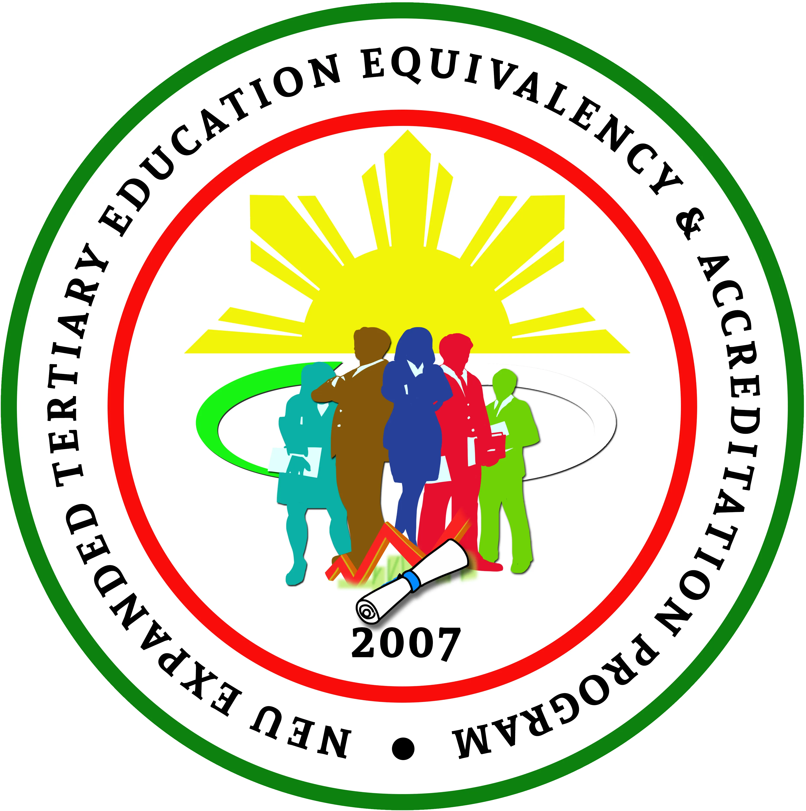
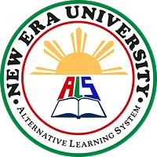
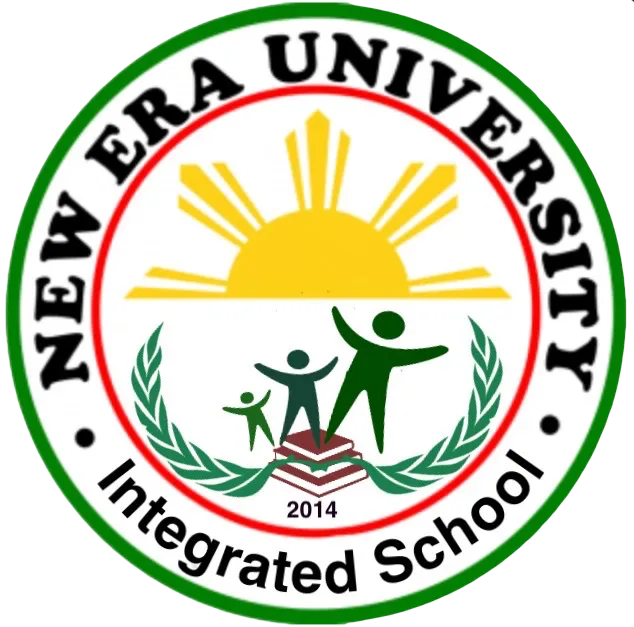
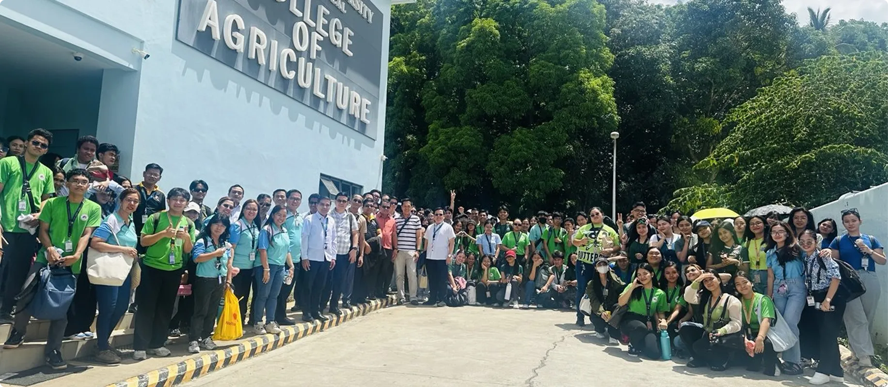
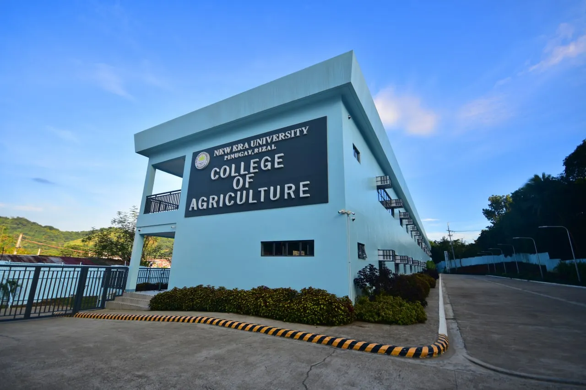
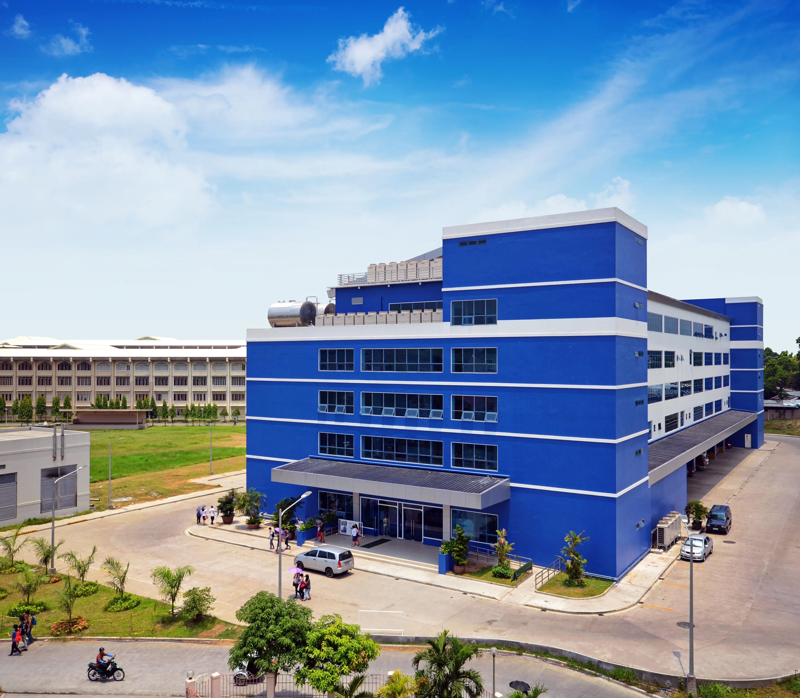

UNDERGRADUATE PROGRAMS
New Era University aims to achieve excellence in different industries and continues to develop its curricular offerings.

COLLEGE OF AGRICULTURE
VIEW COLLEGE
COLLEGE OF ARTS AND SCIENCES
VIEW COLLEGE
COLLEGE OF BUSINESS ADMINISTRATION
VIEW COLLEGE
COLLEGE OF CRIMINOLOGY
VIEW COLLEGE
COLLEGE OF ENGINEERING & ARCHITECTURE
VIEW COLLEGE
COLLEGE OF EDUCATION
VIEW COLLEGE
COLLEGE OF INFORMATICS & COMPUTING STUDIES
VIEW COLLEGE
COLLEGE OF MIDWIFERY
VIEW COLLEGE
COLLEGE OF PHYSICAL THERAPY
VIEW COLLEGE
COLLEGE OF RESPIRATORY THERAPY
VIEW COLLEGE
COLLEGE OF ACCOUNTANCY
VIEW COLLEGE
COLLEGE OF COMMUNICATION
VIEW COLLEGE
COLLEGE OF LAW
VIEW COLLEGE
COLLEGE OF MUSIC
VIEW COLLEGE
COLLEGE OF MEDICINE
VIEW COLLEGE
COLLEGE OF NURSING
VIEW COLLEGE
COLLEGE OF MEDICAL TECHNOLOGY
VIEW COLLEGESCHOOL OF INTERNATIONAL RELATIONS
VIEW COLLEGE
SCHOOL OF GRADUATE STUDIES (SGS)
FOUNDED: 1983
Available in:
Main Campus - Quezon City
VISION
To be a premier center of transformative post-graduate scholarship that develops global leaders and innovative researchers distinguished by a profound Christian character and an unwavering commitment to the service of humanity.
MISSION
The School of Graduate Studies is dedicated to advancing the frontiers of knowledge through rigorous research, ethical leadership, and professional excellence, all anchored in the truth of God's word and directed toward the ultimate honor and glory of God.
GOALS
1. Advance Scholarship and Research: Promote a culture of high-impact research and creative inquiry that addresses complex societal challenges through the lens of a Christian worldview.
2. Cultivate Ethical Leadership: Develop specialized professionals who integrate technical mastery with the values of integrity, discipline, and Christ-centered service in their respective fields.
3. Enhance Professional Competence: Provide advanced curricula that meet international standards, ensuring graduates are competitive, innovative, and adaptive in a rapidly evolving global landscape.
4. Foster Spiritual Integration: Ensure that the pursuit of advanced knowledge remains firmly rooted in the philosophy that "Godliness is the foundation of knowledge," bridging the gap between faith and intellect."
5. Serve the Global Community: Implement community-extension and consultancy programs that translate graduate-level expertise into tangible benefits for the upliftment of humanity.
HISTORY AND PROFILE

The first program of graduate study was implemented in Academic Year 1983-1984, when the then-New Era College opened the Master of Arts in College Teaching (MACT) course offering. Initially, the graduate program was under the supervision of the Institute of Arts and Sciences, which also oversaw the initial classes for teacher education. Dr. Amanda M. Mejorada, who was the Dean of the IAS at the time, was considered the Graduate School's first Dean. By 1988, the Graduate School became a separate institution of the College, with Dr. Perlita N. Cabilangan serving as both Dean of the program and President of the College.
As the years passed, the College—which eventually became a University—offered more programs in the graduate and post-graduate levels of education. Academic Year 1995-1996 saw the University produce its first batch of graduates under the Doctor of Education (Ed.D.) and Master in Business Administration (MBA) programs. By Academic Year 2012-2013, the Ed.D. programs were converted to Doctor of Philosophy (Ph.D.) programs in compliance with the standards set forth by the Commission on Higher Education (CHED).
There was a brief period of time when the SGS branched off into two separate Schools. This was in response to calls for verticalization, which is the process of aligning the baccalaureate courses with their graduate counterparts. From 2015 to 2021, SGS became the Graduate School of Education (GSE) and Graduate School of Business (GSB). It was during this time when the University's first Doctor in Business Administration (DBA) graduates received their diplomas at the end of Academic Year 2018-2019.
However, due to the various concerns regarding accreditation, the University administration decided to re-establish the School of Graduate Studies in 2021, with Dr. Julian J. Meimban III, Vice-President for Research, acting as concurrent Dean. Under his leadership, the SGS was awarded Level III accreditation for the PhD, MAEd, and MBA programs by the Association of Christian Schools, College and Universities Accrediting Council Incorporated (ACSCU-ACI) in the year 2023. The SGS is currently headed by Dr. Ligaya Z. Del Rosario as its Dean, as the department moves towards Level IV Accreditation.
| SCHOOL OF GRADUATE STUDIES DEANS | |
|---|---|
| NAME | TENURE |
| Dr. Amanda M. Mejorada | 1983 - 1988 |
| Dr. Perlita N. Cabilangan | 1988 - 1992 |
| Dr. Corazon C. Osorio | 1993 - 1995 |
| Dr. Lucia M. Narag | 1995 - 2011 |
| Dr. Elisa M. Valdez | 2011 - 2012 |
| Dr. Nilo L. Rosas | 2012 - 2013 |
| Dr. Rodolfo Lemuel B. Braña | 2013 - 2015 |
| GRADUATE SCHOOL OF EDUCATION DEANS | |
| Dr. Lydia L. Libunso | 2015 - 2016 |
| Dr. Elisa M. Valdez | 2016 - 2018 |
| Dr. Remedios D. Fuentes | 2018 - 2021 |
| GRADUATE SCHOOL OF BUSINESS DEANS | |
| Dr. Emila M. Mansanghaya | 2015 - 2021 |
| SCHOOL OF GRADUATE STUDIES RE-ESTABLISHMENT | |
| Dr. Julian J. Meimban III | 2021 - 2025 |
| Dr. Ligaya Z. Del Rosario | 2025 - Present |
DOCTORATE DEGREES
DOCTOR IN BUSINESS ADMINISTRATION
VIEW PROGRAM >
DOCTOR OF EDUCATION
VIEW PROGRAM >MASTER'S DEGREES
MASTER IN BUSINESS ADMINISTRATION
VIEW PROGRAM >MASTER IN EDUCATION
VIEW PROGRAM >For more information about New Era University - School of Graduate Studies, you may contact the following:
Contact Information
Office: 4th Floor, Room B410, Main Building, New Era University, Quezon City
Website: www.neu.edu.ph
Email: graduatestudies@neu.edu.ph

EXPANDED TERTIARY EDUCATION EQUIVALENCY & ACCREDITATION PROGRAM (ETEEAP)
FOUNDED: 2007
Available in:
Main Campus - Quezon City
The ETEEAP (Expanded Tertiary Education Equivalency and Accreditation Program) is a comprehensive educational assessment program at the tertiary level that recognizes, accredits and gives equivalencies to knowledge, skills, attitudes and values gained by individuals from relevant work/experiences.
VISION
An equivalency and accreditation program that produces globally competent graduates imbued with christian values, discipline, and service to humanity.
MISSION
The NEU ETEEAP is committed to provide assistance to qualified individuals in obtaining their degree through equivalency and accreditation of relevant learning experience gained in their workplace.
OBJECTIVES
The NEU ETEEAP in accordance with its policies, processes and procedures, shall implement accreditation and equivalency of learning from informal and non-formal systems and the world of work, and award relevant academic degrees to qualified individuals.
HISTORY

The ETEEAP (Expanded Tertiary Education Equivalency and Accreditation Program) is a comprehensive educational assessment program at the tertiary level that recognizes, accredits and gives equivalencies to knowledge, skills, attitudes and values gained by individuals from relevant work/experiences.
One of the goals of New Era University is to promote access to non-conventional higher education and basic education programs. In 2007, New Era University applied for a permit to operate the ladderized course and Expanded Tertiary Education Equivalency & Accreditation Program (ETEEAP) programs in coordination with the School of Graduate Studies, Open University, College of Business Administration, College of Arts and Sciences and College of Communication.
The ETEEAP started in 2009 under the Department of Vantage Education Management (VEM) presided by Brother Gabby Malonzo, former VEM Director.
In 2014, the ETEEAP was separated from VEM and was headed by Dr. Lydia Libunao, Dean of the College of Education. She became the first ETEEAP Director until her demise in February 2019. It started with a few enrollees who were interested in pursuing their degree through an alternative means because of a number of reasons, and one of them is the program’s flexibility unlike the regular program which has its own rigid schedule of classes.
Dr. Anita P. Santos took over the directorship in February 2019 with Ms. Arlene T. Sarmiento and Ms. Joy M. Gisete giving assistance and support to the ETEEAP Office. In November 2019, the NEU President and the BOT approved the appointment of the Assistant Director of ETEEAP, Dr. Cristina V. Moreno. Later on, Ms. Catherine Bautista also joined the ETEEAP Unit as a staff member.
The ETEEAP started with just a handful of enrollees who were interested in pursuing their degrees. With the initiative of Dr. Anita P. Santos, ETEEAP advertisement was aired in NET 25 on August 22, 2020. It created more than a hundred inquiries via email and social media. The ETEEAP staff started to address calls and text messages addresses to the ETEEAP Office.
The worldwide pandemic was not a hindrance as the ETEEAP Director gathered her staff and two professors on September 21 and 29 to discuss how assessments can be made to interested applicants brought about by NET 25 ads. An initial interview of the applicants together with a group of assessors/interviewers was organized for the applicants either through online for those outside the country and from the provinces. The possibility of face-to-face interview was also considered for those applicants residing near the school or in the Metro Manila area. The first interview face to face and via online (Zoom and Google meet) was organized and was held on October 9, 2020 at the Apartelle Canteen. The face to face interviews became a regular session every Tuesdays and Fridays from 1:00 PM to 5:00 PM from October 2020 to March 2021. The ETEEAP Director led the panel assessors composed of the former NEU President, deans of different colleges (Education, Accountancy, and Business Administration) and selected professors. They made an initial assessment of ETEEAP applicants who were able to comply with the requirements of ETEEAP. Since there was a continuous increase in the number queries of interested applicants, Director Santos set a goal of 100 enrollees for the Academic year 2021-2022.
With the tightening up of the community quarantine from GCQ to ECQ in the last week of March 2021, the ETEEAP Department continuously held orientation and initial assessment of applicants online. The ETEEAP staffs were assisted by the deans from the College of Education and College of Accountancy, Information Director, selected professors, and the former NEU President. By the end of March, 2021, more than a hundred applicants who were interviewed signified their intention to enroll in the ETEEAP courses.
From 2010 to 2020, the ETEEAP Department had a total of 80 graduates including 14 ministers from the School for Ministers (SOM). On October 26, 2021, the first graduation solely for ETEEAP students was held via online to which 55 were conferred graduates of this program.
In 2021, the ETEEAP Office continued to offer programs under Dr. Cristina V. Moreno, ETEEAP Director and was assisted by Dr. Abrian Joy B. Orencia, the former Assistant Director. Serving as support staffs were Ms. Arlene T. Sarmiento, for Admission and Records Management and Ms. Lailani P. Madlangbayan, for Academic and Administrative matters. Bro. Jonas Sarmiento were the assigned Ministrong Tagasubaybay. From 2021 to 2023, ETEEAP had a total of 377 graduates.
The members of CHED Regional Quality Assurance Team recently visited the University last April 30 2024 to review the records of ETEEAP and speak with key officials. Before this date, the Office meticulously prepared for the recertification of four programs namely: Bachelor of Business Administration majors in Financial Management, Marketing Management, Human Resource Development Management; Bachelor of Secondary Education majors in English and Filipino; Bachelor of Arts in Communication, and Bachelor of Science in Computer Science.
ASSESSMENT AND ADMISSION PROCESS
PRE-EVALUATION
- Verification of initial requirements
- Notification of results
- Scheduling of initial assessment
INITIAL ASSESSMENT
- Review of portfolio
- Interview of applicant
- Notification of results
ADMISSION
- Enrollment of courses
COURSE ADMINISTRATION, MONITORING AND ACCREDITATION
- Assignment of mentors and advisers
- Accreditation of courses
- Implementation of course activities
FINAL ASSESSMENT
- Review of final portfolio
- Final interview and deliberation
GRADUATION
- Issuance of clearance
- Conferment of degree
ENTRY LEVEL AND QUALIFICATIONS
Interested applicants should be at least 23 years old, high school graduate with a five-year related work experience related to the program he/she wants to acquire through ETEEAP.
Applicants with ALS certificate from the Department of Education can also apply to this program as long as he/she satisfy the requirement stated above.
MODE OF LEARNING
Module-based learning is an innovative educational approach where the curriculum is structured into self-contained units or modules. Each module focuses on specific topics, allowing learners to study them independently or in sequence according to their course units.
ETEEAP uses this learning approach because this is suited to their flexible time. It gives them the opportunity to study and finish the module at their own pace.

For more information about New Era University - ETEEAP, you may contact the following:
Contact Information
Dr. Mark C. Malabuyoc
0927-065-8795
Dr. Isagani T. Sabado
0917-108-3022
Office: 5th Floor, School of Management Building, New Era University, Quezon City
Website: www.neu.edu.ph
Email: eteeapinquiry@neu.edu.ph

ALTERNATIVE LEARNING SYSTEM (ALS)
FOUNDED: 2007
Available in:
Main Campus - Quezon City
Ang ALS o ang Alternative Learning System ay isang alternatibong paraan o sistema ng pagkatuto na naglalayong tulungan ang mga Out of School Youth and Adults (OSYA), magpatuloy sa pag-aaral sa isang pamamaraan, oras at lugar na naaangkop sa kanilang kagustuhan at upang makamit nila ang kanilang layunin na mapabuti ang kalidad ng kanilang buhay at maging isang produktibong mamamayan.
VISION
A recognized and respected producer of God-fearing lifelong learners.
MISSION
Provide exemplary programs and open creative learning opportunities to achieve multiple literacy for all anchored on Christian Values.
OBJECTIVES
The ALS Aims To:
- Protect and promote the right of all the citizen to quality basic education through imparting value-laden education;
- Promote the right of all citizens to quality basic education responsive to the needs of the time;
- Provide a viable alternative to the existing formal education instruction encompassing through the adoption and utilization of appropriate instructional methos and resources;
- Improve the socio-economic status of the Out-of-School Youth and the poor by conducting useful and significant researches;
- Enhancing their basic educational capability through outreach services which promote selfhelp in the community;
- Promote access to literacy programs for the attainment of basic skills that include numeracy and functional literacy;
- Develop livelihood skills which manifest in the individual specific competencies that prepare, improve and enhance employability and economic productivity;
WHO CAN ENROLL IN ALS?
Those who want to learn to write, read and calculate aged 12 years and above.
Educated in Elementary school but did not graduate, aged 12 years and above.
Graduated from elementary school and attended Junior High School but did not graduate, aged 16 years or older.
Among the following:
- Industry-based workers
- Person with disabilities
- Used to be inmates
- Rebels or insurgents
- Members of cultural minorities
- Economically challenged; those who cannot afford formal schooling
REQUIREMENTS
- Photocopy of PSA Birth Certificate/ Baptismal Certificate.
- Any Government Issued ID with date of birth.
- 2x2 picture with white background.
- Form 137-E.
- Form 137-A.
CERTIFICATION/ASSESSMENT PROCESS
In order to receive a certificate an ALS student must undergo what is called ALS Accreditation and Equivalency (A&E) Assessment and Certification.
The ALS Accreditation and Equivalency (A&E) Assessment and Certification is a type of quiz to find out what an ALS student has learned based on the curriculum of his/her school.
ALS Learners who pass in the conducted ALS Accreditation and Equivalency (A&E) Assessment will be given a certificate and it can be owned to continue to Highschool or College at any school they chose.
MODE OF LEARNING
- Online Modality
- Synchronous Classes
- Asynchronous Classes
- Modular
- DepEd TV - via Youtube
- Public Elementary School, High School, o Barangay Hall
WHO TEACHES ALS?
- Called a facilitator/ Instructional Manager.
- Must be trained in ALS.
- Must be a College Graduate (for A&E Program).
- Must be HS Graduate or even less (for the Literacy Program).
ALS CURRICULUM
- Communication skills (English and Filipino).
- Problem Solving and Critical Thinking (Science and Mathematics).
- Sustainable Use of Resources and Productivity.
- Development of Self and a Sense of Community.
- Expanding One's Own World Vision.
- Digital Literacy.
For more information about New Era University - ALS, you may contact the following:
Contact Information
Ms. Robina Angeles
0927-065-8798
Office: 3rd Floor, Room M303, Main Building, New Era University, Quezon City
Website: www.neu.edu.ph
Email: inquiries@neu.edu.ph

INTEGRATED SCHOOL
FOUNDED: 2014
Available in:
Main Campus - Quezon City, Pampanga, Lipa, Rizal
The NEU Integrated School houses the Basic Education Programs from Pre-school to Grade School and Junior High School, including Senior High School programs that started back in 2015.
VISION
A world-class Institution of learning with a unique Christian culture of excellence, discipline, and service to humanity.
MISSION
Provide quality education anchored on Christian values with the prime purpose of bringing honor and glory to God.
GOALS
- Impart value-laden education to the total development of man.
- Offer curricula responsive to the needs of the time.
- Optimize learning through the adoption and utilization of appropriate instructional methods and resources.
- Propel institutional development through the conduct of useful and significant researches.
- Extend outreach services which promote self-help in the community.
- Promote access to non-conventional higher education and basic education programs.
- Develop servant leaders among staff, faculty members, and administrators.
- Produce God-fearing, competent, and disciplined graduates.
HISTORY
Established upon the core philosophy that "Godliness is the Foundation of Knowledge," the New Era University (NEU) Integrated School operates with a profound spiritual mandate. Its mission is to deliver high-quality education deeply anchored in Christian values, specifically aimed at bringing honor and glory to God. This foundation is driven by a vision to remain a world-class institution recognized for a unique Christian culture of excellence, discipline, and a steadfast commitment to service to humanity.
The department officially began its journey in 2014, marking a significant milestone in the university’s history by unifying its basic education levels into a single, cohesive unit. This integration was designed to provide a more seamless and consistent educational experience for students as they progress through the K-12 system. By consolidating administrative and academic oversight, the Integrated School ensures that the university's high standards of discipline and spiritual integrity are maintained across all developmental stages.
The school’s comprehensive academic offerings are structured to support learners from their earliest years through young adulthood. The program includes Preschool and Elementary (Nursery to Grade 6) and continues through Junior High School (Grades 7 to 10) and Senior High School (Grades 11 and 12). Furthermore, the Integrated School features a dedicated Special Education (SPED) Program, ensuring that inclusive, specialized instruction is available for students with diverse learning needs, reflecting the school's commitment to serving all members of the community.
Ultimately, the NEU Integrated School serves as a nurturing ground where academic rigor meets spiritual growth. Students are encouraged to pursue excellence not just for personal gain, but as a form of service to others and a tribute to the Creator. Through this balanced approach to learning, the institution continues to produce graduates who are disciplined, ethically grounded, and prepared to contribute meaningfully to global society while upholding their unique Christian identity.
OFFERINGS
- Preschool and Elementary (Nursery to Grade 6).
- Junior High School (Grades 7 to 10).
- Senior High School (Grades 11 and 12).
- Special Education (SPED) Program.
Senior High School Tracks and Strands
Academic Track
Accountancy, Business and Management (ABM)
The Accounting, Business and Management (ABM) strand provides students with the competencies, skills, and knowledge they need to work in the managerial, banking, and corporate worlds. This strand is for students who want to become entrepreneurs, managers, accountants, and business leaders.
ABM is designed as an introductory course in accounting and business and management where students are trained to think critically, logically, and scientifically and are acquainted with the procedures and rudiments of accounting, business and management concepts and principles in order to prepare them to pursue college degrees that focus on business and industry where their contribution as future accountants, entrepreneurs, and business leaders are vital to the progress and development of the economy and critical to the promotion of a sustainable environment-friendly business.
General Academic Strand (GAS)
GAS is designed for students who would desire to engage in more general areas of study as compared to more specific fields of study. It offers an option for students to take elective subjects from specialized subjects of any strands.
Just like the other strands, the GAS poses its own set of challenges that the student will face. For one, you might be expected to become a “multi-tasker and jack of all trades” who is adept at Accountancy, Business, and Management, Science, Technology, Engineering, Mathematics, Humanities and Social Science.
Humanities and Social Sciences (HUMSS)
The strand deals with expansive range of various fields of knowledge namely: anthropology, archaeology, economics, history, geography, philosophy, political science, psychology and sociology. Since it is devoted to the study of societies, the relationships among individuals within those societies and their culture, the students will be able to develop their analytical, interpersonal and interpersonal skills.
They are expected to become critical thinkers and problem solvers. HumSS offers diverse career paths for future teachers, lawyers, social workers, writers, journalists, counselors, policemen, psychologists, among others.
Science, Technology, Engineering and Mathematics (STEM)
This is for students who are planning to take up courses on Applied and Pure Sciences, Mathematics and Engineering. Through this strand, the students will gain knowledge understanding of the basic STEM-related disciplines such as Chemistry, Calculus, Physics, and Biology. It deals with comprehensive foundation on several branches of Physical, Earth and Life Sciences, and pure and applied Mathematics.
Some of the courses in line with STEM are BS in Actuarial Science, BS in Biology, BS in Geology, BS in Agriculture/Fisheries, BS in Engineering (Chemical, Civil, Computer, Electrical, Industrial, Mechanical, etc.), BS in Information Technology, BS in Computer Science, BS in Statistics, BS in Physics and BS in Applied Mathematics.
Technical, Vocational and Livelihood (TVL) Track
Home Economics (HE)
The HE strand is specialized hands-on courses that meet the standard hour requirement and competency-based assessment of TESDA, it focuses on livelihood projects such as Cookery, Bread and Pastry Production, Beauty Care and Hairdressing, Handicraft Making, Housekeeping, and such.
This strand will greatly help students find jobs immediately or start their own businesses.
Information and Communication Technology (ICT)
ICT strand deals with various tools for communication and information dissemination. It also focuses on software and hardware Installation, Computer Programming and Servicing, Graphics, Technical Drafting and Animation.
Arts and Design Track
The Arts and Design Track provides theoretical and practical knowledge on different branches of arts specifically in media arts, visual arts, music and performing arts.
This track is for students who would like to pursue careers in the creative fields which includes media (film and TV) production, fine arts, visual arts, graphic design, architecture, art instruction and education, stage production and performance and many others.
- Media and Visual Arts: Students learn the fundamentals of photography, digital arts, and design.
- Music: Focuses on the development of musical skills through performance and theory.
- Literary and Theater Arts: Prepares students for the production and performance of literary works and theater productions.
For more information about New Era University - Integrated School, you may contact the following:
Registrar's Office
Senior High School
+63 905 172 0184
1st Floor, Room A103, Integrated School Building A, Quezon City
Elementary & Junior High School
+63 905 172 0185
3rd Floor, Room B303, Integrated School Building B, Quezon City
Website: www.neu.edu.ph
Email: integratedschool@neu.edu.ph
Virtual Office Link: https://meet.google.com/piv-nxzb-hcq
COLLEGE OF INFORMATICS AND COMPUTING STUDIES (CICS)
FOUNDED: 2014
Available in:
Main Campus - Quezon City
Pampanga Branch
Lipa Branch
VISION
An avenue of the University in honing prime movers of advancement in the information and communications technology era.
MISSION
Produce graduates responsive to the converging needs of a highly progressive information and communications society.
GOALS
The College of Computer Studies is committed to pursue excellence in the field of Information and Communications Technology (ICT) through the following thrusts:
- Support the University's vision and mission statements through the utilization of information and communications technology;
- Offer curricula that impart and inculcate concepts, theories, and algorithmic foundations, which implement effective information and computing solutions;
- Enhance the students' skills and knowledge of the theoretical and practical aspects of information and communications technology;
- Train students as ICT professionals and researchers proficient in design, development, and application of computing solutions;
- Inculcate ethical and moral values keen on the conservation of the country's natural resources;
- Deliver community services that facilitate the sustainable development of the community;
HISTORY AND PROFILE
"The field of Information and Communications Technology (ICT) is dynamic. Its advancement and development had been rapid and its development is continuous process. To face this challenges of advancement, the Commission on Higher Education (CHED) recognizes the need to be responsive according to the current needs of the country. Hence, it is essential and important that the country's ICT capability should be continually developed and strengthen to be at par globally." [CMO NO. 53 SERIES OF 2006 – ITE Rationale]
NEU College of Informatics and Computing Studies (CICS) is the response of the University to the above mandate of the Commission. It envisions to produce competent graduates that shall cater the needs of the ICT industry.
In 2001, the program formally opened under the College of Engineering and Technology (CET). Permit and recognition to offer the program was granted by Commission on Higher Education (CHED) after compliance to its policies and requirements.
Years later, the existing curriculum was upgraded to a ladderized (TVET and CHED combination) curriculum and the department applied for the Philippine Association of Colleges and Universities-Commission on Accreditation (PACUCOA) from its Consultancy, Preliminary and Formal level.
With the help and support of the Church Administration and the cooperation of all the faculty members, staff, and students, Level 1 Accreditation was passed and granted at the same time.
In 2014, after having complied with the regulatory requirements of PACUCOA and CHED, the need to separate the program to CET came. Thereafter was the birth of the College of Computer Studies (CICS).
Today, the CICS offers wide array of computer-related programs, to with: Bachelor of Science in Computer Science, Bachelor of Science in Entertainment and Multimedia Computing (Specialization: Game Development & Animation Technology), Bachelor of Science in Information Systems, and Bachelor of Library and Information Science.
Planning continues to take its course and the implementation of action plans are underway to further produce quality graduates of Information Technology who can keep abreast in a global competition of employment and practice.
THE COLLEGE SEAL
The official logo of each college follows the standard wherein the emblem and the above portion (the rising sun) symbolize the identity of the University. The other half of the logo (lower part) represents the college.
In the above logo, the College of Computer Studies is represented by the modified symbol of Wi-Fi strength signal.
The Wi-Fi strength signal symbol is a powerful icon of technology. It was modified to resemble two important identities of the College:
- The left part that resembles the acronym CCS.
- The whole icon signifies binary digits One (1) and Zero (0) – the language of computers.
The arrangement of symbols connotes that CICS pushes a very strong inculcation and empowerment of knowledge and skills to its clientele in a highly diverse world of computing.
CURRICULUM
The General Outline of the Information Communications Technology (ICT) Curriculum is divided into Five (5) components namely: General Education Courses (GEC), Basic ICT Core Courses (BCC), ICT Professional Courses (PC), ICT Electives (ELEC) and Free Electives (FELEC).
ICT shall be built upon a core of courses and a series of professional courses leading to one or more programs (i.e. BS Information System, BS Information Technology). The GEC as mandated by the Commission on Higher Education (CHED) shall form part of the requirements for ICT. The required natural science courses in the GEC should include a laboratory component.
GENERAL CURRICULUM OUTLINE
| GENERAL EDUCATION COURSES (GEC) | |
|---|---|
| COURSE | NO. OF UNITS |
| Language and Humanities | 24 Units – Minimum |
| Mathematics, Natural Sciences and Technology | 15 Units – Minimum |
| Social Sciences and Communications | 15 Units – Minimum |
| Basic ICT Core Courses (GEC) | 18 Units – Minimum |
| ICT Professional Courses | 33 Units – Minimum |
| ICT Electives | 12 Units – Minimum |
Free Electives with the following specializations:
|
9 Units – Minimum |
| Physical Education (PE) | 8 Units – Minimum |
| National Service Training Program (NSTP) | 6 Units – Minimum |
MEANS OF CURRICULUM DELIVERY
- Lecture and Classroom Discussions
- Programming Demonstrations
- Guided Hands-on Programming and Laboratory Sessions
- Guided Design and Development of Project Specifications
- Independent Project Requirements Gathering, Design, and Implementation
- Mentorship and Monitored Internships and/or Field Trips
- Peer Learning
- Online Collaboration
- Research Activities
PROGRAM OFFERINGS
BACHELOR OF SCIENCE IN COMPUTER SCIENCE
VIEW PROGRAM >
BACHELOR OF SCIENCE IN INFORMATION TECHNOLOGY
VIEW PROGRAM >
BACHELOR OF SCIENCE IN ENTERTAINMENT AND MULTIMEDIA COMPUTING
VIEW PROGRAM >
BACHELOR OF SCIENCE IN INFORMATION SYSTEM
VIEW PROGRAM >BACHELOR OF SCIENCE IN INFORMATION TECHNOLOGY (BSIT)
The BS Information Technology program includes the study of the utilization of both hardware and software technologies involving planning installing, customizing, operating, managing and administering, and maintaining information technology infrastructure that provides computing solutions to address the needs of an organization.
The program prepares graduates to address various user needs involving the selection, development, application, integration and management of computing technologies within an organization.
PROGRAM OUTCOMES
- Analyze complex problems, and identify and define the computing requirements needed to design an appropriate solution
- Apply computing and other knowledge domains to address real-world problems
- Conduct research in emerging areas of computer science such as AI and data science;
- Design and develop computing solutions using a system-level perspective
- Utilize modern computing tools
PROGRAM GOALS
The BSIT graduates are expected to become globally competent, innovative, and socially and ethically responsible computing professionals engaged in life-long learning endeavours. They are capable of contributing to the country's national development goals.
CAREER OPPORTUNITIES
Among the Specific Professions, Careers, Occupations or trade that the graduates of BSIT may pursue after completing all the requirements leading to this course are the following:
For Fresh Graduate/Few Years of IT Experience:
- Web and Applications Developer
- Junior Database Administrator
- Systems Administrator
- Network Engineer
- Junior Information Security Administrator
- Systems Integration Personnel
- IT Audit Assistant
- Technical Support Specialist
After Reasonable Years of Professional Experience:
- QA Specialist
- System Analyst
- Computer Programmer
BACHELOR OF SCIENCE IN COMPUTER SCIENCE (BSCS)
Bachelor of Science in Computer Science (BSCS) is the study of concepts and theories, algorithmic foundations, implementation, and application of information and computing solutions. BSCS prepares the students to be IT professionals and researchers, and to be proficient in designing and developing computing solutions.
Specifically, BSCS covers the intricacies of software applications, data processing, web development, programming, computer architecture, and skills in building computer networks. It equips the students with the theoretical framework of computer science, through learning experiences that will take place in computer laboratories where students will experiment with software applications, programming tools, and actual computer design using computer hardware.
PROGRAM OUTCOMES
- Analyze complex problems, and identify and define the computing requirements needed to design an appropriate solution
- Apply computing and other knowledge domains to address real-world problems
- Design and develop computing solutions using a system-level perspective
- Utilize modern computing tools
PROGRAM GOALS
The BSCS graduates are expected to become globally competent, innovative, and socially and ethically responsible computing professionals engaged in life-long learning endeavours. They are capable of contributing to the country's national development goals.
COMPETENCY STANDARDS
Prospective graduates of BSCS Program are expected to have acquired but not limited to the following competencies:
Personal Skills
- Personal-discipline Skills;
- Critical-thinking Skills;
- Inter- and Intra- Person Motivation Skills;
- Problem Solving Skills;
- Planning and Organizing Skills;
- Ethical Thinking:
- Entrepreneurial Thinking;
- Innovative;
- Perseverance in Pursuing Goals and Continuous Improvement.
Interpersonal Skills
- Teamwork and Collaborative Skills;
- Oral and Written Communication Skills;
- Conflict Resolution Skills.
Technical Understanding
- Application of fundamental computer concepts as problem solving skills;
- Design and implementation of computer-based solutions;
- Recognition and application of technical standards and interoperability;
- Research in Computer Science related areas;
- Integration of knowledge learned in different areas of Computer Science.
CAREER OPPORTUNITIES
Among the Specific Professions, Careers, Occupations or trade that the graduates of BSCS may pursue after completing all the requirements leading to this course are the following:
For Fresh Graduate/Few Years of IT Experience:
- Computer Support Specialist
- Computer Hardware Troubleshooter
- Software Tester
- Junior Programmer
- Web Developer
- Mobile Web Developer
- Computer Data Encoder
- Associate IT Specialist
After Reasonable Years of Professional Experience:
- Application Developer
- Computer Science Instructor
- Database Programmer/Designer
- Data Communications Analyst
- Information Security Engineer
- Network and Computer Systems Administrator
- Quality Assurance Engineer
- Researcher
- Systems Developer/Analyst
- Software Development Analyst
- Software Engineer
- Software Team Leader
BACHELOR OF SCIENCE IN ENTERTAINMENT AND MULTIMEDIA COMPUTING (BSEMC)
Entertainment and Multimedia Computing is the study and use of concepts, principles, and techniques of computing in the design and development of multimedia products and solutions. It includes various applications such as in science, entertainment, education, simulations and advertising.
The program enables the students to be knowledgeable of the whole pipeline of Game Development and Digital Animation projects. The students will acquire the independence and creative competencies to articulate project design and requirements of new projects, not necessarily based on the standard templates.
PROGRAM OUTCOMES
- Analyze complex problems, and identify and define the computing requirements needed to design an appropriate solution
- Apply computing and other knowledge domains to address real-world problems
- Design and develop computing solutions using a system-level perspective
- Utilize modern computing tools
PROGRAM GOALS
The BSEMC graduates are expected to become globally competent, innovative, and socially and ethically responsible computing professionals engaged in life-long learning endeavours. They are capable of contributing to the country's national development goals.
SPECIALIZATION
Game Development (GD)
It is the study and application of fundamental and advanced theories in game design, scientific simulations, use and development of gaming technology and tools, and production of commercially acceptable digital games and viable solutions for use in entetainment and scientific applications. Its objective is to prepare students to be game develpment professionals with specialized knowledge, competencies and values in designing, developing, and producing digital games and/or tools, and in managing game development projects for various applications.
Specific Professions/Careers/Occupation for Graduates
- Lead Game Programmer/Developer/Tools Developer; Associate Technical Director / Game Designer;
- Associate Game Quality Assurance Specialist;
- Associate Technical Director / Game Designer
- Senior Interactive Software Developer;
- Associate Game Producer;
- Senior Game Sound Engineer;
- Graphics Programmer;
- Associate Business Development Specialist for Entertainment and Multimedia
- Industries;
- Perseverance in Pursuing Goals and Continuous Improvement.
Digital Animation Technology (DATech)
It is the study and application of fundamental and advance theories and advanced techniques in 2D and 3D animation, use and development for advancement of animation technologies, and production of commercially acceptable content and viable solutions for different platforms such as broadcast, web and mobile cast.
Its objective is to prepare students to be digital animation professionals who are equipped with both creative and technical knowledge, skills, and values in conceptualizing, designing and producing animation products and solutions, and in managing such projetcs over different technology platforms. Specific Professions/Careers/Occupation for Graduates
Specific Professions/Careers/Occupation for Graduates
- Creative Programmer;
- Technical Animator;
- Creative Content Developer;
- Ad Builders;
- Technical Director for Modelling / Rigging / Lighting;
- Animation Quality Assurance Specialist;
- Technical Director for Game Art;
- Digital 2D or 3D Animation Content Producer;
- Digital 2D or 3D Production Designer;
- Associate Business Development Specialist for Entertainment and Multimedia Industries;
BACHELOR OF SCIENCE IN INFORMATION SYSTEM (BSIS)
The BS Information Systems Program includes the study of application and effect of information technology to organizations. Graduates of the program should be able to implement an information system, which considers complex technological and organizational factors affecting itThese include components, tools, techniques, strategies methodologies, etc.
Graduates are able to help an organization determine how information and technology-enabled business processes can be used as strategic tool to achieve a competitive advantage. As a result, IS professionals require a sound understanding of organizational principles and practices so that they can serve as an effective bridge between the technical and management/users and communities within an organization This enables them to ensure that the organization has the information and the systems it needs to support its operations.
PROGRAM OUTCOMES
- Analyze complex problems, and identify and define the computing requirements needed to design an appropriate solution
- Apply computing and other knowledge domains to address real-world problems
- Design and develop computing solutions using a system-level perspective
- Utilize modern computing tools
PROGRAM GOALS
The BSIS graduates are expected to become globally competent, innovative, and socially and ethically responsible computing professionals engaged in life-long learning endeavours. They are capable of contributing to the country's national development goals.
CAREER OPPORTUNITIES
Among the Specific Professions, Careers, Occupations or trade that the graduates of BSIS may pursue after completing all the requirements leading to this course are the following:
For Fresh Graduate/Few Years of IT Experience:
- Organizational Process Analyst
- Data Analyst
- Solutions Specialist
- Systems Analyst
- IS Project Management Personnel
After Reasonable Years of Professional Experience:
- Application Developers
- End User Trainer
- Documentation Specialist
- Quality Assurance Specialist
For more information about New Era University - College of Informatics and Computing Studies, you may contact the following:
Contact Information
Ms. Justine D. Buna
+63 905 172 0184
Office: 4th Floor, Room M415, Main Building, New Era University, Quezon City
Website: www.neu.edu.ph
Email: computerstudies@neu.edu.ph
Virtual Office Link: https://meet.google.com/orf-owbe-gef
COLLEGE OF AGRICULTURE (COAG)
FOUNDED: 2018
Available in:
Rizal Branch - Pinugay, Baras, Rizal
VISION
To become a leading institution for learning in innovative and advanced agriculture sciences, contributing to sustainable global food security.
MISSION
To educate agriculture professionals skilled in researching, developing, sharing, and implementing innovative farming technology to enhance productivity and sustainability for national, regional, and global food security.
GOALS
The College of Agriculture is committed to pursue excellence through the following thrusts:
- Develop excellent instruction and facilities to produce globally competent graduates with noble moral and spiritual values.
- Boost food production by developing farming systems appropriate to the needs of the changing times.
- Build a bold research program that utilizes cutting-edge techniques to generate novel agricultural technologies essential for coping with the challenges imposed by overpopulation, poverty, and climate change on food security.
- Establish strong linkages with government and non-government organizations.
- Organize sustainable community outreach projects to uplift the quality of life.
HISTORY AND PROFILE

Inception
The College of Agriculture was initially proposed by the late Executive Minister Brother ERANO G. MANALO. The college was envisioned to combat hunger and poverty and ensure food security. Initially, the proposed site for the college was the expansive INC Resettlement Area in Maligaya, Laur, Nueva Ecija. However, due to the area's remoteness and lack of viable irrigation caused by the destruction of the watershed, this plan did not fully materialize.
In 2017, in response to the escalating poverty and hunger in the country, the current Executive Minister, Brother EDUARDO V. MANALO, continued to pursue the vision of establishing the College of Agriculture.
Preparations
Preparations for establishing the College began with benchmarking. The colleges of agriculture of selected state universities and colleges were visited for a tour of the facilities and to seek advice and insights from their respective Deans.
Two potential sites for the College were considered: the 25-hectare Church Eco-Farm in Malainen Luma, Naic, Cavite, and the 50-hectare Church property in Bgy. Pinugay, Baras, Rizal. The decision to build the College in Baras was due to the following reasons: proximity to the Church Central Office in Diliman, accessibility, and the rapidly developing communities adjacent to the Pinugay property, particularly the NHA Resettlement Projects, in Baras, Rizal.
Implementation
Groundbreaking: The groundbreaking ceremony for the future College of Agriculture Building was held on 30 July 2017, led by the Church Executive Minister, Bro. Eduardo V. Manalo, following the dedication of the Pinugay House of Worship.
Construction of the Temporary College of Agriculture Buildings
In March 2018, three (3) temporary buildings were constructed for the College of Agriculture: Building No. 1 houses two (2) classrooms and the library; Building No. 2 has one (1) classroom and the Science Laboratory; and Building 3 houses the Administration Office of the NEU Rizal Branch. Building No. 4, a bunkhouse, was later constructed for faculty members from Los Banos.
Site Visitation and Awarding of Government "Permit to Operate"
The CHED Region IV Regional Quality Assurance Team (RQAT) visited the site of the College of Agriculture and examined the required documents on 19 January 2018. On 3 July 2018, a few months after the construction of the temporary buildings for the College, CHED Region IV-A RQAT Supervisor, Mrs. Renifer Francisco, conducted an on-site visit of the temporary buildings and visited the College Main Building under construction.
On 14 September 2018, CHED granted the Government "Permit to Operate" for the first-year level of the BSA (Bachelor of Science in Agriculture) Program of the College.
Other Important Dates
- 7 January 2019. First day of classes of the first batch of the BSA Program. There were 47 pioneering students and seven (7) faculty members for the compressed first semester of schooling.
- 9 January 2020. The University of the Philippines Christian Brotherhood (UPCB) Dekada 70 Group and friends visited the College to identify programs for possible assistance.
- January 2021. Completion of the College of Agriculture Main Building.
- 6 January 2021. CHED granted the PERMIT TO OPERATE the third-year level of the BSA Program.
- 30 June 2021. The 4th Founding Anniversary of the College. The New Era University Alumni Association Inc. (NEUAAI) handed over scholarship grants to thirty (30) BS Agriculture students.
- 7 March 2022. CHED granted the GOVERNMENT RECOGNITION of the BS Agriculture Program of the College of Agriculture.
THE COLLEGE SEAL
The seal of the New Era University College of Agriculture stands as a sophisticated emblem of modern stewardship and scientific advancement. Central to its design is a gear housing a flourishing tree, which artfully integrates a DNA double helix into its roots, symbolizing the marriage of industrial precision, biological science, and environmental sustainability. Crowned by the radiant sun rays and established in 2018, the logo reflects a forward-looking commitment to food security and agricultural innovation.
Guided by the institutional philosophy that "Godliness is the foundation of Knowledge," the emblem suggests that the mastery of the earth and its resources is a sacred trust. It portrays a discipline where technical expertise in biotechnology and agricultural engineering is tempered by spiritual wisdom. Ultimately, the seal represents a community of scholars dedicated to cultivating the land with a sense of divine purpose, ensuring that progress remains rooted in ethical integrity and a profound respect for the natural world.
CURRICULUM
The BSA program aims to educate students in scientific thinking and entrepreneurial skills to prepare them for careers in technical agriculture. It focuses on identifying, diagnosing, and solving problems in agricultural and food system resources.
CURRICULUM STRUCTURE & KEY COMPONENTS
- General Education (GE) Curriculum: Courses including Language, Humanities, Social Sciences, and Mathematics, totaling roughly 63 units.
- Core Agricultural Subjects (~39+ units): Fundamental subjects covering all aspects of agriculture, such as:
- Animal Science: Livestock and poultry production, nutrition, breeding.
- Crop Science: Agronomy (plant/soil science) and Horticulture (vegetables/ornamental plants).
- Soil Science: Fertility, conservation, and management.
- Agricultural Extension/Communication: Technology transfer and community engagement.
- Agricultural Economics/Marketing: Business aspects and farm management.
- Fundamentals of Agricultural Engineering & Biotechnology: Technical and modern farming methods.
- Major/Specialization Subjects (~18 units): Focused courses based on the chosen major.
- Practicum/Thesis: Hands-on training in government agencies, research institutions, or agribusiness firms (~249 hours).
PROGRAM OUTCOMES
- Apply scientific method in research.
- Understand and apply agricultural productivity and sustainability concepts.
- Engage in agricultural production and post-harvest activities.
- Promote agricultural technologies and manpower development.
- Utilize information technology tools for agricultural problem-solving.
MEANS OF CURRICULUM DELIVERY
- Lecture and Classroom Discussions
- Guided Hands-on and Laboratory Sessions
- Mentorship and Monitored Internships and/or Field Trips
- Peer Learning
- Online Collaboration
- Research Activities
PROGRAM OFFERINGS
BACHELOR OF SCIENCE IN AGRICULTURE
VIEW PROGRAM >
For more information about New Era University - College of Agriculture, you may contact the following:
Contact Information
Office: EG Manalo St., Pinugay, Baras, Rizal, 1970 Philippines
Telephone Numbers:
+63 955 927 8190
+63 999 380 5408
(02) 8725-6034
Email: neurizal@neu.edu.ph
Virtual Office Link: https://meet.google.com/noz-odzt-iih
COLLEGE OF BUSINESS ADMINISTRATION (CBA)
FOUNDED: 1978
Available in:
Main Campus - Quezon City
Pampanga Branch
Lipa Branch
VISION
NEU - CBA is a globally recognized Center of Excellence in business, research, innovation and community service.
MISSION
Produce God-fearing entrepreneurs and professionals equipped with strong business skills and exposure.
GOALS
- Inculcate among students the Christian culture of excellence, discipline, and service to humanity.
- Provide quality business-laden and well-rounded education through appropriate instructional methods and resources, and offer curricula responsive to business trends and community needs.
- Develop students to be compassionate servant leaders and professionals who are concerned for the upliftment of life in society.
- Develop leaders and managers who are highly competent, innovative, technologically savvy, service-oriented, and spiritually mature professionals.
- Provide intensive local and international internship and exchange programs.
- Strengthen alliance with industry partners for the on-the-job training and job placement.
- Conduct research and extension services geared toward community development.
HISTORY AND PROFILE

In the School Year 1978-1979, New Era Educational Institute (NEEI) initially offered twelve (12) collegiate programs, among them were the BSBA Marketing and a 2-year Junior Secretarial program headed by its first College Dean, Dean Antonio A.M. Aledo.
The opening of the collegiate department necessitated the expansion of the school's physical make-up. In June 1978, the collegiate department transferred to a modern four-storey edifice along Commonwealth Avenue in Diliman, Quezon City. This was then called Evangelical College (EVCO) building.
In 1986, the undergraduate courses including the Institute of Business Education and Administration (IBEA) was transferred to its new building located in Central Avenue, New Era, Quezon City offering its additional courses, Bachelor of Science in Accountancy, Bachelor of Business Administration (BSBA) major in Banking & Finance, Management, Marketing, and 2-Year Computer Secretarial. Upon granting University status to New Era, Institute of Business Education and Administration (IBEA) became College of Business Education and Administration (CBEA). In 2011, Dean Isagani T. Sabado assumed the Dean of the College of Business Education and Administration (CBEA) when Dean Antonio A.M. Aledo retired.
In July 2014, the Bachelor of Science in Accountancy was spinned off and the College of Accountancy has been created. Dean Sabado was appointed as Dean of the College of Accountancy and Dean Emilia M. Mananghaya as the third Dean of the now College of Business Administration (CBA). Two (2) more programs were added, Bachelor of Science in Entrepreneurship and Real Estate Management in 2014.
In June 2016, the University implemented the verticalization of the programs. The Master of Business Administration programs, MBA General Program, MBA Specializations in Human Resource Management and Organization Development has been spinned off from School of Graduate Studies (SGS) to the Graduate School of Business. In the same year Doctor of Business Administration was offered.
At present, the following programs were offered in the College of Business Administration (CBA): Bachelor of Science in Business Administration majors in Marketing Management, Financial Management, Human Resource Development Management, Legal Management, Bachelor of Science in Entrepreneurship, and Bachelor of Science in Real Estate Management.
In June 2019, the first batch of Real Estate Management (REM) graduates took the Real Estate Brokers Licensure Examination and bagged the Top 8 and Top 9 spots in Real Estate Broker (REB) Licensure Examinations.
In August 2019, Real Estate Management (REM) graduates took the Real Estate Appraiser Licensure Examination and four (4) of the graduates placed Top 5, Top 6 and Top 10 that made New Era University as one of the Top Five (5) Performing Schools in Real Estate Management. Additional specializations in Master in Business Administration is offered, MBA in International Relations.
As the College of Business Administration celebrates its 41st year, it marked another milestone as the Church Administration inaugurated the new building, the School of Management that houses the Graduate School of Business, College of Business Administration (CBA) and College of Accountancy (COA).
In July 2024, Dr. Isagani T. Sabado was reappointed as Dean of the College upon the retirement of Dr. Emilia M. Mananghaya. In July 2025 the Business Administration program of the college was awarded Level 4 Accreditation status by the Philippine Association of Colleges and Universities-Commission on Accreditation (PACUCOA).
THE COLLEGE SEAL
The College of Business Administration (CBA) logo symbolizes the institution's mission to provide quality education anchored on Christian values while preparing students for excellence in various business disciplines.
It represents the college's dedication to forming ethical, competent, and service-oriented professionals in Marketing Management, Financial Management, Human Resource Management, Legal Management, Entrepreneurship, and Real Estate Management.
Guided by faith, integrity, and academic excellence, the logo reflects the commitment of the college to develop future business leaders who will contribute responsibly to society and the global business community.
CURRICULUM
The General Outline of the Business Administration Curriculum is divided into Four (4) components namely: General Education Courses (GEC), Physical Education and National Service Training Program (NSTP), Professional Major Courses (Common Business & Management Education, Business Administration Core, Major Courses, Elective Courses & Internship), and other courses.
The curriculum covers Basic Business Core courses, Business Education Core, and professional courses tailored to the chosen major. It also covers a balanced treatment of functional areas in human resource management, marketing, finance, and real estate management. It broadens the knowledge and skills for local and international business environment.
PROGRAM OUTCOMES
- Inculcate among students the Christian culture of excellence, discipline, and service to humanity.
- Provide quality business-laden and well-rounded education through appropriate instructional methods and resources, and offer curricula responsive to business enterprise and community expectations.
- Develop students to be compassionate servant leaders and professionals that are concerned with the upliftment of life in the society.
- Develop leaders and managers that are highly competent, expert, innovative, technologically savvy, service oriented, and spiritually mature professionals.
- Provide intensive local and international internship programs.
- Strengthen alliance with the industry partners for the on-the-job training and job placement.
- Conduct research and extension services geared toward community development.
STUDENT OUTCOMES
- Live a life and practice as God-fearing entrepreneurs, business innovators, and business professionals.
- Personality that abounds by love, intellect, trust, and faith in God.
- Expertise to manage and critically solve business problems as business executives and professionals.
- Service-oriented business leadership qualities, civic-mindedness, and responsible citizenship with a high respectable degree of honesty, integrity, transparency, accountability, diligence, objectivity, and equity.
- Conduct business in an ethically, morally, and socially responsible manner in a globally diverse environment.
- Use with proficiency current information technology tools necessary for business administration practice.
- Prepare and present effective oral and written forms of professional communication in all levels of the organization.
- Conduct and present feasibility study and other business research/plan.
- Catalyst in providing solutions to country's national development thrusts and concerns.
MEANS OF CURRICULUM DELIVERY
- Lecture and Classroom Discussions
- Programming Demonstrations
- Guided Hands-on Programming and Laboratory Sessions
- Guided Design and Development of Project Specifications
- Independent Project Requirements Gathering, DEsign, and Implementation
- Mentorship and Monitored Internships and/or Field Trips
- Peer Learning
- Online Collaboration
- Research Activities
PROGRAM OFFERINGS
BSBA - MAJOR IN FINANCIAL MANAGEMENT
VIEW PROGRAM >
BSBA - MAJOR IN HUMAN RESOURCE DEVELOPMENT MANAGEMENT
VIEW PROGRAM >
BSBA - MAJOR IN LEGAL MANAGEMENT
VIEW PROGRAM >
BSBA - MAJOR IN MARKETING MANAGEMENT
VIEW COLLEGE >
BS ENTREPRENEURSHIP
VIEW COLLEGE >
BSBA - MAJOR IN REAL ESTATE MANAGEMENT
VIEW COLLEGE >
For more information about New Era University - College of Business Administration, you may contact the following:
Contact Information
Contact Number: (02) 8981-4221
Office: 1st Floor, Room S101, School of Management Building, New Era University, Quezon City
Website: www.neu.edu.ph
Email: businessadministration@neu.edu.ph
Virtual Office Link: https://meet.google.com/foa-egug-yfd
COLLEGE OF ENGINEERING AND ARCHITECTURE (CEA)
FOUNDED: 1978
Available in:
Main Campus - Quezon City
VISION
Produce God-fearing, highly recognized and respected engineers, architects, and experts who are leaders in their fields.
MISSION
To develop dynamic and responsive engineers, architects, and professionals for the honor and glory of God.
GOALS
- Offer curricula that strongly impart and inculcate mathematics and natural sciences subjects that would enhance the students' skills and knowledge both in theoretical and practical aspects needed for their exposure in the industry.
- Expose students to field works that would harness their technical know-how needed by the industry.
- Embark on relevant, timely and productive researchers that enhance the engineering students' professional ability and competency that would contribute to the progress and development of the university and of the country.
- Educate and train engineering students imbued with ethical and moral values for the proper conservation of the country's natural resources.
- Deliver community services using available resources that would help facilitate the sustainable development of the community for them to live in a more dignified manner.
- Foster among the faculty, staff and students the value of commitment, progress and spirituality for the realization of the university's mission, vision, goals and objectives.
HISTORY AND PROFILE

The New Era University College of Engineering and Architecture (CEA) traces its origins in 1978 with the establishment of the Institute of Engineering and Technology at the Evangelical College Building in Diliman, Quezon City. The initial courses offered included Bachelor of Science in Civil Engineering (BS CE), Bachelor of Science in Electronics and “Communications” Engineering (BS ECE), Bachelor of Science in Electrical Engineering (BS EE), Bachelor of Science in Management and Industrial Engineering (BS MIE), and Bachelor of Science in Mechanical Engineering (BS ME). Engr. Arsenio Luna was tapped to serve as its first dean and was primarily tasked to guide the institute’s operation during its formative year.
In 1986, the transfer of location from the Evangelical College building to the new building located in St. Joseph St., Milton Hills Subdivision, Diliman, Quezon City also brought forth a change in leadership for the Institute. A few months after, Bro. Edmario M. Reyes was designated as the acting dean during the interim period when Engr. Arsenio Luna left for the United States. It also marked the change of the BSMIE program to BSIE.
From 1997 to 1998, a short but remarkable year for the Institute, Engr. Peter A. Lagusay Jr. served as Dean, focusing on formulating and development of curriculum and guiding the faculty in preparing students to be future-ready professionals.
The Institute started to shine during the term of Bro. Edmario M. Reyes as dean whose term covered the period 1988-1998. After these initial undertakings, the Institute was able to hold engineering exhibits on a regular basis.
The Institute has consistently demonstrated excellence in licensure examinations, producing several board topnotchers over the years. It achieved 8th place in the April 1988 licensure examination, followed by 4th place in 1989. The Mechanical Engineering program also secured 17th place in the ME board examination, while the ECE program attained 6th place in the November 1991 board exam.
Further highlighting its academic strength, the ECE program earned 2nd place in November 1993 and 15th place in April 1994. In November of the same year, the program once again produced a topnotcher, securing 6th place in the ECE board examination.
Not to be outdone, the Civil Engineering department produced the Institute's highest number of board topnotchers in a single examination, with graduates placing 9th, 15th, and 17th in the May 1993 Civil Engineering licensure examination.
It was also during this time that the Institute of Engineering and Technology started to shine in interschool/university engineering competitions as evidenced by the numerous medals and trophies brought home by participants fielded in these activities.
The transition of NEW ERA COLLEGE to NEW ERA UNIVERSITY in 1995 entailed a change of the Institute of Engineering and Technology to the College of Engineering and Technology. It was a time of euphoria and great expectations for the newly acquired status. New policies and strategies were developed to better served the student population. During this time, the College continued to demonstrate academic excellence, with a Mechanical Engineering graduate securing 8th place in the October 1995 board examination, followed by a 5th place achievement in the Registered Master Electrician licensure examination in October 1996.
From 1998 to 1999, the college was under the leadership of Dr. Luisito C. Hagos as Dean. During his tenure, the college focused on strengthening its academic foundation through the enhancement of existing engineering programs and the reinforcement of faculty development initiatives. Emphasis was also placed on improving laboratory facilities and aligning the curriculum with industry standards to ensure the production of competent and globally competitive graduates.
With the University's commitment to reach higher level of excellence, the CET embarked on a long range plan to attain the highest level of accreditation and the ground work was laid under the leadership of Engr. Albert Cruz as dean during 1999-2003. With the administration’s full support together with the Engineering faculty and staff, the CET was awarded LEVEL I accreditation status.
The drive to pursue such a commitment was further enhanced during the term of Engr. Elmer M. Mujar from 2003-2006, with the formal accreditation of the CE, ME and IE programs for LEVEL II was granted by the Philippine Association of Colleges and Universities – Commission on Accreditation (PACUCOA) as well as the recognition by the Commission on Higher Education of the Bachelor of Science in Computer Science (BS CS) program being offered by the College. The formation of a strategic partnership between NEU-CET and SMART Communications was also forged during his incumbency.
A young blood took over the helm on the stewardship of the college in 2006. Dr. Ariel A. Aral was appointed as the youngest serving dean of the University. A man with a dynamic and a charismatic personality, he immediately consolidated the achievements made by his predecessors to better streamline the College’s operation.
Just a short time after he started his stint as the dean, the NEU-CET was among the first and pioneering institution in the NCR to be awarded a certificate of recognition by the CHED and TESDA to offer ladderized courses integrated to five of its existing engineering programs.
In October 2009, Engr. Michael V. Benavidez took over the department. Being an experienced professional, respected and a dignified leader, he guided the department in its several endeavors. Faculty development programs and researches were strengthened; curriculum and instruction, and the other areas of concern in the department were also improved further. He also introduced the Outcomes-Based-Education in the college.
It was during his term when the BS Computer Science program was granted the Candidate Status for PACUCOA Accreditation in 2010. Also, a BS Civil Engineering student was elected as the President for United Nations Youth Association of the Philippines in August 2011, and represented the country in the “International Symposium in Volunteerism as Catalyst for Nation Building” in Kuala Lumpur Malaysia in December 2011.
International research and paper presentations were also strengthened in this year. In September 2011, Faculty members authored and presented papers in the First International Conference abroad.
In October 4, 2011, CET formalized its Academe-Industry Linkages, wherein the department partnered with reputable industries in realizing the need to expose the students in real-world experiences and applications, especially for their On-the-Job Training.
In December 2011, because of the Computer Science department under CET, New Era University became one of the Top Performing Schools in the country for IBM Database 2 Certification Exam.
In February 2012, the BS Computer Science program was visited by PACUCOA for its Formal Accreditation.
To cater the growing needs of the department, CET, together with the Technical Education and Skills Development Center (TESDC), inaugurated the Engineering Workshops and TESDC Training Laboratories in May 10, 2012.
It was also during this year when the department implemented the new curriculum not only to comply with the CHED CMOs, but also to respond with the dynamic needs of the industry.
In June 2014, the BS Computer Science was separated from the College of Engineering and Technology, and became the College of Computer Studies.
By 2015, the College formally introduced the Bachelor of Science in Architecture program, marking the transition of the College of Engineering and Technology (CET) into the College of Engineering and Architecture (CEA). This milestone signified New Era University’s official entry into the field of architectural education and its commitment to addressing the country’s growing demand for competent and ethical architectural professionals. Guided by principles of academic excellence, creative innovation, and professional preparation, the Architecture program began establishing its identity. In the same year, the College submitted an application to the Commission on Higher Education (CHED) for the recognition to offer a four-year Bachelor of Science in Astronomy program.
By June 2017, the College achieved another milestone with the establishment of the BS Astronomy program. After a successful evaluation and full compliance with requirements, CHED granted the University authority to offer the program—the first in the Philippines.
In 2019, Engr. Elmer M. Mujar returned as Dean of the College, providing leadership during the COVID-19 pandemic and guiding the institution through unprecedented challenges. Under his direction, the College successfully transitioned to flexible learning modalities while maintaining academic standards in accordance with the Commission on Higher Education (CHED), ensuring the continuity of its academic programs and demonstrating resilience and adaptability.
In 2020, the pioneering batch of the BS Architecture program completed the five-year course. On September 23, 2020, the BS Astronomy program was granted full recognition by CHED, marking a significant milestone in the advancement and development of astronomy education in the country.
In January 2023, the first graduates of the BS Architecture program achieved a remarkable 100% passing rate in the Architect Licensure Examination, significantly surpassing the national passing rate and setting a benchmark for future graduates. Since then, succeeding batches have consistently performed well in the licensure examinations in 2024 and beyond, further strengthening the College’s reputation for excellence in architectural education.
Before the end of the second semester of Academic Year 2024-2025, Engr. Glenn S. Alcantara assumed the position of Dean of the College of Engineering and Architecture, ushering in a renewed and dynamic chapter for the College. This period also coincided with the Golden Jubilee celebration of New Era University, during which the College, under his leadership, actively participated through initiatives such as laboratory equipment improvements and upgrades, and the engagement of faculty, staff, and students in NTC examinations to become licensed amateur radio communicators.
On December 10-11, 2025, the Philippine Association of Colleges and Universities Commission on Accreditation (PACUCOA) conducted its visit for the BS Industrial Engineering (BSIE) Level III reaccreditation. In January 2026, the NEU Bachelor of Science in Architecture program further brought honor to the College by achieving a 100% passing rate in the Architect Licensure Examination, reinforcing its commitment to academic excellence.
With a forward looking and inclusive leadership style, the dean is committed to advancing initiatives that strengthen faculty development, encourage interdisciplinary collaboration, and raise the overall quality of instruction and research within the college. His administration is firmly dedicated to supporting all the programs pursuit of innovation, academic excellence, and its vital role in nation-building through high-quality education.
THE COLLEGE SEAL
In coherence with the institutional design of the colleges' logo, and to retain certain elements such as the sun and the outer border, to represent New Era University, here is the official logo design for the College of Engineering and Architecture.
The logo consists of figures representing the CDIO educational framework, which stresses the engineering fundamentals of Conceiving, Designing, Implementing, and Operating.
The green arc represents letter C, the red arc represents letter D, the gold pillar represents letter I, and the combination of two (2) arcs represents letter O. The following elements represent the CDIO – magnifying lens for Conceiving or Conceptualizing, divider for Design, tower for Implement or Build, and gear for Operationalize.
These letters and symbols are interconnected with each other to signify integration of elements, making up the engineering profession.
The colors – green, white, red, and gold, reflect the color of the Iglesia Ni Cristo.
According to https://en.wikipedia.org/wiki/CDIO_Initiative, CDIO Initiative collaborators have adopted CDIO as the framework of their curricular planning and outcome-based assessment. The CDIO approach uses active learning tools, such as group projects and problem-based learning, to better equip engineering students with technical knowledge as well as communication and professional skills.
CURRICULUM
The suite of engineering, architecture, and applied science programs equips students with the mathematical, scientific, and computational foundations required to design, optimize, and sustain the modern world. Civil and mechanical engineering focus on the physical infrastructure and heavy machinery that drive societal development, ranging from safe public structures and transportation to energy production and manufacturing systems. Meanwhile, electronics and electrical engineering drive our technological and power infrastructure, preparing professionals to manage telecommunications networks, biomedical equipment, and the sustainable generation and distribution of electrical energy.
Industrial engineering bridges the gap between technical design and operational efficiency by optimizing complex workflows and logistics across manufacturing and service sectors, while architecture fuses this functional engineering mindset with artistic design to create spaces that meet human aesthetic and practical needs. Finally, astronomy extends these analytical frameworks beyond Earth, blending physics, advanced mathematics, and data science to prepare graduates for careers in astronomical research, meteorology, and big data analytics.
PROGRAM OUTCOMES
Common to all BS Engineering Programs:
- Ability to identify, formulate, and solve complex engineering problems.
- Ability to design systems, components, or processes that meet specific needs, considering health, safety, and environmental factors.
- Ability to design/conduct experiments, analyze/interpret data, and use engineering judgment.
- Ability to function effectively on multi-disciplinary and multi-cultural teams.
- Understanding of professional, social, and ethical responsibilities.
- Ability to communicate effectively, both orally and in writing.
- Understanding the impact of engineering solutions in global, economic, environmental, and societal contexts.
- Recognition of the need for, and engagement in, life-long learning.
- Understanding of contemporary issues.
- Ability to use techniques, skills, and modern engineering tools necessary for engineering practice.
- Knowledge and understanding of engineering and management principles as a member/leader in a team.
MEANS OF CURRICULUM DELIVERY
- Outcomes-Based Education (OBE): Curriculum is designed to achieve specific competencies (e.g., general clinical practice, research) rather than just completing hours.
- Blended/Flexible Learning: Combines online/classroom theoretical knowledge with in-person laboratory activities.
- Clinical Internship (Comprehensive Internship Program): A mandatory minimum 1,500-hour internship at CHED-accredited centers.
- Clinical Rotations (Minimum 1,200 hours): Involves hands-on patient care for musculoskeletal, neurological, cardiovascular-pulmonary, and geriatric populations.
- Non-clinical Rotation (160–300 hours): Focuses on administrative, educational, and community-based rehabilitation roles.
- Simulation-Based Training: Modern labs and simulation tools are used for skill acquisition prior to clinical exposure.
PROGRAM OFFERINGS
BACHELOR OF SCIENCE IN CIVIL ENGINEERING
VIEW PROGRAM >
BACHELOR OF SCIENCE IN MECHANICAL ENGINEERING
VIEW PROGRAM >
BACHELOR OF SCIENCE IN ELECTRONICS ENGINEERING
VIEW PROGRAM >
BACHELOR OF SCIENCE IN ELECTRICAL ENGINEERING
VIEW PROGRAM >
BACHELOR OF SCIENCE IN INDUSTRIAL ENGINEERING
VIEW PROGRAM >
BACHELOR OF SCIENCE IN ARCHITECTURE
VIEW PROGRAM >
BACHELOR OF SCIENCE IN ASTRONOMY
VIEW PROGRAM >For more information about New Era University - College of Engineering & Architecture, you may contact the following:
Contact Information
Office: 1st Floor, Room M124, Main Building, New Era University, Quezon City
Telephone Number: (02) 8981 - 4221 loc. 3815
Email: engineering@neu.edu.ph
Virtual Office Link: https://meet.google.com/evu-xpbm-psv
BACHELOR OF SCIENCE IN CIVIL ENGINEERING (BSCE)
The Bachelor of Science in Civil Engineering (BSCE) program educates and enhances the knowledge and capabilities of students in the principles of science in conjunction with mathematical and computational tools to comprehend and solve problems associated with designing structures that reflect the further development of society while securing the safety of its people. BSCE graduates are equipped with the abilities to become structural engineers, construction managers, water resources engineers, geotechnical engineers, and transportation engineers.
| BSCE CURRICULUM SUMMARY | |
|---|---|
| COURSE | NO. OF UNITS |
| I. General Education Courses | 36 Units |
| II. Physical Education & National Service Training Program | 14 Units |
| Subtotal | 50 Units |
III. Technical Courses
|
121 Units |
| Subtotal | 121 Units |
| Overall Total | 171 Units |
PROGRAM OUTCOMES & COMPETENCY STANDARDS
By the time of graduation, the students of the program sahll have the ability to:
- Apply knowlegde in mathematics and science to solve complex civil engineering problems;
- design and conduct experiments, as well as to analyze and interpret data;
- design a system, component, or process to meet desired needs within realistic constraints, in accordance with standards;
- function in multi-disciplinary and multi-cultural teams;
- identify, formulate, and solve complex civil engineering problems;
- understand professional and ethical responsibility;
- communicate effectively civil engineering activities with the engenireering community abd with society at large;
- understand the impact of civil engineering solutions in a global, economic, environmental, and societal context;
- recognize the need for, and engage in life-long learning;
- know contemporary issues;
- use the techniques, skills, and modern engineering tools necessary for civil engineering practice;
- know and understand engenineering and management principles as a member and leader of a team, and to manage projects in a multidisciplinary environments.
- Understand at least one specialized field of civil engineering practice
PROGRAM GOALS
1. Provide program of instruction responsive to the needs of time
2. Produce graduates with strong foundation in the physical sciences considers the economic, social and the environmental significance of what whey plan to build
3. Introduce the students the essentials of research for the enhancement of their professional practice
4. Render communnity service programs that wil cater sustainable and dignified living to community partners
CARREER OPPORTUNITIES
- Construction Engineer/Manager
- Trasportation Engineer
- Water Resources Engineer
- Geotechnical Engineer
- Project Engineer
- Environmental Engineer
- Urban Planning/Development
- Construction Materials Engineer
- Structural Engineer
- Bridge Engineer
- Academe (teaching and instruction as engineering educators)
BACHELOR OF SCIENCE IN ELECTRONICS ENGINEERING (BSECE)
The Bachelor of Science in Electronics Engineering (BSECE) program prepares students to apply mathematics and science in advanced applications across various engineering disciplines in the real world, particularly in the field of electronics and communications technologies. By blending theoretical foundations with hands-on technical training and student-led research in emerging fields like Robotics, the Internet of Things (IoT), and Renewable Energy, the curriculum ensures that BSECE graduates are equipped with the necessary knowledge to become licensed electronics engineers (ECE). Students gain expertise in specialized sectors such as telecommunications, broadcasting (for radio and TV), biomedical engineering, and computer networking (from LAN to WAN). Through a focus on innovation and technical versatility, the program empowers graduates to solve complex problems and lead in electronics-related industries and allied fields within an increasingly interconnected global landscape.
GENERAL CURRICULUM OUTLINE
| BSECE CURRICULUM SUMMARY | |
|---|---|
| COURSE | NO. OF UNITS |
| I. General Education Courses | 36 Units |
| II. Physical Education & National Service Training Program | 14 Units |
| Subtotal | 50 Units |
III. Technical Courses
|
121 Units |
| Subtotal | 121 Units |
| Overall Total | 171 Units |
PROGRAM OUTCOMES & COMPETENCY STANDARDS
By the time of graduation, the students of the BSECE program shall have the ability to:
- apply knowlegde in mathematics and science to solve complex civil engineering problems
- design and conduct experiments, as well as to analyze and interpret data
- design a system, component, or process to meet desired needs within realistic constraints such as economic, environmental, social, political, ethical, health and safety, manufacturability, and sustainability, in accordance with standards
- function on multidisciplinary teams
- identify, formulate, and solve engineering problems
- apply professional and ethical responsibility
- communicate effectively
- identify the impact of engineering solutions in a global, economic, environmental, and societal context
- recognize the need for, and an ability to engage in life-long learning
- apply knowledge of contemporary issues
- use techniques, skills, and modern engineering tools necessary for engineering practice
- apply knowledge of engineering and management principles as a member and leader in a team, to manage projects and in multidisciplinary environments
- apply knowledge of electronics engineering in at least one specialized field of electronics engineering practice.
PROGRAM GOALS
1. Develop values-oriented students and ECE graduates that will manifest and spread the university's vision and mission
2. Produce technically competent and highly skilled ECE graduates for rapid absorption and deployment in the Electronics and Communications industries
3. Nurture a strong alumni and industry linkage as strategic partners to enhance research and development programs
4. Integrate a comprehensive approach for collaborative faculty and student researches focusing on innovations and practical applications
COMPETENCY STANDARDS
- Proficiency in Hematology, Clinical Chemistry, Microbiology, Immunology & Serology, Immunohematology (Blood Banking), and Histopathology.
- Safe and proper operation of laboratory equipment, including automated analyzers.
- Understanding laboratory management, quality assurance, and safety procedures.
- Strict compliance with Biosafety and Biosecurity regulations.
CARREER OPPORTUNITIES
- Telecommunications Engineer
- Broadcast Engineer
- Computer Systems Engineer
- Optics Engineer
- Instrumentation and Controls Engineer
- Biomedical Engineer
- Satellite Communications Engineer
- Academe (teaching and instruction as engineering educators)
BACHELOR OF SCIENCE IN ELECTRICAL ENGINEERING (BSEE)
The Bachelor of Science in Electrical Engineering (BSEE) program prepares students to become electrical engineers who will take on leadership responsibilities for creating safe, healthy, ethical, economical, and sustainable ways to generate, transmit, distribute, and use electrical energy for the benefit of society and the environment. To achieve their goals, the program focuses on teaching students to apply their knowledge of math, physical sciences, information technology, and related fields, which they gain through study, research, and practical experience, while also acquiring expertise in project management, safety, ethics, and entrepreneurship to become highly skilled and sought after professionals in the industry.
GENERAL CURRICULUM OUTLINE
| BSEE CURRICULUM SUMMARY | |
|---|---|
| COURSE | NO. OF UNITS |
| I. General Education Courses | 36 Units |
| II. Physical Education & National Service Training Program | 14 Units |
| Subtotal | 50 Units |
III. Technical Courses
|
121 Units |
| Subtotal | 121 Units |
| Overall Total | 171 Units |
PROGRAM OUTCOMES
By the time of graduation, students are equipped to:
- Apply strong foundations in mathematics, physics, and electrical engineering (e.g., circuit theory, electromagnetics, and control systems) to analyze and solve complex real-world problems.
- Design, model, and optimize electrical and electronic systems-including power systems, communication networks, and embedded systems-while meeting industry standards and sustainability requirements.
- Develop and conduct experiments, perform data acquisition and signal analysis, and interpret results to improve system performance and reliability.
- Utilize modern engineering and simulation tools (e.g., CAD, MATLAB, and power system software) to design, test, and validate engineering solutions.
- Communicate technical concepts effectively and collaborate in multidisciplinary teams, guided by professional and ethical engineering practices.
- Evaluate the impact of electrical engineering solutions on society, industry, and the environment, and adapt to emerging technologies through lifelong learning.
- Apply project management, systems thinking, and leadership skills to deliver innovative and efficient solutions in complex engineering environments.
PROGRAM GOALS
1. Deliver Electrical Engineering Curricula which responds to the fast-changing technology
2. Produce highly qualified and credible Electrical Engineers who are entrepreneurial spirit, features the promotion of energy-efficient technologies and products or services
3. Improves the energy portfolio that includes energy solutions, utilization and improvement in cost-performance of today's technology
4. Impart the community in bringing the widespread commercialization, opportunities and create employment for a decent standard of living
5. Forms a solid group of electrical engineering faculty and students supported by the school administration in achieving the institutional aims
CARREER OPPORTUNITIES
- Engineering consultancy
- Design and specifications development
- Power systems engineering
- Installation and commissioning
- Operations and maintenance
- Manufacturing and production
- Technical sales and services
- Project and construction management
- Research and development
- Academe (teaching and instruction as engineering educators)
BACHELOR OF SCIENCE IN INDUSTRIAL ENGINEERING (BSIE)
The Bachelor of Science in Industrial Engineering (BSIE) program focuses on the optimization of complex systems, processes, and organizations through the application of engineering, mathematics, and science principles. Students learn to analyze, design, and improve systems in various industries, including manufacturing, healthcare, logistics, and service sectors.
GENERAL CURRICULUM OUTLINE
| BSIE CURRICULUM SUMMARY | |
|---|---|
| COURSE | NO. OF UNITS |
| I. General Education Courses | 36 Units |
| II. Physical Education & National Service Training Program | 14 Units |
| Subtotal | 50 Units |
III. Technical Courses
|
114 Units |
| Subtotal | 114 Units |
| Overall Total | 164 Units |
PROGRAM OUTCOMES
Graduates from the program must have:
- ability to apply knowledge of mathematics and science and to solve industrial engineering problems;
- ability to design and conduct experiments, as well as to analyze and interpret data;
- an ability to design a system, components, or process to meet desired needs within identified constraints such as economic, environmental, social, political, ethical, health and safety, manufacturability, and sustainability, in accordance with standards;
- ability to function in multidisciplinary teams;
- ability to identify, formulate, and solve complex engineering problems;
- understanding of professional and ethical responsibility;
- ability to communicate effectively;
- broad education necessary to understand the impact of engineering solutions in a global, economic, environmental, and social context;
- recognition of the need for, and an ability to engage in life-long learning;
- knowledge of contemporary issues;
- ability to use the techniques, skills, and modern engineering tools necessary for engineering practice;
- knowledge and understanding of engineering and management principles as a member and a leader in a team, to manage projects and in multidisciplinary environment;
- ability to design, develop, implement, and improve integrated systems that include people, materials, information, equipment, and energy.
PROGRAM GOALS
1. Offer industrial engineering curriculum which are relevant to the needs of the times
2. Produce highly qualified and competent industrial engineers equipped with all the qualities and expertise on the field of IE, resulting to effective and respectable employment and economic venture
3. Engage and materialize income generating researches towards progress and development
4. Provide sustainable community services utilizing available technology to assist the community partners attain decent living and sense of social accomplishment
5. Develop and preserve satisfied, committed, productive and God-fearing personnel necessary in the attainment of institutional aims parallel to that of the college and university VMGO.
CARREER OPPORTUNITIES
- Customer service engineer/manager
- Ergonomist
- Logistics I supply chain manager
- Management systems engineer/consultant
- Methods engineer
- Manufacturing engineer/manager
- Operations engineer/manager
- Operations research analyst
- Planning engineer
- Project engineer/manager
- Quality assurance engineer/manager
- Research engineer
- Systems analyst/engineer/designer
- Technopreneur
- Academe (teaching and instruction as engineering educators)
BACHELOR OF SCIENCE IN MECHANICAL ENGINEERING (BSME)
The Bachelor of Science in Mechanical Engineering (BSME) at New Era University prepares students to become technically competent, ethical, and service-oriented professionals grounded in Christian values. It equips graduates with strong foundations in engineering principles, including mathematics, physics, and thermodynamics, enabling them to solve complex problems, design systems, conduct experiments, and work effectively in multidisciplinary teams. The program also emphasizes research, innovation, and community engagement. Supported by modern laboratory facilities and dedicated faculty, students are nurtured in a safe and values-driven environment, ensuring they graduate as skilled engineers and compassionate individuals committed to societal development.
GENERAL CURRICULUM OUTLINE
| BSIE CURRICULUM SUMMARY | |
|---|---|
| COURSE | NO. OF UNITS |
| I. General Education Courses | 36 Units |
| II. Physical Education & National Service Training Program | 14 Units |
| Subtotal | 50 Units |
III. Technical Courses
|
122 Units |
| Subtotal | 122 Units |
| Overall Total | 172 Units |
PROGRAM OUTCOMES & COMPETENCY STANDARDS
By the time of graduation, the student of the program shall have the ability to:
- Apply knowledge of mathematics and science to solve complex mechanical engineering problems;
- Design and conduct experiments, as well as to analyze and interpret data;
- Design a system, component, or process to meet desired needs within realistic constraints, in accordance with standards;
- Function in multidisciplinary and multi-cultural teams;
- Identify, formulate, and solve complex mechanical engineering problems;
- Understand professional and ethical responsibility;
- Communicate effectively;
- Understand the impact of mechanical engineering solutions in a global, economic, environmental, and societal context;
- Recognize the need for, and engage in life-long learning;
- Know contemporary issues;
- Use techniques, skills, and modern engineering tools necessary for mechanical engineering practice;
- Know and understand engineering and management principles as a member and leader of a team, and to manage projects in a multidisciplinary environment;
PROGRAM GOALS
1. Offer curricula responsive to the needs of global industry and beyond
2. Produce competent, respectable ME well equipped of knowledge, skills and qualities to obtain an employment or entrepreneurial gains, bench marking a humane and Christian Values
3. Commence useful and relevant researches for advancement and progress
4. Deliver community services for the sustainable development of community partners
5. Institutionalize committed, proactive and spiritually motivated personnel necessary for the realization of the aim of the institution
CARREER OPPORTUNITIES
- Engineering consultancy and technical advisory services Project engineering and management
- Project engineering and management
- Cost estimation and Evaluation
- Planning and feasibility studies preparation
- Design engineering and specification development
- Installation and commissioning supervision
- Operations and quality management
- Research and development
- Academe (teaching and instruction as engineering educators)
BACHELOR OF SCIENCE IN ARCHITECTURE (BSAR)
The Bachelor of Science in Architecture is the art and science of designing and constructing buildings and other physical structures that harmoniously balance aesthetic appeal, functional utility, and human needs. It encompasses the full process from initial sketching and conceptualization through planning, engineering, and execution to create spaces that are safe, sustainable, and inspiring.
GENERAL CURRICULUM OUTLINE
| BSAR CURRICULUM SUMMARY | |
|---|---|
| COURSE | NO. OF UNITS |
| I. General Education Courses | 36 Units |
| II. Physical Education & National Service Training Program | 14 Units |
| Subtotal | 50 Units |
III. Technical Courses
|
155 Units |
| Subtotal | 155 Units |
| Overall Total | 205 Units |
PROGRAM OUTCOMES & COMPETENCY STANDARDS
By the time of graduation, the student of the program shall have the ability to:
- To keep abreast with the developments in the field of architecture practice.
- The ability to effectively communicate orally and in writing using both English and Filipino
- The ability to work effectively and independently in multidisciplinary and multi-cultural teams.
- A recognition of professional, social, and ethical responsibility
- Creation of architectural solutions by applying knowledge in history, theory, planning, building technology and utilities, structural concepts and professional practice.
- Use of concepts and principles from specialized fields and allied disciplines into various architectural problems.
- Preparation of contract documents, technical reports and other legal documents used in architectural practice adhering to applicable laws, standards and regulations.
- Interpretation and application of relevant laws, codes, charters and standards of architecture and the built environment.
- Application of research methods to address architectural problems
- Use of various information and communication technology (ICT) media for architectural solutions, presentation, and techniques in design and construction.
- Acquisition of entrepreneurial and business acumen relevant to Architecture practice.
- Involvement in the management of the construction works and Building administration.
- An ability to participate in the generation of new knowledge such as pioneering concepts and ideas of site and building designs beyond the regular physical and location boundaries and contexts.
PROGRAM GOALS
1. Sustain professional relevance and excellence - Keep abreast of the latest developments, trends, and advancements in architecture practice, theory, technology, and the built environment through continuous learning and professional engagement.
2. Uphold ethical and social responsibility - Recognize and practice professional, social, and ethical responsibilities in architecture, contributing to sustainable, inclusive, and culturally sensitive built environments.
3. Apply regulatory frameworks - Interpret and implement relevant laws, building codes, charters, environmental standards, and professional regulations governing architecture and the built environment.
4. Manage construction and administration - Participate effectively in the management of construction processes, project administration, and building operations to ensure successful project delivery.
5. Contribute to innovation and new knowledge - Engage in the generation of pioneering concepts, ideas, and designs that transcend conventional physical location, and contextual boundaries, advancing the field of architecture through creative and forward-thinking contributions.
CARREER OPPORTUNITIES
- Architectural design and pre-design services
- Housing and residential development
- Physical and environmental planning
- Urban design and development
- Community architecture
- Facility planning and management
- Construction technology
- Construction and project management
- Building administration and maintenance
- Real estate development
- Architectural education
- Research and development
- Heritage conservation and restoration
- Architectural interiors
- Expert witness and consultancy services
- Design-build services
BACHELOR OF SCIENCE IN ASTRONOMY (BSA)
The Bachelor of Science in Astronomy program is a 4-year course in which graduates become lifelong learners in the field of science and are trained to become data scientists in the fields of Astronomy and Meteorology. The curriculum of the program is subdivided into four main categories, which are: General Education Courses, Physics and Math Courses, Applied and Pure Astronomy Courses, and Computer and Data Science Courses.
GENERAL CURRICULUM OUTLINE
| BSA CURRICULUM SUMMARY | |
|---|---|
| COURSE | NO. OF UNITS |
| I. General Education Courses | 36 Units |
| II. Physical Education & National Service Training Program | 14 Units |
| Subtotal | 50 Units |
III. Technical Courses
|
155 Units |
| Subtotal | 155 Units |
| Overall Total | 205 Units |
PROGRAM OUTCOMES & COMPETENCY STANDARDS
- Ability to apply knowledge of mathematics and science and to solve problems related to Astronomy and related fields;
- Ability to design and conduct experiments, as well as to analyze and interpret data, and use the techniques, skills, and tools related to Data Science necessary for research practice;
- Ability to design, develop, implement, and improve integrated systems that include people, materials, information, equipment, and energy.
- Ability to function in multidisciplinary teams;
- Ablity to identify, formulate, and solve complex astrophysical problems;
- Understanding of professional and ethical responsibility;
- Ability to communicate effectively;
- Broad education necessary to understand the impact of Astronomy or Space
- Science in general in a global economic, environmental, and social context; recognition of the need for, and an ability to engage in life-long learning;
- Knowledge of contemporary issues in Astronomy and related fields;
- Knowledge and understanding of scientific and management principles as a member and a leader in a team, to manage projects and in multidisciplinary environment.
PROGRAM GOALS
1. Offer curricula that strongly impart and inculcate mathematics and natural sciences subjects that would enhance the students' skills and knowledge both in theoretical and practical aspects needed for their exposure in the industry.
2. Expose students to field works that would harness their technical know-how needed by the industry.
3. Embark on relevant, timely and productive researchers that enhance the engineering students' professional ability and competency that would contribute to the progress and development of the university and of the country.
4. Educate and train engineering students imbued with ethical and moral values for the proper conservation of the country's natural resources
5. Deliver community services using available resources that would help facilitate the sustainable development of the community for them to live in a more dignified manner
6. Foster among the faculty, staff and students the value of commitment progress and spirituality for the realization of the university s mission, vision, goals and objectives.
CARREER OPPORTUNITIES
- Astronomical Research
- Observatory and Space Mission Operations
- Space Industry
- Data Science and Analysis
- Science Communication and Outreach
- Instrumentation and Telescope Design
- Science Writer and Illustrator
- Education and Academe
- Optics and Photonics
- Astronautics and Aeronautics
- Meteorology and Geoscience
- Finance Data-Analysts
COLLEGE OF CRIMINOLOGY (CCR)
FOUNDED: 2014
Available in:
Main Campus - Quezon City
VISION
The NEU College of Criminology is committed in producing God-fearing professionals, imbued with competence at crime prevention and control, and at meeting the demands for global competitiveness.
MISSION
The NEU College of Criminology's mission is to instill in the students a commitment to live morally upright, to imbue the theoretical and practical knowledge of effective and efficient service through community outreach programs, research and applications.
GOALS
- Provide instruction anchored on Christian values such as humility, obedience and sacrifice.
- Provide opportunities and grounded experiences by which students learn the basic knowledge and skills necessary to the practice of criminology.
- Provide the students the cultural background and understanding of Human Rights, Gender Equality, Constitutional guarantees and due process for effective administration.
- Instilling in the student the value of service to humanity, respect the diverse culture, norms and practices to promote world peace.
- Encourage researcher in the field of criminology and other allied sciences.
HISTORY AND PROFILE

In 2014, the College of Criminology was established under the official sanction of the Commission on Higher Education, authorized by CHED-NCR No. C-064, Series 2014. This milestone marked the birth of a program dedicated to shaping the next generation of law enforcement and public safety professionals. From its inception, the college was built not just to teach the mechanics of justice, but to cultivate defenders of the law who operate with the highest levels of integrity and moral fortitude.
Rooted in the institutional philosophy that "Godliness is the foundation of knowledge," the college began its journey by integrating spiritual grounding with academic rigor. The founders recognized that true expertise in criminology requires more than technical skill; it demands a strong ethical compass. By placing faith and character at the center of the curriculum, the program set a distinct standard for criminology education, ensuring that students understood their future roles as sacred trusts.
Guided by its vision to be a world-class institution of learning with a unique Christian culture of excellence, discipline, and service to humanity, the college steadily grew its community and resources. It became a training ground where discipline was not merely enforced, but embraced as a lifestyle. Through rigorous physical training, sharp academic study, and community outreach, the college fostered an environment where students learned to view public service as a noble calling to protect and uplift society.
Today, the College of Criminology stands as a testament to its mission to provide quality education anchored on Christian values with the prime purpose of bringing honor and glory to God. Its graduates carry this torch into the field, proving that the pursuit of justice and the practice of faith are profoundly connected. As it looks to the future, the college remains steadfast in its dual commitment to academic excellence and spiritual devotion, preparing future crime-fighters who serve both their country and their Creator.
THE COLLEGE SEAL
The college logo is embodied with the symbolic tri-colors of the INC and the sun rays that depict new era with blue and red colors just like those in the Philippine Flag which symbolize peace, truth, courage and patriotism.
The Pillars represent strength, support and foundation, and most significantly symbolize the five (5) pillars of the criminal justice system. It bears a:
- (1) weighing scale that signifies justice;
- (2) Malta symbol, reflects protection and firefighters' bravery, and service;
- (3) Bars and Inmate Figure represents custodial function and secure containment of lawless elements;
- (4) a man-in-uniform that symbolizes authority, vigilance and readiness to serve and protect,
- (5) a magnifying lens illustrate investigation and forensic, and 2014 represents the founding year.
CURRICULUM
The curriculum outline presents a structured 192-unit academic program divided into four primary categories, balancing foundational education with specialized professional training. The program begins with 56 units of foundational studies, combining 42 units of General Education Courses—comprising core, additional, elective, and mandated subjects—with 14 units of Physical Education and National Service Training.
The core of the curriculum is dedicated to Professional Major Courses, which account for 124 units split between core foundational knowledge (19 units) and specialized major track requirements (105 units). An additional 12 units of supplementary coursework completes the degree requirements, resulting in a 136-unit professional and elective subtotal that ensures graduates achieve both broad academic literacy and deep technical competence in their field.
PROGRAM OUTCOMES
- Conduct criminological research on crimes, crime causation, victims and offenders to include deviant behavior
- Internalize the concepts of human rights and victim welfare
- Demonstrate competence and broad understanding in law enforcement administration public safety and criminal justice.
- Utilize criminalistics or forensic science in the investigation and detection of crime;
- Apply the principles and jurisprudence of criminal law, evidence and criminal procedure;
- Ensure offenders' welfare and development for their re-integration to the community
GENERAL CURRICULUM OUTLINE
| GENERAL EDUCATION COURSES (GEC) | |
|---|---|
| COURSE | NO. OF UNITS |
I. General Education Courses
|
42 Units |
| II. Physical Education & National Service Training Program | 14 Units |
| Subtotal | 56 Units |
III. Professional Major Courses
|
124 Units |
| IV. Other Courses | 12 Units |
| Subtotal | 136 Units |
| Overall Total | 192 Units |
MEANS OF CURRICULUM DELIVERY
- Outcomes-Based Education (OBE): The curriculum focuses on acquiring specific, measurable skills in law enforcement, criminalistics, and justice administration.
- Flexible Learning Modalities: Depending on school resources, this includes online classes, modular approaches, and traditional classroom settings.
- Professional Laboratory & Forensic Studies: Intensive practical training in forensic photography, crime scene investigation, and lie detection techniques.
- Practicum 1 & 2 (Internship): A compulsory 540-hour on-the-job training program that provides students with practical exposure to police operations, jail management, and fire safety (6 credit units).
- Simulation Exercises: Use of mock or moot court presentations to develop testimonial skills.
CORE AREAS OF INSTRUCTION
- Criminalistics/Forensic Science: Practical application of scientific knowledge to crime detection.
- Law Enforcement Administration: Training in police patrol, intelligence, and operations.
- Criminal Law & Jurisprudence: Study of laws and evidence.
- Correctional Administration: Study of rehabilitation and jail management.
- Character Formation: Focus on ethical and moral values.
PROGRAM OFFERINGS
BACHELOR OF SCIENCE IN CRIMINOLOGY
VIEW PROGRAM >For more information about New Era University - College of Criminology, you may contact the following:
Contact Information
Office: 4th Floor, Room M418, Main Building, New Era University, Quezon City
Phone number:
02-8981-4221
Email: criminology@neu.edu.ph
Virtual Office Link: https://meet.google.com/vxo-xjdp-cjj
COLLEGE OF EDUCATION (CED)
FOUNDED: 1983
Available in:
Main Campus - Quezon City
Pampanga Branch
Lipa Branch
PHILOSOPHY
New Era College of Education embraces excellence, competence, commitments, and professionalism as components of success in training responsible teachers and citizens of the world.
VISION
A teacher training institution that produces globally competitive educators imbued with Christian Values, discipline and lifelong service to mankind.
MISSION
Provide equality education anchored on Christian values with the prime purpose of bringing honor and glory to God.
GOALS
- Train would-be teachers to become morally upright whose Christian values are essential in serving the country and humanity for the glory and honor of the Almighty God.
- Strengthen the higher order thinking skills of would-be teachers by providing them with appropriate learning tasks, experiences, and environment.
- Upgrade the competencies of would-be teachers for the utilization of effective learning delivery systems and assessment strategies.
- Equip would-be teachers with new knowledge through the conduct of functional and quality research works to meet the needs of 21st Century global partners.
- Sustain and strengthen Community Outreach Programs responsive to the needs of the partner communities, especially the deprived, depressed, and other under-privileged members of society and other stakeholders.
HISTORY AND PROFILE
The College of Education (CED) was established in 1983 and has been one of the foremost colleges at the New Era University. It is a Center of Teacher Training for students who plan to become teachers in the future. It is a home base to some undergraduate organizations, which serve as training grounds for students' planning and leadership skills. Its mother organization, the Educators' Alliance Developing an Optimum Service (EducADOS) supervises the conduct of activities sponsored by CED's umbrella student organizations. These clubs are the following:
GENESIS: the organization for all BEEd students
SMART: a club for those majoring in Mathematics and Science
At present, the CED offers degrees for two programs:
Bachelor of Elementary Education (BEEd) and Bachelor of Secondary Education (BSEd)
There are three degrees under BEEd Program, namely:
- Bachelor of Elementary Education (BEEd)
- Bachelor of Elementary Education with Specialization in Early Childhood Education (BEEd - ECEd)
- Bachelor of Elementary Education with Specialization in Inclusive and Special Needs Education (BEEd - SNEd)
For BSEd, there are seven degrees that are currently offered:
- Bachelor of Secondary Education, Major in English (BSE - English)
- Bachelor of Secondary Education, Major in Filipino
- Bachelor of Secondary Education, Major in Mathematics
- Bachelor of Secondary Education, Major in Social Studies
- Bachelor of Secondary Education, Major in Science
- Bachelor of Secondary Education, Major in MAPE
- Bachelor of Secondary Education, Major in Technology and Livelihood Education
Tracing the CED's historical background, it was in 1985, when it started as an Institute merged with the Institute of Arts and Sciences. The Institute of Education as it was formerly called was primarily led by Dr. Amanda Magsino as its first dean.
By 1988, the Institute of Education (IEd) was separated from the initial merger. This newly separated, independent IEd was led by Dr. Zenaida Soriano. When Dr. Soriano took a leave to work abroad, Dr. Francisca P. Reyes was assigned as OIC for a while. Dr. Lydia L. Libunao who was then the principal of the Elementary Department took the helm from Dr. Francisca P. Reyes and became the dean. The Institute of Education was renamed to the College of Education upon her appointment. Her stewardship of the college lasted for almost 29 years until her untimely demise in 2019...
In 2000, the college put up a laboratory school inside the campus to serve as a laboratory school for further train future teachers. This was an innovation initiated when the college was moving higher to its accreditation status...
In 2007 the college applied for a permit to operate the ladderized course, Bachelor in Secondary Education Major in Technology and Livelihood Education (BSEd – TLE), and Expanded Tertiary Education Equivalency and Accreditation Program (ETEEAP) programs...
The College of Education leaped in its level in March 2008 and became a Center of Teacher Training Institution (COTTI). That was earned in its Level III Accreditation visitation by the PACUCOA (Philippine Association of Colleges and Universities Commission on Accreditation) on October 19-20, 2015.
Since then, the College of Education has continued to produce licensed teachers, even topnotchers. Among the topnotchers of the Licensure Examination for Teachers (LET) were Dr. Liliabeth P. Taa (a CED faculty) who got the 1st place in the 1996 board exam, and this was followed by Ms. Celia Concepcion O. Gregorio who also ranked 1st in 2000, and the most recent, Mr. Dante V. Dela Merced who clinched the 2nd place in August 2014.
In 2019, Dr. Corazon V. Uwayway, the associate dean, took over the helm. It was during the stewardship of Dr. Uwayway that the College of Education revitalized its marketing efforts to motivate and encourage more students to enroll in the college...
Year 2020, the pandemic and a new normal in education and learning set in. Seven (7) faculty members took a leave, while others retired. With this, the College of Education welcomed new blood, faculty members who were younger and technology-savvy... Students from different parts of the world were able to pursue their education and avail the new learning modality which can be accessed through this improved technology.
With the new normal, the school calendar underwent changes as well. The CED graduating class had their virtual commencement exercises before the year ended.
Furthermore, this pandemic brought the heroic deed of the NEU Alumni Association officers... These AAs were the basis for the provision of teacher salaries.
Year 2021, the year started with an aid given to faculty members and staff to at least ease the effect of the pandemic... The CED even spearheaded the Book Writing project of the school, where the teachers in the Integrated School were encouraged and motivated to write their own books in the subjects they have been teaching...
The CED is known as a high performing institution in the field of education. It is a Center for Teacher Training, and produces graduates who are employed as private and public school teachers in the National Capital Region...
The College of Education (CED) has a roster of highly qualified teachers and professors who are seasoned practitioners in the academe. It has a track record of high passing rate in the Board Examinations which is over and above that of the national passing rate. As it was granted a Level 3 Re-accredited status by PACUCOA in 2019, the College of Education, hopefully will apply as a Center for Excellence in the field of Teacher Education soon.
THE COLLEGE SEAL
The seal of the New Era University - College of Education serves as a visual testament to its mission of nurturing future educators through a synthesis of faith and academic excellence. At its heart, the design features an open book and a burning torch flanked by laurel leaves, symbolizing the illumination of the mind and the triumph of scholarly pursuit. These elements are set against the backdrop of a radiant sun rays, while representing the dawn of a new era in learning.
True to its core identity, the emblem is anchored by the year 1983, marking the college's historical foundation. Every symbol within the circular frame is unified by the institution's guiding philosophy: "Godliness is the foundation of Knowledge." This profound principle suggests that true intellectual mastery is inseparable from spiritual integrity, ensuring that the educators produced within these halls are not only technically proficient but also morally grounded leaders dedicated to the service of humanity.
CURRICULUM
The Bachelor of Elementary Education (BEEd) curriculum, governed by CHED Memorandum Order (CMO) No. 74, series of 2017, is a four-year outcomes-based program training teachers for Grades 1-6. It consists of General Education, Professional Education, and specialization courses (Major courses) totaling 120+ units, focusing on content knowledge, pedagogical skills, and field study, aimed at developing K-12 compliant educators.
The Bachelor of Secondary Education (BSEd) however, in the Philippines is a 4-year degree program under CHED Memorandum Order 75, s. 2017 aimed at preparing high school teachers. The curriculum focuses on Outcomes-Based Education (OBE), consisting of general education, professional education, and specialized major subjects, culminating in a final year teaching internship.
PROGRAM OUTCOMES
For BEEd:
- Content Mastery & Pedagogy: Exhibit in-depth understanding of elementary learners and pedagogical content knowledge across subject areas.
- Learning Facilitation: Facilitate learning using diverse methodologies, technology, and assessment tools.
- Curriculum Development: Develop innovative curricula, instructional plans, and materials for diverse learners.
- Professionalism: Demonstrate positive attributes of a model teacher, including lifelong learning, and adhere to ethical standards.
- Research and Mentorship: Engage in research to improve educational practices.
For BSEd:
- Knowledge and Understanding: Demonstrate in-depth understanding of the development of adolescent learners. Exhibit comprehensive knowledge of various learning areas in the secondary curriculum. Articulate the relationship of education to historical, social, cultural, and political processes.
- Teaching Skills and Pedagogical Knowledge: Apply a wide range of teaching process skills (curriculum development, lesson planning, materials development, and educational assessment). Facilitate learning using diverse methodologies and specialized teaching approaches for diverse learners. Utilize appropriate technologies to enhance teaching and learning.
- Professionalism and Personal Growth: Practice professional and ethical standards of the teaching profession. Reflect on teaching practices to improve teaching knowledge and skills. Pursue lifelong learning for personal and professional growth.
- Skills in Research and Leadership: Show scholarship in research and further learning. Demonstrate leadership skills to help in teaching and community empowerment. Integrate local and global perspectives in teaching, including principles of sustainable development.
GENERAL CURRICULUM OUTLINE
| GENERAL EDUCATION COURSES (GEC) | |
|---|---|
| COURSE | NO. OF UNITS |
| I. General Education Courses | 36 Units |
| II. Physical Education & National Service Training Program | 14 Units |
| Subtotal | 50 Units |
| III. Foundation Courses | 6 Units |
| IV. Major Courses | 54 Units |
| V. Specialized Courses | 12 Units |
| VI. Elective Courses | 12 Units |
| Subtotal | 78 Units |
| Overall Total | 134 Units |
MEANS OF CURRICULUM DELIVERY
- Active Learning: Lecture-discussions, seminars, and interactive workshops.
- Practical Training: Demonstrations, laboratory work, and field-based training (e.g., Practice Teaching).
- Instructional Technologies: Use of multimedia presentations and educational technology tools.
- Collaborative & Research-based: Group collaborations, reporting, and library research.
- Field Experience: Intensive field work and internships in partner schools.
PROGRAM OFFERINGS
BACHELOR OF EDUCATION IN ELEMENTARY EDUCATION
VIEW PROGRAM >
BACHELOR OF EDUCATION IN SECONDARY EDUCATION
VIEW PROGRAM >For more information about New Era University - College of Education, you may contact the following:
Contact Information
Office: 4th Floor, Room M405, Integrated School Building B, New Era University, Quezon City
Telephone Number: (02) 8981 - 4221 loc. 3920
Email: education@neu.edu.ph
Virtual Office Link: https://meet.google.com/qur-vwxp-vmb
COLLEGE OF MIDWIFERY (CMW)
FOUNDED: 2015
Available in:
Main Campus - Quezon City
VISION
A community of scholars and educators engaged in the application of the science and art of midwifery promoting health across all types of clientele in maternal and child care.
MISSION
Breed knowledge through research in midwifery, health and interdisciplinary science, educate leaders in midwifery to advance healthcare locally and globally, provide innovative and exemplary health care and shape future midwives through leadership in healthcare policy.
GOALS
The college of Midwifery fulfills its mission by meeting the following goals:
- Offer a degree to prepare individuals for career opportunities to practice as a direct-entry midwife who provides primary maternal and childcare.
- Provide a curriculum core competencies and student support services that provide opportunities to acquire knowledge skills and attributes compatible to the practice of midwifery.
- Prepare graduates to practice as direct-entry midwives and provide primary care to mothers and children.
- Nurture a culture of scholarship and contribution to the discipline to enhance the profession and knowledge of midwifery.
- Engage in inter-professional relationship, collaborative research and clinical partnership to optimize student learning.
HISTORY AND PROFILE

The College of Midwifery (CMW) at New Era University was established in 2015 as a dedicated degree-granting unit committed to producing competent, compassionate, and globally competitive midwifery professionals.
Our Program
We offer a comprehensive Bachelor of Science in Midwifery program that provides a strong foundation for the Midwifery degree.
Outstanding Board Performance
Our commitment to academic excellence is reflected in our impressive 83.33% passing rate in the November 2017 Licensure Examination for Midwives. We are especially proud of Miss Mary Anne Silverio, who ranked 4th place nationwide with a rating of 88%.
Professional Affiliations
The College of Midwifery is an active member of the Association of Philippine Schools of Midwifery, Inc. (APSOM), connecting us with a network of leading midwifery education institutions across the Philippines.
Our students gain a deep understanding of how midwifery knowledge, skills, and attitudes can create positive, life-changing impact on the health and survival of mothers and babies—not only in the Philippines but around the world.
Curriculum Excellence
Our comprehensive curriculum integrates general education and professional courses, equipping students with entry-level midwifery competencies through:
Core Clinical Practicums:
- Foundations of Midwifery
- Normal Obstetrics and Care of the Newborn
- Pathologic Obstetrics
- Primary Health Care
- Midwifery Ethics and Law
Licensure Preparation
Graduates of our program are fully qualified to take the government licensure examination and begin their careers as registered midwives.
THE COLLEGE SEAL
Within the framework of New Era University (green and red borders), established in 2015, the College of Midwifery is illuminated by Filipino national pride and the light of knowledge (sun).
Grounded in rigorous academic learning (book), midwifery students are prepared to provide compassionate, evidence-based care to mothers and children (mother-infant figure), upholding the values of life, growth, and professional excellence.
In essence, this logo successfully merges national identity, professional healthcare symbolism, and educational mission into a cohesive, meaningful visual representation of the College of Midwifery's values and purpose.
CURRICULUM
The Bachelor of Science in Midwifery (BSM) is a four-year, competency-based program designed to prepare midwives for higher-level reproductive health services. The curriculum integrates general education, core professional courses, and intensive clinical practicum focusing on maternal and child care, community health management, and emergency obstetrics.
PROGRAM OUTCOMES
- Comprehensive Care: Demonstrate skills in providing antenatal, intrapartum, and postpartum care, including managing normal pregnancies and recognizing high-risk conditions, say Scribd users.
- Newborn and Reproductive Health: Apply knowledge in neonatology to care for newborns and deliver comprehensive family planning services, per Scribd users.
- Ethical and Legal Practice: Uphold moral, ethical, and legal standards in the, as stated on MSU Main Campus's website and Scribd users.
- Community Health Management: Utilize the midwifery process to address community health needs, promote healthy family life, and manage emergency situations, according to MSU Main Campus's website and Scribd users.
- Evidence-Based Practice: Utilize research to inform practice and improve client outcomes
GENERAL CURRICULUM OUTLINE
| GENERAL EDUCATION COURSES (GEC) | |
|---|---|
| COURSE | NO. OF UNITS |
| I. General Education Courses | 36 Units |
| II. Physical Education & National Service Training Program | 14 Units |
| Subtotal | 50 Units |
| III. Core Courses | 42 Units |
| IV. Professional Courses | 88 Units |
| Subtotal | 130 Units |
| Overall Total | 180 Units |
MEANS OF CURRICULUM DELIVERY
- Outcomes-Based Education (OBE): The curriculum is organized around what learners should know, value, and be able to do, ensuring they meet the required level of competence for midwifery practice.
- Clinical Practicum (RLE): A massive portion of the curriculum is dedicated to hands-on training. The 4-year BSM program requires intensive clinical practicum, with 53 units specifically dedicated to clinical practice (2,346 hours).
- Ladderized Curriculum: A holder of a Diploma in Midwifery (2 years) can advance to the BS in Midwifery (4 years).
- Flexible Learning: In response to modern challenges, HEIs may use a blended delivery model, which combines face-to-face instruction with online, distance learning, and modular approaches to ensure continuity of learning.
- Case-Based and Active Learning: Teaching methods that encourage critical thinking, such as case studies, simulation, and community-based projects
- Clinical Settings (Practicum Areas): Hospitals (Maternity, Delivery Rooms, NICU), Birthing Homes and Midwifery Clinics, Community Health Centers and Rural Health Units
PROGRAM OFFERINGS
DIPLOMA IN MIDWIFERY
VIEW PROGRAM >
BACHELOR OF SCIENCE IN MIDWIFERY
VIEW PROGRAM >
For more information about New Era University - College of Midwifery, you may contact the following:
Contact Information
Office: 2nd Floor, Room 209B, Professional Schools Building (PSB), New Era University, Quezon City
Telephone Number:
(02) 8981 - 4221 loc. 3920
Email: midwifery@neu.edu.ph
Virtual Office Link: https://meet.google.com/jah-diue-ufr
COLLEGE OF PHYSICAL THERAPY (CPT)
FOUNDED: 2015
Available in:
Main Campus - Quezon City
VISION
The college, which is an institution of learning with a unique Christian culture of excellence, discipline, and service to humanity, is envisioned as the locus of academic and professional pursuits in the country and a recognized partner of development in allied rehabilitation sciences in South East Asia.
MISSION
Provide quality education anchored on Christian values aimed at producing competent and compassionate physical therapists dedicated to the service of humanity.
GOALS
- Produce competent and compassionate physical therapists attuned to the needs of the society:
- Promote continuous professional development of faculty as physical therapist educators and researchers;
- Advance the science and art of physical therapy through research; and
- Forge partnerships towards inclusive growth and development of the community.
HISTORY AND PROFILE

On May 19, 2015, the Commission on Higher Education released CHED-NCR Permit No. C038, s. 2015 granting NEU permission to offer the five-year Bachelor of Science in Physical Therapy (BS PT) program. The University applied for renewal of the permit to operate to CHED, such that appropriate curricular year levels will be offered accordingly. The third year was granted CHED permit C-19, s. 2017 on May 22, 2017 while the fourth year was granted CHED C-032, s. 2017 effective in the Academic Year (AY) 2018-2019 on October 24, 2017. Currently, there are two (2) curricular programs being run by the College of Physical Therapy (CPT), namely, the 5-year curriculum effective AY 2015-2016 and the 4-year curriculum effective AY 2018-2019. Under the leadership of its pioneering and current college dean, Prof. Baldhomero L. Ranjo II, the BS PT program was granted CHED Government Recognition no. 6, s. 2020 in August 2020.
Presently, the college maintains partnerships with the National Council on Disability Affairs, University of the Philippines Manila-Philippine General Hospital, Quezon City General Hospital, East Avenue Medical Center, Veterans Memorial Medical Center, The Medical City, AMOSUP-Seamen's Hospital, Allied Health Academics of University of the Philippines Diliman, Stepping Stone Physical Therapy Center, Mobility and Recovery Physical Therapy Clinic, and Community-Based Rehabilitation Program in Victoria, Laguna.
The Physical Therapy Society, the student organization of BS Physical Therapy students is an accredited college organization of the Association of Philippine Physical Therapy Students (APPTS) since December 5, 2015. APPTS is the national organization of Physical Therapy students in the country convened by the Philippine Physical Therapy Association Inc. (PPTA).
The first cohort of BS PT students under the five-year curricular program graduated in October 2020 amid the ongoing COVID-19 pandemic that hit the world in the first quarter of 2020.
THE COLLEGE SEAL
The proportions of the human form as depicted in the Vitruvian Man of Leonardo da Vinci (c. 1490) symbolizes the corporeal individual which embodies and circumscribes the persona of the human. This cultural icon is considered the representation of the anatomical or structural make-up of the human body which is believed to be divinely created; thus, perfect and correct.
The figure is taken as an embodiment of health; therefore, adopting it as purported. The man is static in nature but dynamic in its presentation of a moving, living man, which is aptly descriptive of what the science and art of physical therapy is and the rest of the physical rehabilitation sciences arena. The teal-colored lines encircling the man suggest the active and self-motivated movement and functioning where promotion, maintenance, development, and restoration of maximum bodily motion, and rehabilitation or habilitation of health are offered via the therapy services.
The white circle stands for the physical environment where the human functions in its activities of daily living and where he maximizes his abilities, capabilities, and potentials in his never-ending quest for independence and self-actualization as a contributing member of the society.
CURRICULUM
The curriculum program requirements have a total of 195 units (128 lecture and 67 laboratory) categorized as general education courses, professional courses, and internship coursework. The program of study is based on national (Commission on Higher Education) and international (World Physiotherapy) professional entry level education policies, standards, and guidelines, taking into account the local needs of the Philippine society as well as the demands of the international market.
PROGRAM OUTCOMES
Patient/Client Management:
- Examination & Assessment: Conduct comprehensive examinations across the lifespan, including history taking, systems review, and tests/measures.
- Evaluation & Diagnosis: Evaluate assessment findings to create a clinical judgment, formulating a PT diagnosis, prognosis, and plan.
- Intervention: Implement evidence-based interventions (therapeutic exercises, manual techniques, electrotherapeutics) that are safe and effective.
- Outcome Evaluation: Determine the results of interventions and make recommendations for self-management.
Professional Responsibility & Ethics:
- Adhere to high ethical standards and legal requirements in clinical practice, including professional behavior in multicultural settings.
- Work effectively in inter-professional collaborative teams.
- Commit to lifelong learning for professional development.
Communication:
- Demonstrate proficiency in oral and written communication (English and Filipino) for patient, family, and team interactions.
Administration & Management:
- Apply management and leadership skills in various PT practice settings.
- Utilize technology efficiently in practice.
Research & Evidence-Based Practice:
- Apply research findings to practice and participate in studies that advance the profession.
GENERAL CURRICULUM OUTLINE
| GENERAL EDUCATION COURSES (GEC) | |
|---|---|
| COURSE | NO. OF UNITS |
| I. General Education Courses | 36 Units |
| II. Physical Education & National Service Training Program | 14 Units |
| Subtotal | 50 Units |
| III. Foundation Courses | 6 Units |
| IV. Major Courses | 54 Units |
| V. Specialized Courses | 12 Units |
| VI. Elective Courses | 12 Units |
| Subtotal | 78 Units |
| Overall Total | 134 Units |
MEANS OF CURRICULUM DELIVERY
- Outcomes-Based Education (OBE): Curriculum is designed to achieve specific competencies (e.g., general clinical practice, research) rather than just completing hours.
- Blended/Flexible Learning: Combines online/classroom theoretical knowledge with in-person laboratory activities.
- Clinical Internship (Comprehensive Internship Program): A mandatory minimum 1,500-hour internship at CHED-accredited centers.
- Clinical Rotations (Minimum 1,200 hours): Involves hands-on patient care for musculoskeletal, neurological, cardiovascular-pulmonary, and geriatric populations.
- Non-clinical Rotation (160–300 hours): Focuses on administrative, educational, and community-based rehabilitation roles.
- Simulation-Based Training: Modern labs and simulation tools are used for skill acquisition prior to clinical exposure.
PROGRAM OFFERINGS
BACHELOR OF SCIENCE IN PHYSICAL THERAPY
VIEW PROGRAM >For more information about New Era University - College of Physical Therapy, you may contact the following:
Contact Information
Office: 2nd Floor, Room 215, Professional Schools Building (PSB), New Era University, Quezon City
Telephone Number: (02) 8981 - 4221 loc. 41307
Email: physicaltherapy@neu.edu.ph
Virtual Office Link: https://meet.google.com/ggy-deww-ptz
COLLEGE OF RESPIRATORY THERAPY (CRT)
FOUNDED: 2015
Available in:
Main Campus - Quezon City
PHILOSOPHY
With firm faith in God and espoused by the philosophy of education that NEU embraces- Godliness in the foundation of knowledge, the college aims to be an educational reformer in the field of the health profession.
VISION
The NEU College of Respiratory Therapy envisions itself as a recognized leader in education, research, and ethical and professional development in the country, upholding the culture of excellence and integrity in RT education towards the advancement of respiratory care.
The college will serve as the standard for academic excellence, research, and community service; the preferred school for the RT program; the top performing school in RT licensure exams; and the recipient of the highest accreditation levels.
MISSION
Provide equality education anchored on Christian values with the prime purpose of bringing honor and glory to God.
GOALS
- Train would-be teachers to become morally upright whose Christian values are essential in serving the country and humanity for the glory and honor of the Almighty God.
- Strengthen the higher order thinking skills of would-be teachers by providing them with appropriate learning tasks, experiences, and environment.
- Upgrade the competencies of would-be teachers for the utilization of effective learning delivery systems and assessment strategies.
- Equip would-be teachers with new knowledge through the conduct of functional and quality research works to meet the needs of 21st Century global partners.
- Sustain and strengthen Community Outreach Programs responsive to the needs of the partner communities, especially the deprived, depressed, and other under- privileged members of society and other stakeholders.
HISTORY AND PROFILE

Established in 2015, the College of Respiratory Therapy (CRT) at New Era University obtained its permit to operate the Bachelor of Science in Respiratory Therapy program from the Commission on Higher Education, with Dr. Danahlyn D. Evangelista serving as its first Dean. By 2017, the Commission granted full government recognition to the program.
Since its inception, the College has consistently demonstrated excellence, producing yearly board exam topnotchers and maintaining a high passing performance, solidifying its reputation as a leading institution in respiratory therapy education. The demand for Respiratory Therapists has been steadily increasing not only in the Philippines but also internationally, even before the global COVID-19 pandemic. In response, the College continues to revise and update its curriculum to remain relevant and responsive to the evolving landscapes of both the Philippine education system and the healthcare industry. Investments in modern facilities ensure that students gain both academic mastery and practical exposure through laboratory and clinical experiences, creating a well-rounded learning environment.
The College also boasts well-stocked and updated respiratory therapy books, alongside a specialized RT laboratory designed to give students hands-on experience. Facilities include mechanical ventilators, spirometry equipment, adult and pediatric mannequins for CPR and intubation, airway care tools, and other respiratory therapy devices. Laboratory activities are carefully structured to foster critical thinking, integration of knowledge, and psychomotor skill development prior to real-life application. Currently, the College is developing a Sleep Study or Polysomnography laboratory to further expand its training capabilities.
Clinical education is recognized as a vital component of professional training in respiratory therapy. The College maintains strong partnerships with modern and advanced training hospitals, providing interns with maximum opportunities to develop clinical skills in cardiopulmonary care. These institutions, equipped with state-of-the-art healthcare technology and clinical facilities, serve as excellent venues for internship training and hands-on practice.
With the rapid advancement of healthcare technology and biomedical innovations, a strong foundation in anatomy and physiology is essential for clinical decision-making, patient assessment, critical care, emergency care, cardiopulmonary disease management, and airway care. This makes respiratory therapy not only a vital profession but also an excellent preparation for those aspiring to pursue medical education and practice. Beyond academics, the CRT has actively engaged in professional and national concerns, hosting significant events and contributing to the advancement of respiratory therapy in the country.
Looking ahead, the College of Respiratory Therapy remains steadfast in its mission to nurture competent, compassionate, and globally competitive respiratory therapists. Guided by innovation, excellence, and service, CRT is committed to shaping future healthcare professionals who will lead in advancing respiratory care and improving lives both locally and internationally
THE COLLEGE SEAL
The College of Respiratory Therapy at New Era University adopts a circular emblem that embodies both the university's identity and the specialized discipline of respiratory care. Consistent with the NEU emblem format, it integrates the institution's sun-and-book motif with symbols that reflect the college's mission and values.
Design Elements and Significance
- Circular Form – Represents unity, continuity, and the holistic nature of healthcare education.
- Central Symbol (Lungs) – Highlights the core focus of respiratory therapy and the commitment to respiratory health.
- Stethoscope Outline – Signifies the diagnostic and therapeutic role of respiratory therapists in patient care.
- Laurel Wreath – Denotes academic excellence, honor, and achievement.
- Sun Motif (from NEU logo) – Symbolizes enlightenment, hope, and the guiding light of education.
- Founding Year (2015) – Marks the establishment of the college and its enduring legacy.
- Institutional Text – "New Era University – College of Respiratory Therapy" encircles the emblem, affirming identity and tradition.
Interpretation
The CRT logo harmonizes medical symbolism (lungs, stethoscope), academic tradition (laurel, founding year), and university identity (sun motif). Together, these elements project the college's vision of producing respiratory therapists who are competent, ethical, and service-oriented—professionals guided by excellence, integrity, and dedication to patient-centered care.
CURRICULUM
The BS Respiratory Therapy program forms and prepares graduates with entry level competencies expected of a professional respiratory therapist. The curriculum provides students with the opportunity to learn technical skills used in providing care with major emphasis placed on building the attributes of critical thinking and professionalism. This rigorous program offers theoretical and applied instruction in classrooms, simulated laboratories, and clinical settings to establish consistent competence in planning, developing, and conducting diagnostic, therapeutic, and supportive respiratory care interventions and contributes to the advancement of professional practice through research.
PROGRAM OUTCOMES
ACADEMICALLY COMPETENT AND SKILLED PROFESSIONALS
- Pursue a high level of academic performance and promote practices that value academic excellence and apply theory and skills to a professional context.
- Demonstrate consistent competence in the comprehensive examination, assessment, and evaluation of patients within a broad spectrum of continuum care.
- Demonstrate consistent competence in planning, developing, and conducting diagnostic, therapeutic, and supportive respiratory interventions.
- Promote health and improved quality of life through the practice of the profession.
- Apply the 21st-century skills expected of RT graduates or professionals to address the local and global challenges in health, particularly in respiratory care.
CRITICAL THINKERS AND MULTI-LITERATE PROBLEM SOLVERS
- Demonstrate capacity to reflect critically on shared health concerns and think of innovative, creative solutions in respiratory care issues guided by ethical standards.
- Demonstrate consistent competence in the comprehensive examination, assessment, and evaluation of patients within a broad spectrum of continuum care.
EFFECTIVE COMMUNICATORS
- Demonstrate proficiency in oral and written communication skills in English and Filipino, as well as reading and listening.
- Demonstrate the effective and appropriate use of available technology in various communication contexts.
PRODUCTIVE AND INNOVATIVE RESEARCHERS
- Demonstrate research-related skills in the application of best practice evidence in the performance of various RT roles in different practice settings.
- Produce research work relevant to the profession that contributes to the development of the RT profession and health in general.
EMPOWERED AND RESILIENT LEADERS AND PROACTIVE COLLABORATORS
- Value the roles of other stakeholders or members in the care of patients.
- Demonstrate professional behavior as a productive member of the healthcare team.
- Work effectively and collaboratively with patients and/or in a team of interprofessional practice settings; RT who values positive relationships with inter-, intra- and multidisciplinary, and multi-cultural teams.
- Demonstrate management and leadership skills in various respiratory therapy practice settings; must be resilient both personally and professionally.
EMPOWERED AND RESILIENT LEADERS AND PROACTIVE COLLABORATORS
- Value the roles of other stakeholders or members in the care of patients.
- Demonstrate professional behavior as a productive member of the healthcare team.
- Work effectively and collaboratively with patients and/or in a team of interprofessional practice settings; RT who values positive relationships with inter-, intra- and multidisciplinary, and multi-cultural teams.
- Demonstrate management and leadership skills in various respiratory therapy practice settings; must be resilient both personally and professionally.
SOCIAL ADVOCATE AND ETHICALLY RESPONSIBLE PROFESSIONALS
- Respond to the needs of the respiratory therapy profession, other health care professions, and the community-at-large, as appropriate to one's level of competence and resources.
- Provide equal opportunities to everyone regardless of race, gender, religion, political affiliation, economic status, educational background, and societal position.
PROFESSIONAL INTEGRITY
- Adhere to the ethical principles of integrity on maintaining a high code of behavior, honesty, trustworthiness, being respectful, and having a sense of justice and fairness.
SOCIAL ADVOCATE AND ETHICALLY RESPONSIBLE PROFESSIONALS
- Engage actively in various forms of continuing professional development activities to remain updated with current trends in practice in pursuit of holistic, personal, and professional development.
- Develop meta cognitive skills that allow effective self-assessment level of competence in the performance of tasks in various practice settings.
SPIRITUALLY EMPOWERED PROFESSIONALS
- Exercise the profession with a commitment to the philosophy of education that NEU embraces- Godliness in the foundation of knowledge.
- Value relationship with people and God, strengthening one's purpose and meaning in life; live in a way that is considered morally upright.
GENERAL CURRICULUM OUTLINE
| GENERAL EDUCATION COURSES (GEC) | |
|---|---|
| COURSE | NO. OF UNITS |
| I. General Education Courses | 36 Units |
| II. Physical Education & National Service Training Program | 14 Units |
| Subtotal | 50 Units |
| III. Foundation Courses | 6 Units |
| IV. Major Courses | 54 Units |
| V. Specialized Courses | 12 Units |
| VI. Elective Courses | 12 Units |
| Subtotal | 78 Units |
| Overall Total | 134 Units |
MEANS OF CURRICULUM DELIVERY
- Outcomes-Based Approach: The curriculum is designed to achieve specific Program Learning Outcomes (PLOs), focusing on skills rather than just hours, says chedgouph.
- Classroom-Based Learning: Theoretical instruction focusing on General Education and Professional courses.
- Laboratory Instruction: Practical training in simulation rooms, covering techniques in radiology, MRI, CT scan, and nuclear medicine, note Scribd researchers.
- Clinical Education Training Program (Internship): A required final-year clinical rotation in accredited hospital affiliation centers to develop practical skills, according to Scribd researchers.
- Research and Project Work: The program includes a thesis or research project required for graduation
PROGRAM OFFERINGS
BACHELOR OF SCIENCE IN RESPIRATORY THERAPY
VIEW PROGRAM >For more information about New Era University - College of Respiratory Therapy, you may contact the following:
Contact Information
Office: 2nd Floor, Room 214, Professional Schools (PSB) Building , New Era University, Quezon City
Contact Number: +63 999 964 1521
Email: respiratorytherapy@neu.edu.ph
Virtual Office Link: https://meet.google.com/pxv-hqyw-qpc
COLLEGE OF ACCOUNTANCY (COA)
FOUNDED: 2014
Available in:
Main Campus - Quezon City
Pampanga Branch
VISION
A prime college in Accountancy producing, globally competitive, highly trained, well-disciplined, morally upright and socially responsible Accountants and Entrepreneurs.
MISSION
The College is committed to provide high standard of education and best quality training in the field of accounting, preparing students ready for their careers and in dealing with the problems they will encounter as accountants, entrepreneurs and duty-bound citizens.
GOALS
- Equip students with the technical knowledge, proficiency and intellectual abilities to help them easily cope with the present trend in the industry.
- Impart Christian values and culture of excellence, discipline and service to humanity.
- Offer Curricula that will prepare students for their Licensure examinations, certifications, and future employment.
- Promote and sustain high quality instructions, teaching materials and strategies.
- Deliver outreach services that will promote community development.
- Develop alumni who are servant leaders and God-fearing individuals.
HISTORY AND PROFILE

The Bachelor of Science in Accountancy (BSA) program at New Era University began in 1979 as a flagship offering of the College of Business Education and Administration (CBEA). Under the inaugural leadership of Prof. Antonio M. Aledo, CPA, the department established a legacy of excellence, consistently producing high-caliber Certified Public Accountants and board topnotchers.
In June 2014, following significant growth in the student body, the Department of Accountancy transitioned into an independent College, approved by the School Administration and the Commission on Higher Education (CHED). Dr.. Isagani T. Sabado, CPA, CIA, was appointed as its first Dean. Recognizing the industry's evolving shift toward digitalization, the College expanded its curriculum in June 2016 to include the BS in Accounting Technology—now known as the BS in Accounting Information System.
The College is a perennial recipient of Board of Accountancy recognitions for its high passing rates in the CPA Licensure Examinations. This tradition of excellence is embodied by its topnotchers:
- Atty. Fabian K. Delos Santos, Jr. (6th Place, 1989)
- Mr. Christopher S. Pantollano (10th Place, 2006)
- Mr. Kirk Paul S. Sarmiento (9th Place, 2010; 2nd Place, 2017 Global CMA Exam)
- Mr. Juan Miguel Mallare (5th Place, 2018)
Today, the College serves over 600 students within the School of Management building. Its faculty is composed of seasoned practitioners dedicated to mentoring the next generation of global financial leaders.
THE COLLEGE SEAL
The appearance of the College of Accountancy Logo was based in the official New Era University Logo, including the borders and their colors, the font used for New Era University and College of Accountancy, the sun inside the circle and the book.
- The book was made into a ledger which is usually used by accountants in doing their work e.g. recording.
- The pencil was including in the logo because it is usually used by accountants.
- The three currency symbols included in the logo: Peso, Dollar, and Euro are to represent the importance of money and currency in the practice of accountancy profession since accountancy is the language of business.
- The font used for "2014" was a digital font used in calculators to represent not just the starting year of the college but the significance of numbers in the accountancy profession.
- The world map in the logo was used to emphasize that the NEU College of Accountancy produce globally competent and world class accountants.
- The "Check" included in the logo symbolizes auditing which is part of the accountancy profession.
CURRICULUM
The General Outline of the Business Administration Curriculum is divided into Four (4) components namely: General Education Courses (GEC), Physical Education and National Service Training Program (NSTP), Professional Major Courses (Common Business & Management Education, Business Administration Core, Major Courses, Elective Courses & Internship), and other courses.
The curriculum covers Basic Business Core courses, Business Education Core, and professional courses tailored to the chosen major. It also covers a balanced treatment of functional areas in human resource management, marketing, finance, and real estate management. It broadens the knowledge and skills for local and international business environment.
PROGRAM OUTCOMES
- Inculcate among students the Christian culture of excellence, discipline, and service to humanity.
- Provide quality business-laden and well-rounded education through appropriate instructional methods and resources, and offer curricula responsive to business enterprise and community expectations.
- Develop students to be compassionate servant leaders and professionals that are concerned with the upliftment of life in the society.
- Develop leaders and managers that are highly competent, expert, innovative, technologically savvy, service oriented, and spiritually mature professionals.
- Provide intensive local and international internship programs.
- Strengthen alliance with the industry partners for the on-the-job training and job placement.
- Conduct research and extension services geared toward community development.
STUDENT OUTCOMES
- Live a life and practice as God-fearing entrepreneurs, business innovators, and business professionals.
- Personality that abounds by love, intellect, trust, and faith in God.
- Expertise to manage and critically solve business problems as business executives and professionals.
- Service-oriented business leadership qualities, civic-mindedness, and responsible citizenship with a high respectable degree of honesty, integrity, transparency, accountability, diligence, objectivity, and equity.
- Conduct business in an ethically, morally, and socially responsible manner in a globally diverse environment.
- Use with proficiency current information technology tools necessary for business administration practice.
- Prepare and present effective oral and written forms of professional communication in all levels of the organization.
- Conduct and present feasibility study and other business research/plan.
- Catalyst in providing solutions to country's national development thrusts and concerns.
MEANS OF CURRICULUM DELIVERY
- Lecture and Classroom Discussions
- Programming Demonstrations
- Guided Hands-on Programming and Laboratory Sessions
- Guided Design and Development of Project Specifications
- Independent Project Requirements Gathering, DEsign, and Implementation
- Mentorship and Monitored Internships and/or Field Trips
- Peer Learning
- Online Collaboration
- Research Activities
PROGRAM OFFERINGS
BACHELOR OF SCIENCE IN ACCOUNTANCY
VIEW COLLEGE >
BACHELOR OF SCIENCE IN ACCOUNTING INFORMATION SYSTEM
VIEW COLLEGE >
For more information about New Era University - College of Accountancy, you may contact the following:
Contact Information
Phone Number: 0977-339-4636
Office: 3rd Floor, Room S301, School of Management Building, New Era University, Quezon City
Website: www.neu.edu.ph
Email: accountancy@neu.edu.ph
Virtual Office Link: https://meet.google.com/ree-xcya-sis
COLLEGE OF COMMUNICATION (COC)
FOUNDED: 2014
Available in:
Main Campus - Quezon City
VISION
The College of Communication envisions itself as an excellent education institution in media and communication
MISSION
The College of Communication provides quality education based on communication research, collaborative partnerships and linkages, and excellent multimedia professional practice strongly anchored on Christian culture.
GOALS
- Establish the College as a distinguished Center of Development and Center of Excellence.
- Engage in dynamic teaching and learning methodologies in the fields of media and communication.
- Develop and produce communication research and creative works as well as innovations in all aspects of media and communication.
- Strengthen academic leadership among students and faculty through continuing professional competencies development.
- Adapt to the dynamic and overarching environment from local, national, and global media and communication landscapes.
- Empower the Media and Communication students to become socially responsive to the needs of the community and society.
HISTORY AND PROFILE

In 1979, New Era University launched the Bachelor of Arts – Major in Mass Communication under the College of Arts and Sciences as a part of the Liberal Arts Program. This paved the way for the eventual foundation of the College of Communication (COC), which was founded on the 17th of July, 2014. The College was established at the same time as the Bachelor of Arts in Communication program. In October 2015, the Liberal Arts program was granted Level III Accreditation Status.
To celebrate its vibrant and talented students, conducted the highly anticipated Comm Awards for the first time at the Professional Schools Building on the 3rd of April 2017. Different genres of art and communication melded to showcase the full spectrum of skills students have acquired and honed. COC Alumni arrived to show their full support.
On July 7, 2017, the College of Communication ushered in the new academic year with the orientation program titled "Kabida Level Up," spearheaded by the Communicator's Guild Officers. A month later, on August 29, COC commenced with the traditional General Assembly, which gained renown as the "Best GA Ever" from aggregated student responses.
In a once-in-a-lifetime opportunity, thirty (30) delegates from the College of Communication were chosen to attend "The 1st Southeast Asia Prix Jeunesse" video film festival for children held at The Peninsula, Manila. The delegates watched various films from different ASEAN countries to celebrate the unique cinematic voices of young filmmakers.
The BA Broadcasting and BA Journalism Programs were established to join the College of Communication's academic roster alongside the BA Communication in 2018. In January 2024, the Commission on Higher Education (CHED), led by Chairperson Sharn Baluyot, officially recognized both the Bachelor of Arts in Broadcasting and the Bachelor of Arts in Journalism.
Several years after separating from the College of Arts and Sciences, the College of Communication proved that it could stand and prosper as a separate entity, navigating challenges and emerging triumphant.
THE COLLEGE SEAL
The official logo of COC follows the standard wherein the emblem and the upper portion (rising sun) symbolize the identity of the University. The other half of the logo represents the College. The signal waves before the letter "C" indicates the nature of communication which is sending verbal and non-verbal messages through diverse media platforms. It also indicates the dynamism of the discipline of Communication.
While the colors of the signal waves: green, white, and red connotes the adherence of the college to the Philosophy, Vision and Mission of the University in providing quality education to the students.
In the logo, letter "C" is very prominent which stands for "Communication." It is also in color blue text which is adapted to the official color of the Iglesia Ni Cristo Centennial Celebration (2014), the same year when the College was established.
CURRICULUM
The curriculum for BA Communication includes general education courses, core courses, required courses, electives, and thesis/special project. Courses that would generate a particular track, concentration, or area specialization may also be offered.
PROGRAM OUTCOMES
- Advocate Christian values and practices in implementing and pursuing the Discipline of Communication.
- Demonstrate service-oriented capacity, ability, and competency at all times.
- Uphold proficiency in facilitating learning through multi-literacies, conforming and adapting to the dynamism of the Communication process.
- Understand the use and management of technology in the delivery of information with utmost care.
- Develop and produce communication research and creative works, as well as innovations in all aspects of Communication.
- Apply the scientific and creative minds for the improvement of the community.
- Practice effective communication in different formats and platforms.
- Conduct accurate and successful conveying of messages.
- Cooperate with the stakeholders to attain meaningful advocacies utilizing effectual communication process.
- Practice leadership and collaborative potentials to achieve the best results.
- Pursue lifelong learning with the full determination for the betterment of oneself and in being with others.
- Demonstrate development orientation and entrepreneurial capabilities in communication work.
- Know and practice rights, responsibilities, and accountabilities in the Communication profession.
- Adhere to ethics, professionalism, and social responsibility in Communication practices
MEANS OF CURRICULUM DELIVERY
- Outcomes-Based Education (OBE): The delivery is driven by desired student learning outcomes, ensuring proficiency in communication theories, research, and production.
- Practical/Creative Workshops: Hands-on training in print, broadcast, and online media platforms.
- Case Studies and Simulation: Analysis of real-world communication scenarios and professional ethical dilemmas.
- Internship/Practicum: Mandatory industry immersion to develop professional competence.
- Individual and Team Projects: Development of media campaigns, research papers, and creative audio/visual projects.
- Flexible Modalities: Institutions may blend traditional classroom, online, or hybrid learning to suit student needs and institutional strengths
PROGRAM OFFERINGS
BACHELOR OF ARTS IN COMMUNICATION
VIEW COLLEGE >
BACHELOR OF ARTS IN BROADCASTING
VIEW COLLEGE >
BACHELOR OF ARTS IN JOURNALISM
VIEW COLLEGE >For more information about New Era University - College of Communication, you may contact the following:
Contact Information
Office: 3rd Floor, Room M328, Main Building (Temporary), New Era University, Quezon City
Telephone Number: (02) 8981 - 4221 loc. 3920
Email: communication@neu.edu.ph
Virtual Office Link: https://meet.google.com/mqa-mfuz-bpe
COLLEGE OF LAW (COL)
FOUNDED: 2000
Available in:
Main Campus - Quezon City
PHILOSOPHY
Inspired by the University’s Philosophy, “Godliness is the foundation of knowledge”, the College of Law strongly holds that Godliness is the cornerstone in the study of law.
VISION
A premiere institution of legal education firmly embedded in the unique Christian culture of excellence, discipline and service to humanity.
MISSION
Provide the highest quality of instructions in the study of law with Christian values as its foundation in the furtherance of bringing glory and honor to the Almighty.
GOALS
- To maintain an atmosphere of academic and professional excellence in the field of law.
- To lay down a strong and solid foundation through mastery in the fundamental concepts of law.
- To develop the discipline of critical-thinking and problem-solving skills to achieve proficient decision-making and legal advocacy
- To continuously upgrade, update and refine the teaching syllabi, materials and resources in accord with the rapid and dynamic growth and development in the knowledge of law
- To inculcate the importance of continuous and self-motivated life-long study in the law through research and continuing legal education
- To instill in the students of the law the spirit of empathy, compassion, fairness, respect and humaneness in dealing with people or a community in need of legal aid or assistance
- To constantly grow and advance as an institution of learning and establish linkages among local and international, private and public institutions
- To produce from the crop of students into committed members of the legal profession, imbued with proficiency and awareness, and more importantly, God-fearing, competent and disciplined
HISTORY AND PROFILE

The New Era University College of Law (NEU-COL) started in June 2000 after the Commission on Higher Education (CHED) granted its permit to operate for the first year level of the Bachelor of Laws (Ll.B) course. The opening coincided with the 25th anniversary of the New Era University, which was established in 1975.
DEANSHIP
The first Dean of the College of Law was Justice Nicolas P. Lapeña Jr., incidentally the first President of NEU (then New Era Educational Institute and New Era College). He was also one of the NEU incorporators and member of the Board of Trustees. Justice Lapeña was succeeded by Atty. Abraham G. Espejo and was then bestowed the title Dean Emeritus of the College of Law.
In December 2014, Atty. Serafin 'Boyet' Cuevas Jr. was appointed Dean of the College of Law and Vice-President for Legal and External Affairs of the New Era University.
2021 – 2024, Atty. Roderick E. Manzano was the appointed Dean of the College of Law.
Currently, Atty. Wilson A. Legaspi is the Dean of the College of Law.
JURIS DOCTOR PROGRAM
Legal Education Board has granted NEU-COL permit to operate the Juris Doctor (J.D.) program starting A.Y. 2014-2015. Prior to A.Y. 2014-2015, NEU-COL was granted authority to confer the degree of Ll.B. (Bachelor of Laws)
LEGAL AID CLINIC
On 3 April 2002, Ret. Justice Nicolas P. Lapeña, the first Dean of the NEU-COL, filed with the Supreme Court an application for the accreditation of the New Era University Legal Aid Clinic. On 25 May 2004, the Supreme Court En Banc issued Bar Matter No. 1103 granting the request for accreditation of the New Era University Legal Aid Clinic. Atty. Teofilo F. Nacion was the first appointed Director of the Clinic.
Since its establishment, the Clinic has rendered free legal aid services to countless indigent members of our community. It was also instrumental in producing well-experienced and socially-involved lawyers who graduated from the New Era University College of Law.
In November 2014, the Clinic was transferred to its present-day office at Room 211 of the NEU Professional Schools Building of New Era University. In January 2015, Atty. Rodel R. Morta was appointed as the Director of the Clinic. Atty. Rodel R. Morta was the Director of the Mandatory Continuing Legal Education Office and Atty. David Jonathan V. Yap, the Director of the Legal Aid Clinic.
THE COLLEGE SEAL
The scale represents justice, impartiality, and equity which are enshrined in the study of law as well as its practice.
The 3 stars and the sun embody our ideals and goals in service to our nation and countrymen, which is also a reflection of the College of Law's vision to become an institution of legal education firmly embedded in the unique Christian culture of excellence, discipline and service to humanity.
The pillar is intentionally put in the middle, with a symbolic meaning of Godliness, encompassing the philosophy of the New Era University that "Godliness is the foundation of knowledge", further represented by the book atop the pillar.
The shield that embraces all the elements therein represents our promise; the promise to protect those who are weak against those who are strong; to defend the oppressed against tyrants; and to shield the innocent against those who are unjust. Inspired also by Proverbs 31:8-9 (GNT) which stated "Speak up for people who cannot speak for themselves. Protect the rights of all who are helpless. Speak for them and be a righteous judge. Protect the rights of the poor and needy."
CURRICULUM
The Juris Doctor (JD) curriculum in the Philippines is a 4-year, post-baccalaureate professional program mandated by the Legal Education Board (LEB) and aligned with CHED standards, focusing on casebook methods, clinical legal education, and bar exam subjects.
It requires foundational core subjects (Civil, Criminal, Political Law) in early years, progressing to specialized fields, practical skills (moot court, drafting), and mandatory apprenticeship.
CURRICULUM STRUCTURE & KEY COMPONENTS
Core Areas:
- Civil Law: Persons & Family, Property, Obligations & Contracts, Succession, Sales, Partnership, Agency & Trust.
- Criminal Law: Book I and II, Criminal Procedure.
- Political Law: Constitutional Law I & II, Administrative Law, Law on Public Officers, Election Law.
- Commercial Law: Corporation Law, Insurance, Transportation, Banking, Intellectual Property.
- Remedial Law: Civil Procedure I & II, Special Proceedings, Evidence, Special Rules.
- Labor & Tax Law: Labor Law I & II, Taxation I & II.
Skills & Practical Training:
- Clinical Legal Education Program (CLEP): Now required as part of the curriculum for experiential learning.
- Legal Research & Writing: Mandatory for developing legal analysis.
- Practice Court & Advocacy: Training in courtroom procedures.
- Apprenticeship/Internship: Often 240+ hours, typically done in the summer to gain practical experience.
Foundation & Electives:
- Philosophy of Law.
- Basic Legal and Judicial Ethics.
- Electives in specialized areas (e.g., International Law, Human Rights, Data Privacy).
PROGRAM OUTCOMES
- Technical Knowledge: Mastery of Philippine law, including Civil, Criminal, Constitutional, Labor, and Tax laws.
- Legal Skills: Proficiency in legal research, legal writing, negotiation, and litigation.
- Experiential Learning: Application of knowledge through mandatory internships, legal clinics, and moot court activities.
- Professionalism: Demonstration of integrity, professionalism, and ethical behavior required for the Bar.
MEANS OF CURRICULUM DELIVERY
- Lecture and Classroom Discussions
- Guided Hands-on and Laboratory Sessions
- Mentorship and Monitored Internships and/or Field Trips
- Peer Learning
- Online Collaboration
ADMISSION REQUIREMENTS
- Submit the following initial requirements and send it to law@neu.edu.ph in digital/scanned copies
- Subject line for NEW Juris Doctor Applicant:
SUBJECT LINE: Application for Admission_SURNAME, FIRST NAME - Subject line for REFRESHER Juris Doctor Applicant:
SUBJECT LINE: Application for Refresher Course_SURNAME, FIRST NAME - List of Requirements:
- 2x2 colored ID picture with white background
- PSA-Authenticated Birth Certificate
- Marriage Certificate (for married female)
- College Transcript of Records / Law Transcript of Records (for Refresher Course)
Note: If not yet available, you may forward your Certificate of Grades from your School Portal. But once endorsed for admission, you are required to submit your official transcript of records. - 2 Reference Reports from the Dean or Faculty member of former school, and/or Employer/Reputable source (for Juris Doctor Applicant only)
- Official Receipt of Admission Examination Fee of ₱1,000.00 (Please see the Payment Procedure page on the website) (for Juris Doctor Applicant only)
- If incomplete requirements, execute Undertaking
- Subject line for NEW Juris Doctor Applicant:
- After completing the initial requirements, The Dean's Office will schedule you for an Admission Essay Exam
FREQUENTLY ASKED QUESTIONS
How much is the tuition fee for the J.D. Program?
The tuition fee for the Juris Doctor (J.D.) Program is around ₱1,873.00 per unit including ₱15,000.00 in miscellaneous fees. Please do note that the amounts mentioned for both courses per unit and overall total of miscellaneous fees are subject to change without prior notice.
What are the class schedules for the J.D. Program?
Classes for the said program are held every Monday to Friday from 6:00pm to 10:00pm. Weekend classes (Saturday and Sunday) will depend on the Professor's availability.
What should be the minimum number of units to be taken for the J.D. Program?
A student must enroll a minimum of 12 units per semester.
What is the mode of learning for the J.D. Program?
The mode of learning for the Juris Doctor (J.D.) Program is traditional face-to-face classes and hybrid (both online or face-to-face) modality with most of the curriculum delivery are done face-to-face and through NEUVLE, an Learning Management System platform for the NEU Community.
What is the maximum residency period for the J.D. Program?
Per the University Registrar and Vice President for Academic Affairs guidelines and memo, the maximum residency period for the student enrolled in the J.D. progam is 6 years only.
What is the retention policy for the J.D. Program?
Per the University Registrar and Vice President for Academic Affairs guidelines and memo, the retention policy for the student enrolled in the J.D. progam should have a Quality Point Index (QPI) of 2.75 for one (1) academic year (equivalent to 2 semesters).
PROGRAM OFFERINGS
JURIS DOCTOR (J.D.) PROGRAM
VIEW PROGRAM >For more information about New Era University - College of Law, you may contact the following:
Contact Information
Office: 2nd Floor, Room 211, Professional Schools Building (PSB), New Era University, Quezon City
Telephone Number: (02) 8981 - 4221 loc. 41305/41315
Email: law@neu.edu.ph
Virtual Office Link: https://meet.google.com/xsn-jtnn-xjq
COLLEGE OF MUSIC (COM)
FOUNDED: 2011
Available in:
Main Campus - Quezon City
VISION
A dynamic learning institution for music students that nurtures excellence through musical development built upon Christian values.
MISSION
Provide an educational opportunity to nurture and harness the potential of future musicians in the performance, teaching, and composition of secular and sacred music.
GOALS
- 1. A. Produce musicians of high artistic and academic caliber.
- 2. Provide guidance in a learning environment that refines and rewards musical exploration and inquiry.
- 3. Elevate the pedagogical and creative standards of music education in the country and contribute to higher standards of pedagogy in the university, in the Church, and in society.
- 4. Nurture competent scholars and instructors in the field of performance, pedagogy, and research.
- 5. Encourage both students and faculty to actively engage in collaborative musical projects.
HISTORY AND PROFILE

In 2010 the Music Preparatory Program (MPP), a formal, individual instrument lesson program, was established under Prof. Gemma Minna Manalo de Guzman, who is the College of Music Consultant at present. The first MPP instructors were Virna Valerio, Jovita Esquivel, Jesy Elaine Aguilar, Leonila Toytoy, Estelita Salonga, Olynne Tabayoyong, Ligaya Quinitio, Jasper Domingo, Josefina Cornista, and Rod Ramos. During this time Bro. Ernesto Galamay Jr. (Minister of the Gospel), in charge of operations, processed requirements needed to offer a degree program in Music. Information and documents needed, including faculty profiles, curricula and other materials were gathered in order to facilitate the establishment of a College of Music. Under the College of Music, the first program offered was the Bachelor of Music, Major in Music Education, emphasis in Performance, for which CHED received required documents on December 13, 2010. During this time the 1st faculty members of the College of Music were Rod Ramos, Ligaya Quinitio, Estelita Salonga, Olynne Tabayoyong, Edgardo Manguiat, Jovita Esquivel, Roderick Meneses, and Dr. Genesis Rivera.
In 2011 a new program of musical training, preparation, and advancement was offered for the performing musician. This dynamic program featured a myriad of opportunities for the music student to apply learned concepts and training through performance, teaching, research, and composition. It also provided ample leadership opportunities for ensemble building, planning, and presentation.
On March 3, 2011, the Commission on Higher Education (CHED) granted to the College of Music the permit to operate for the first and second year levels of the Bachelor of Music programs, with the College of Music under Dr. Genesis Rivera as Dean. Under successive Dean Rod Ramos, the permit to operate the third year level, including the first and second year levels of the Bachelor of Music programs was granted by CHED to the College on February 14, 2013. On November 17, 2014, the College of Music was visited by the Commission on Higher Education Representative and the Regional Quality Assurance Team (RQAT). Upon inspection, the assigned technical panel announced that the College had successfully met the qualifications and requirements set by CHED. On February 20, 2015, Government Recognition of the Bachelor of Music program (Piano, Voice, Choral Conducting and Music Education) was granted, effective Academic Year 2014-2015. And in May of 2015, at the historic Philippine Arena, the College of Music proudly presented its first batch of graduating students.
At present the College of Music is proud to host annual international competitions in piano and voice, showcasing student talent of the highest caliber from throughout the world. At the heart of this vibrant institution are the shared values upheld by the university, which produces not only world-class musicians, but individuals of highest moral character. In addition to four Bachelor Degree Programs: Piano, Voice, Music Education, and Choral Conducting, the College offers nontertiary courses in the Music Preparatory Extended Studies Program, a certificate course designed to teach and enhance music-making at any musical or age level.
On August 30, 2016, established the College of Music performing groups and the 1st Premiere Concert namely, NEU Chamber Orchestra, NEU Vocal Ensemble, NEU Guitar Ensemble, and NEU Chamber Choir, held at College of Music Recital Hall.
On December 10, 2016 the 1st INC Piano International Competition, organized by the NEU College of Music and INC Music Department, was held at School for Ministry Audio Visual Room (AVR), with emcees Rod Ramos (College Dean), Prof. Mia Ariana Tanciongco, and Prof. Jesy Elaine Aguilar from the College of Music. In attendance at this inaugural competition was the Executive Minister of the Iglesia Ni Cristo, Bro. Eduardo V. Manalo, together with his family. The Executive Minister, Bro. Eduardo V. Manalo, personally recognized and awarded the competition winners and finalists their victory prizes, much to their delight. Two of the winners were students from the College of Music, namely, Rocky Gendrano (Champion) and Cris Peñaranda (1st Place). Also present were Music Consultant Prof. Gemma Minna Manalo de Guzman and Bro. Antonio T. de Guzman Jr. from the INC Music Department. The esteemed judges of this competition were Mr. Jovianney Emmanuel Cruz (Chair), Professor Augusto Espino, Professor Carolyn Kleiner Cheng, and Professor Richelle Rivera.
On December 9, 2017, the 1st INC Voice International Competition (the first of its kind for vocal performers of classical music) was held at New Era University Hall, organized by the NEU College of Music and the INC Music Department. The emcees were faculty members from the College of Music Professors Mia Ariana Tanciongco and Jesy Elaine Aguilar. The two principal winners of the inaugural voice competition were students from the College of Music. The judges of the competition were Sandra Moon, an esteemed American soprano, Katherine Frances V. Molina, Chairman of the College of Music Voice Department at the University of the Philippines, Diliman and Mr. Rainier Arthur Pinto Cruz, Assistant Professor of Voice at the University of the Philippines.
At present, the College of Music at New Era University continued to serve as a vehicle for serious students of music to expand their art, and fulfill their potential as teachers and performers. The College seeks to provide every opportunity for the music student to grow and meaningfully experience all they can at this formative and crucial stage of their artistic and intellectual development. By envisioning itself to be the training ground for future musicians committed to excellence in musical performance, pedagogy, research, and scholarship, the college’s overarching aim is to empower students to fulfill such objectives and discover their creative potential in the vast and dynamic field of music - making. Above all, its guiding principle is that all music is for the sacred honor of God, and as such should be developed to the highest degree in all of its students.
THE COLLEGE SEAL
The logo of the New Era University College of Music features a central treble clef framed by the F-holes of a violin set against a radiant sun, symbolizing not only its unique place in the University as an institution of music learning, but creativity, excellence, and enlightenment through music.
Lastly, these motifs are encircled by the university name and founding year of 2011, reflecting a commitment to dynamic artistic growth, cultural heritage, and academic distinction.
CURRICULUM
The Bachelor of Music (BM) program in the Philippines, as aligned with CHED Memorandum Order (CMO) No. 82, Series of 2017, is a four-to-five-year degree focused on professional music training. It includes General Education (GE) courses, core music theory, music history, performance (major instrument/voice), and specialization electives. The curriculum follows a, learner-centered, outcomes-based approach
PROGRAM OUTCOMES
- Demonstrate profound internalization and application of Christian values in applied fields of musical endeavor.
- Demonstrate exemplary levels of service through performance, teaching, and research.
- Produce music unique to today's world through the innovative application of modern technology, 21st century skills, and multi literacies.
- Push the artistic boundaries of modern music - making.
- Demonstrate fluid communication through effective ensemble building, conducting, instruction, interpersonal skills, and developing the social skills needed to convey musical objectives.
- Lead and collaborate in the formulation and planning of musical and creative projects that create lasting impact.
- Demonstrate commitment as a lifelong student of music.
- Demonstrate ethics, sound professionalism, and good Christian upbringing in all facets of life and artistic endeavor.
MEANS OF CURRICULUM DELIVERY
- Outcomes-Based Education (OBE): Curricula are focused on specific learning outcomes, including mastery of subject matter, critical musical thinking, and the use of technology.
- Flexible Learning: In response to modern needs, institutions use a blend of in-person studio instruction, classroom lectures, and online platforms.
- Practical Application: Performance majors are required to hold public recitals, while Music Education majors undergo field observations in schools.
- Technology Integration: Music programs integrate computer applications for notation, recording, and composition.
PROGRAM OFFERINGS
BACHELOR OF MUSIC IN CHORAL CONDUCTING
VIEW COLLEGE >
BACHELOR OF MUSIC IN MUSIC EDUCATION
VIEW COLLEGE >
BACHELOR OF MUSIC IN PIANO
VIEW COLLEGE >
BACHELOR OF MUSIC IN VOICE
VIEW COLLEGE >For more information about New Era University - College of Music, you may contact the following:
Contact Information
Office: 4th Floor, Room B410, Integrated School Building B, New Era University, Quezon City
Telephone Number: (02) 8981 - 4221 loc. 3920
Email: music@neu.edu.ph
Virtual Office Link: https://meet.google.com/weh-grje-dvq
COLLEGE OF MEDICINE (CMD)
FOUNDED: 2014
Available in:
Main Campus - Quezon City
VISION
The New Era University College of Medicine envisions itself as a premier institution of medical learning providing a unique Christian culture of excellence, discipline, compassion, empathy and service to humanity.
MISSION
In the pursuit of our vision, the NEU College of Medicine commits itself to providing the highest quality of medical education anchored on Christian values with the prime purpose of bringing honor and glory to GOD.
GOALS
- Lay down a solid foundation of the fundamental concepts of Medicine among students by promoting mastery in every level of learning;
- Develop critical thinking and problem-solving skills that will assist students in their clinical decision-making;
- Inculcate the importance of continuous and self-motivated life-long learning among students and faculty by doing research and undergoing continuing education towards professional development;
- Maintain the atmosphere of academic and professional excellence in the field of Medicine;
- Continually upgrade, update and refine the teaching syllabi, materials and resources in accord to the rapid growth of knowledge in Medicine;
- Contribute to the improvement of health status of chosen communities by doing community diagnoses and small-scale health programs using the whole-of-systems approach towards universal health care;
- Open avenues for discoveries, researches and challenges to current modes of medical treatment and prevention and thus contribute to the growth of Medical Science itself;
- Instill among the students the spirit of empathy, compassion, respect and humaneness in dealing with patients regardless of race, ethnicity, creed, belief, gender and social status;
- Encourage the growth of every student, faculty and staff as a spiritual, intellectual, social and physical being;
- Continually grow and expand as an institution of learning and establish linkages among local, regional and global medical communities and organizations; and,
- Develop a spirit of empathy, love, teamwork and cooperation among faculty, staff and students by enjoining them in exposures to the underprivileged through periodic medical-surgical-dental missions and humanitarian aids.
HISTORY AND PROFILE

The College of Medicine is one of the most recently established colleges within New Era University. It was formally inaugurated on May 14, 2014, to commemorate the centennial anniversary of the Church of Christ, marking a significant milestone in the University's history. This college was founded under the guidance of the Church Administration to address the need for more medical professionals among its members. The goal was to produce 5-star physicians—well-rounded medical practitioners—who would not only serve at the New Era General Hospital but also actively participate in the Church's humanitarian initiatives, such as Lingap sa Mamamayan (Aid to Humanity). Since its inception, the College has been committed to academic excellence and producing highly qualified medical professionals.
Following two years of concerted efforts, the College was officially granted a license to offer a Doctor of Medicine program on May 14, 2014. This achievement was made possible through the leadership of Dr. Genesis C. Rivera, Director of the Center for Medical and Allied Health Sciences, and Dr. Teresita T. Estabillo, the then Dean of the College of Medicine. The first day of classes commenced on August 11, 2014, with an inaugural cohort of twenty-three (23) students. The opening ceremony was graced by Atty. Theoben Jerdan C. Orosa and Atty. Dorothy Kristine M. Orosa, esteemed members of the Board of Trustees, who served as guests of honor.
After three years of operation, on September 26, 2017, the Commission on Higher Education granted the College a permit to operate at the Third Year level and renewed the permits for the First and Second Year levels. Subsequently, on September 17, 2018, the Doctor of Medicine program received official Government Recognition under the leadership of its first dean, Dr. Teresita T. Estabillo.
Dr. Teresita T. Estabillo was the inaugural Dean of the New Era University College of Medicine, guiding the institution through its formative years. Her tenure lasted until 2019, when she resigned and was succeeded by Dr. Genesis C. Rivera. Under Dr. Rivera's leadership, the College continued to advance, making significant strides in its growth and development. Unfortunately, Dr. Rivera passed away in 2021, marking a significant loss for the institution. In 2022, Dr. Erman C. Fandialan was appointed as Dean. Dr. Fandialan led the College through a period of transition and progress until he concluded his term in 2023.
The College is currently under the leadership of Dr. Rey Melchor F. Santos, who was appointed as Dean by the Church Administration on February 21, 2024. He is supported by Bro. Gelino Elgin G. Ubalde, the Ministrong Tagasubaybay, who has been assigned to the College of Medicine since its inauguration in 2014.
Additionally, Dr. Abigail Elsie D.G. Castro was appointed as Associate Dean on September 1, 2025, further strengthening the leadership and administrative support of the College.
The College of Medicine has established affiliations with esteemed medical institutions, including Veterans Memorial Medical Center, New Era General Hospital, Quezon City General Hospital, National Kidney Transplant Institute, Quirino Memorial Medical Center, and the Philippine Children's Medical Center. These partnerships have provided valuable opportunities for medical students to conduct their clerkship rotations and gain hands-on experience in various medical fields.
To date, the College has successfully graduated eight batches of medical students. It boasts a dedicated faculty of 138 members, who have played a significant role in shaping the next generation of physicians. The College has also earned notable distinctions in recent years. Most prominently, it achieved a remarkable 100% passing rate in the Physician Licensure Examinations for three consecutive years, from 2019 to 2021, underscoring its commitment to academic excellence and professional success.
The College operates from Room 208 in the Professional Schools Building of New Era University, located at No. 9, Central Avenue, Barangay New Era, Quezon City.
THE COLLEGE SEAL
The official logo of the College of Medicine follows the official logo of the New Era University.
The name of the college is encircled in white, red, and green colors, signifying the affiliation of the college to the Church Administration. The upper half illustrates the rising sun, which symbolizes a new era; also symbolizing the beginning of the College of Medicine in the year 2014.
The stethoscope, which commonly symbolizes the doctor, is superimposed on the book that represents the Bible. The upright position of the stethoscope represents the mission and vision of the College of Medicine, which is to provide the highest quality of medical education anchored on a unique Christian culture of excellence, discipline, and service to humanity. This also symbolizes that as future licensed physicians trained under the New Era University-College of Medicine, honor is being given to God.
2014 represents the year that the NEU- College of Medicine was given government permit to open a Doctor of Medicine program.
CURRICULUM
The College of Medicine curriculum at NEU is a 4 - year post-baccalaureate program (Doctor of Medicine) designed to produce competent primary care physicians. It emphasizes an outcome-based, student-centered approach focusing on core knowledge, critical thinking, and community-oriented care. The curriculum integrates foundational sciences with early clinical exposure, ethical training, and research.
PROGRAM OUTCOMES
- Demonstrate Clinical Competence: Competently manage clinical conditions of patients in various settings.
- Communicate Effectively: Convey information in written and oral formats to all audiences and media.
- Lead and Manage Health Care Teams: Initiate planning, implementation, and evaluation of health programs and facilities.
- Engage in Research Activities: Utilize current research evidence in decision-making as a practitioner, educator, or researcher.
- Collaborate within Interprofessional Teams: Work effectively in teams to manage patients and projects.
- Utilize Systems-Based Approach: Employ systems-based approaches to healthcare and network with partners to solve health problems.
- Engage in Personal/Professional Development: Commit to lifelong learning to ensure quality healthcare and patient safety.
- Adhere to Ethical/Legal Standards: Follow ethical, professional, and legal standards of the profession.
- Demonstrate National/International Competence: Exhibit nationalism, love for heritage, and dedication to service.
- Practice Social Accountability: Apply principles of equity, quality, and cost-effectiveness in delivering healthcare.
MEANS OF CURRICULUM DELIVERY
- Lecture and Classroom Discussions
- Guided Hands-on and Laboratory Sessions
- Mentorship and Monitored Internships and/or Field Trips
- Peer Learning
- Online Collaboration
- Research Activities
PROGRAM OFFERINGS
DOCTOR OF MEDICINE PROGRAM
VIEW PROGRAM >For more information about New Era University - College of Medicine, you may contact the following:
Contact Information
Office: 2nd Floor, Room 208, Professional Schools Building (PSB), New Era University, Quezon City
Telephone Number: (02) 8981 - 4221 loc. 41320
Telegram: 0939 809 473
Email: medicine@neu.edu.ph
Virtual Office Link: https://meet.google.com/cst-mqtn-nps
COLLEGE OF NURSING (CON)
FOUNDED: 2003
Available in:
Main Campus - Quezon City
PHILOSOPHY
Godliness is a core component of nursing which fosters genuine and unconditional concern in the promotion of health, disease prevention and health restoration of mankind.
VISION
The NEU - College of Nursing envisions of becoming a globally competitive learning institution known to produce highly competent nurse-leaders in all fields of nursing.
MISSION
Provide quality education anchored on Christian values aimed at producing competent and compassionate nurse leaders dedicated in providing safe quality care
GOALS
- Promote and maintain quality Christian-inspired education through distinct selection of students and faculty members;
- Offer a nursing curriculum/program responsive to the needs of all society;
- Provide relevant related learning experience to students;
- Provide resource/facilities and service to support curricular program;
- Provide opportunities for students to hone their leadership potentials as health advocates in varied health settings;
- Inculcate the responsibility for continued professional growth and development among faculty, staff and students;
- Encourage faculty and students to engage in the utilization of evidence-based nursing practice and in the development/discovery of new knowledge thru inter-professional/collaborative research;
- Foster a mutually-beneficial relationship with the country.
HISTORY AND PROFILE

The History of the New Era University College of Nursing Established as a cornerstone of the Center for Medical and Allied Health Sciences (CMAHS), the College of Nursing (CON) officially commenced its academic operations on June 12, 2003. Under the foundational leadership of its inaugural dean, Prof. Lavinia D. Panganiban, the College set forth a mission to integrate rigorous clinical training with high ethical standards.
The growth of the College has been characterized by a series of dedicated administrative transitions that have strategically steered its academic and professional trajectory. This evolution was notably defined by the distinguished, nearly two-decade tenure of Prof. Baby Simonnette B. Leoncio from 2004 to 2023, a period during which the College experienced its most significant expansion and consistent board examination success. Following this era, leadership was assumed by Prof. Loyda Amor N. Cajucom for the 2023–2024 academic year, succeeded by Prof. Lambert Valera Jr., from February 2025 through February 2026. Most recently, the College entered a new phase in March 2026 with the return of Prof. Baby Simonnette B. Leoncio, who currently serves as the Officer-in-Charge (OIC), ensuring continuity and the sustained pursuit of quality education.
Throughout its twenty-year history, the College has emerged as a premier institution for nursing education in the Philippines, consistently demonstrating superior performance in the Philippine Nurse Licensure Examination (PNLE). The institution first gained national prominence as a Top Performing School, securing 4th place in November 2009 and December 2010, followed by a 3rd place finish in 2011. This tradition of excellence was further solidified by a succession of individual board topnotchers:
- 1st Place: Ms. Kristine Joie A. Danan (December 2013)
- 2nd Place: Mr. Billy T. Rabago (December 2012)
- 3rd Place: Mr. Aldrin S. Bagang (November 2016)
- 9th Place: Ms. Kyra Lianne H. Gamboa (November 2018)
- 10th Place: Ms. Karen Vera A. Yong (November 2022)
Beyond individual accolades, the College has maintained a 100% passing rate for nine consecutive years, spanning the examination cycles from 2015 through 2025. Notably, for the years 2023, 2024, and 2025, the College was ranked the No. 1 Top Performing School in the category of institutions with 50 or more examinees.
Guided by the principles of the University Administration and the Church, the College remains steadfast in its pursuit of academic rigor and quality assurance. On April 3–4, 2025, the College subjected itself to a voluntary accreditation visit by the Philippine Association of Colleges and Universities Commission on Accreditation (PACUCOA), signifying its ongoing commitment to meeting international standards of nursing education.
As the College of Nursing moves forward into Academic Year 2026-2027, it continues to uphold its legacy of producing globally competitive and compassionate nursing professionals, dedicated to the service of humanity and the pursuit of excellence.
THE COLLEGE SEAL
The emblem of the New Era University College of Nursing is a visual testament to the institution's dedication to excellence, faith, and the holistic healing of humanity. Each element is meticulously designed to reflect the core values and historical foundations of the college.
The Central Icons
The Nightingale Lamp with the Letter "N": This serves as the heart of the logo, representing the core philosophy that nursing fosters the health restoration of mankind. The letter "N" identifies the specific discipline and the college's vision to produce highly competent nurse-leaders in all fields of nursing.
The Radiant Sun: Positioned above the lamp, the sun signifies energy and hope. It reflects the "Christian-inspired education" provided by the university, acting as a source of enlightenment for students as they engage in the discovery of new knowledge.
The Laurel Leaves: These symbolize quality education and the college's commitment to honing leadership potentials as health advocates across various health settings. They represent the successful "selection of students and faculty" who uphold the university's standards.
The Rings and Colors
The Inner Red Ring: This circle encloses the central symbols, representing the life and determination required to provide "safe quality care".
The White Background: Situated between the rings, the white space signifies the goodness, purity, and Godliness that are core components of the nursing profession.
The Green Outer Ring: Representing life and determination, this ring mirrors the college's goal of fostering continued professional growth and maintaining a mutually beneficial relationship with the country.
The Historical Foundation
The Year "2003": This date marks the official establishment of the college. It represents the beginning of its mission to provide relevant learning experiences and facilities to support its students in their journey toward becoming globally competitive professionals.
CURRICULUM
The Bachelor of Science in Nursing (BSN) program in the Philippines is a four-year, Commission on Higher Education (CHED)-mandated, outcomes-based curriculum. It integrates general education with professional nursing courses, focusing on holistic, safe, and evidence-based care. The curriculum, guided by CMO No. 15, Series of 2017, develops competencies across all life stages and healthcare settings, encompassing foundational sciences, nursing theories, specialized care, and intensive clinical practicum (RLE) to prepare for licensure.
PROGRAM OUTCOMES
- Safe and Quality Care: Apply knowledge from physical, social, natural, and health sciences to provide holistic care to individuals, families, and communities.
- Ethical and Legal Responsibilities: Practice nursing in accordance with existing laws, legal, ethical, and moral principles.
- Management and Leadership: Manage resources, assume leadership roles, and collaborate with health teams.
- Research: Utilize research findings to improve client care and participate in research projects.
- Communication: Communicate effectively in both oral and written forms using culturally appropriate language.
- Documentation: Accurately document and report client care and health services.
- Professional Development: Engage in lifelong learning, maintain professional responsibility, and demonstrate Filipino values.
- Entrepreneurship: Apply entrepreneurial skills in the delivery of nursing care.
GENERAL CURRICULUM OUTLINE
| COURSE | NO. OF UNITS |
|---|---|
| I. General Education Courses | 36 Units |
| II. Physical Education & National Service Training Program | 14 Units |
| Subtotal | 50 Units |
| III. Major Courses | 17 Units |
| IV. Professional Elective | 3 Units |
| V. Professional Courses | 125 Units |
| Related Learning Experience (RLE) Contact Hours | 2,703 hours |
| Subtotal | 145 Units |
| Overall Total | 195 Units |
MEANS OF CURRICULUM DELIVERY
- Lecture and Classroom Discussions
- Programming Demonstrations
- Guided Hands-on Programming and Laboratory Sessions
- Guided Design and Development of Project Specifications
- Independent Project Requirements Gathering, DEsign, and Implementation
- Mentorship and Monitored Internships and/or Field Trips
- Peer Learning
- Online Collaboration
- Research Activities
PROGRAM OFFERINGS
BACHELOR OF SCIENCE IN NURSING
VIEW PROGRAM >For more information about New Era University - College of Nursing, you may contact the following:
Contact Information
Office: 2nd Floor, Room 209A, Professional Schools Building (PSB), New Era University, Quezon City
Telephone Number:
(02) 8981 - 4221 loc. 41313
Email: nursing@neu.edu.ph
Virtual Office Link: https://meet.google.com/ndx-hggm-jdp
COLLEGE OF MEDICAL TECHNOLOGY (CMT)
FOUNDED: 2015
Available in:
Main Campus - Quezon City
VISION
The college, which is an institution of learning with a unique Christian culture of excellence, discipline, and service to humanity, is envisioned as the locus of academic and professional pursuits in the country and a recognized partner of development in allied rehabilitation sciences in South East Asia.
MISSION
Provide quality education anchored on Christian values aimed at producing competent and compassionate physical therapists dedicated to the service of humanity.
GOALS
- Produce competent and compassionate physical therapists attuned to the needs of the society:
- Promote continuous professional development of faculty as physical therapist educators and researchers;
- Advance the science and art of physical therapy through research; and
- Forge partnerships towards inclusive growth and development of the community.
HISTORY AND PROFILE

The College of Medical Technology (CMT) was established in May 2015 as part of the Center for Medical and Allied Health Sciences (CMAHS) under Dr. Genesis C. Rivera, as the Executive Director. The College of Medical Technology was granted government recognition No. C-046, Series of 2015 by the Commission on Higher Education (CHED). Since its establishment, CMT had the greatest number of enrollees among the six (6) colleges under CMAHS and is also a member of the Philippine Association of Schools of Medical Technology and Public Health (PASMETH).
The College is affiliated in well-known tertiary training hospitals in Metro Manila, namely; Philippine Heart Center, San Lazaro Hospital, Philippine Childrens' Medical Center, East Avenue Medical Center, Las Piñas Doctors' Hospital, Sta. Ana Hospital, and Tondo General Hospital. Other Tertiary Hospitals like Armed Forces of Philippines Medical Center, Veterans Memorial Medical Center, Dr. Jose R. Reyes Memorial Medical Center and National Children's Hospital are being considered.
All the faculty members of the college are Registered Medical Technologists and Pathologists, who are also experts in their chosen field of specialization both in Medical Laboratory Science and Public Health. They are members and trained by the organizations like Philippine Association of Medical Technologist, Inc. (PAMET), Philippine Association of Schools of Medical Technology and Public Health, Inc. (PASMETH), ASEAN Association of Schools of Medical Technology (AASMT), Philippine Society of Microbiology (PSM), Philippine Society of Parasitology (PSP), Philippine Society of Pathologists, Inc. (PSP), and BioRisk Association of the Philippines (BRAP) to ensure a better future of its alumni.
THE COLLEGE SEAL
The seal of the New Era University - College of Medical Technology is a representation of the precision and dedication required in the laboratory sciences. Encased in a circle, the design symbolizes the continuous involvement and seamless integration of clinical practice and academic education. At its core, the microscope and laurel leaves stand as powerful emblems of the science and excellence inherent in the Medical Technology profession. The prominence of green, the color of health, underscores the college's vital role in the healthcare ecosystem, while the year 2015 honors the significant milestone when the college was established marking a legacy of professional community and growth.
Transcending its technical symbols, the emblem is unified by the Philosophy of Education that "Godliness is the foundation of Knowledge." This principle elevates the rigors of diagnostic science from mere technical data to a higher calling of service and integrity. It suggests that the pursuit of medical excellence is most profound when rooted in spiritual values, ensuring that the professionals emerging from this program are guided by a moral compass as precise as the instruments they master. Under the sun rays, the seal depicts a field where scientific discovery and divine wisdom converge to promote the well-being of all.
CURRICULUM
The Bachelor of Science in Medical Technology / Bachelor in Medical Laboratory Science is a four-year degree program consisting of General Education, Medical Technology Core and Professional courses which are offered in the university from First to Third Year level, while the Fourth Year level students are deployed to the CHED-accredited tertiary training hospital for one (1) year internship program, with rotational duties in the different sections of Anatomical and Clinical Laboratory such as Clinical Chemistry, Hematology, Microbiology, Immunohematology (Blood Banking and Donor Recruitment), Immunology & Serology, Parasitology, Clinical Microscopy (Analysis of Urine and other Body Fluids), Histopathology (Histopathologic and Cytopathologic Techniques with Immunohistochemistry) and other emerging technologies.
PROGRAM OUTCOMES
- Efficiently perform clinical laboratory testing, including molecular biology and cytogenetics, to aid in disease diagnosis, treatment, and management.
- Demonstrate critical thinking, sound judgment, and analytical skills in laboratory operations and data interpretation.
- Adhere to safety guidelines, quality assurance protocols, and waste management standards.
- Engage in research and apply scientific methods to solve problems in medical technology.
- Demonstrate leadership, teamwork, and strong interpersonal skills in professional settings.
- Exhibit ethical behavior, positive Filipino values, and commitment to lifelong learning.
- Utilize appropriate communication skills for interaction with patients, colleagues, and the community.
GENERAL CURRICULUM OUTLINE
| GENERAL EDUCATION COURSES (GEC) | |
|---|---|
| COURSE | NO. OF UNITS |
| I. General Education Courses | 36 Units |
| II. Physical Education & National Service Training Program | 14 Units |
| Subtotal | 50 Units |
| III. Foundation Courses | 6 Units |
| IV. Major Courses | 54 Units |
| V. Specialized Courses | 12 Units |
| VI. Elective Courses | 12 Units |
| Subtotal | 78 Units |
| Overall Total | 134 Units |
MEANS OF CURRICULUM DELIVERY
- Outcomes-Based Education (OBE): Curriculum is designed to achieve specific competencies (e.g., general clinical practice, research) rather than just completing hours.
- Blended/Flexible Learning: Combines online/classroom theoretical knowledge with in-person laboratory activities.
- Clinical Internship (Comprehensive Internship Program): A mandatory minimum 1,500-hour internship at CHED-accredited centers.
- Clinical Rotations (Minimum 1,200 hours): Involves hands-on patient care for musculoskeletal, neurological, cardiovascular-pulmonary, and geriatric populations.
- Non-clinical Rotation (160–300 hours): Focuses on administrative, educational, and community-based rehabilitation roles.
- Simulation-Based Training: Modern labs and simulation tools are used for skill acquisition prior to clinical exposure.
PROGRAM OFFERINGS
BS MEDICAL TECHNOLOGY
BACHELOR OF SCIENCE IN MEDICAL TECHNOLOGY
VIEW PROGRAM >For more information about New Era University - College of Medical Technology, you may contact the following:
Contact Information
Office: 2nd Floor, Room M210, Professional Schools Building (PSB), New Era University, Quezon City
Telephone Number: (02) 8981 - 4221 loc. 41309-41310
Email: medtech@neu.edu.ph
Virtual Office Link: https://meet.google.com/jxw-chrh-kph
SCHOOL OF INTERNATIONAL RELATIONS (SOIR)
FOUNDED: 2015
Available in:
Main Campus - Quezon City
VISION
A Center for honing future policy-makers, leaders and diplomats who are both caring and God-fearing.
MISSION
Promote excellence in teaching international relations, trade, security and culture in line with globalization.
GOALS
- Produce graduates who are well-versed in Philippine foreign relations issues; competent not only in oral and written communication using various foreign languages; and equipped with character, values and personality traits that are essential to the performance of duties of true public servants in order to promote the interests of the Philippines towards other countries.
- Create a pool of professionals to qualify in the Foreign Service Officers examination in preparation for their entry into the Philippine foreign missions.
- Train alumni who will be instrumental in promoting the spiritual objectives of the New Era University consistent with the Church expanding global reach.
HISTORY AND PROFILE

Established on December 11, 2019, the School of International Relations (SoIR) is the newest unit of the New Era University. The NEU-SoIR offers the Bachelor of Arts in Foreign Service (BAFS) which was formerly under the College of Arts and Sciences. Under the SoIR are the ASEAN Studies Center, Russian Studies Center and the China Studies Center.
The Foreign Service program aims to produce graduates who are well-versed in Philippine foreign relations issues and equipped with character, values and personality traits that are essential to the performance of duties of true public servants who promote the interests of the Philippines towards other countries.
Under the auspices of the ASEAN Studies Center is the Certificate Program in International Relations and ASEAN Studies (CPIRAS). Packaged as a professional advancement program, it is a 10-Saturday series of lecture-training and workshop facilitated by leading experts and academic luminaries in the fields of diplomacy and international relations.
On June 4, 2021, during pandemic, the Russian Studies Center was launched online under the NEU School of International Relations. Its goal is to foster understanding of the Russian geography and history, language and culture, science and technology, and international relations through lectures, visualizations, interactive and participative learning, and an interdisciplinary approach to teaching. It offers a series of Basic Russian Studies organized into four modules.
On February 17, 2023, the China Studies Center was formally launched at the University Hall. Its goals is to sustain people-to-people contacts and academic exchanges between Chinese and Filipino scholars and provide studies and researches covering the various aspects of Philippines-China relations.
At present, the School of International Relations has produced hundreds of graduates, some of whom have been employed in international organizations.
THE COLLEGE SEAL
The logo pairs a teal square with New Era University's 1975 circular seal (open book, radiating lines symbolizing knowledge and excellence) on the left.
A vertical teal line separates it from bold, uppercase "School of International Relations" text on the right. Black type on a light background ensures readability, while the balanced, minimalist design evokes academic authority, global perspective, and pride.
CURRICULUM
The Bachelor of Arts/Science in Foreign Service (BAFS/BSFS) curriculum prepares students for diplomacy and international relations by blending General Education with professional studies. Key areas include International Law, Political Economy, Diplomatic Practice, and Foreign Languages, aiming to produce professionals skilled in analysis and global affairs.
PROGRAM OUTCOMES
- Synthesize complex theories (realism, liberalism, constructivism) to analyze global trends, foreign policies, and international conflicts.
- Understand the role of institutions like the United Nations, ASEAN, and the DFA, including proficiency in diplomacy, negotiation, and cross-cultural communication.
- Demonstrate competency in foreign languages (e.g., French, Spanish, Mandarin) for professional use.
- Formulate research queries and produce scholarly output on international political, economic, and sociocultural issues.
- Act with social responsibility, ethical reflection, and cultural sensitivity in diverse, globalized work environments.
GENERAL CURRICULUM OUTLINE
| GENERAL EDUCATION COURSES (GEC) | |
|---|---|
| COURSE | NO. OF UNITS |
| I. General Education Courses | 36 Units |
| II. Physical Education & National Service Training Program | 14 Units |
| Subtotal | 50 Units |
| III. Foundation Courses | 6 Units |
| IV. Major Courses | 54 Units |
| V. Specialized Courses | 12 Units |
| VI. Elective Courses | 12 Units |
| Subtotal | 78 Units |
| Overall Total | 134 Units |
MEANS OF CURRICULUM DELIVERY
- Outcomes-Based Education (OBE): The program is designed to meet specific learning outcomes, including critical thinking, research, and cross-cultural communication, as outlined in Far Eastern University's programs and CMO 23 s. 2017.
- Internship/Practicum (OJT): A critical component is the internship, which can be done locally or through the Student Internship Abroad Program (SIAP).
- Diverse teaching strategies such as simulation, case studies, research papers, and foreign language training.
PROGRAM OFFERINGS
BACHELOR OF ARTS IN FOREIGN SERVICE
VIEW PROGRAM >
For more information about New Era University - School of International Relations, you may contact the following:
Contact Information
Office: 4th Floor, Room S401, School of Management (SOM) Building, New Era University, Quezon City
Telephone Number: (02) 8981 - 4221 loc. 3920
Email: internationalrelations@neu.edu.ph
Virtual Office Link: https://meet.google.com/byg-cfea-jcd
COLLEGE OF ARTS AND SCIENCES (CAS)
FOUNDED: 1978
Available in:
Main Campus - Quezon City
VISION
To become globally competitive learning institution that produces competent and God-loving practitioners in the professional field of Arts and Sciences.
MISSION
Provide quality education anchored on Chrisitian values and optimize individual potentials in response to the emerging demands of a highly competitive society.
GOALS
- Produce academically competent individuals.
- Maximize students’ potentials through the state-of-the-art instructional materials.
- Enhance faculty attributes towards professional growth.
- Develop God-loving individuals and assist in building self-reliant communities.
HISTORY AND PROFILE

The College of Arts and Sciences traces its roots to 1978, when it began as the Department of Liberal Arts under the New Era Evangelical Institute (NEEI). With only a small group of faculty members offering courses in the social and natural sciences, the department steadily grew and was later recognized as a college under Republic Act 1459 by the Commission on Higher Education.
In 1981, it became the Institute of Arts and Sciences under the leadership of Dr. Perlita Cabilangan. Initially offering AB Psychology and AB Journalism, the institute expanded its academic programs in the years that followed. By 1987, with the transfer to the Diliman campus, additional programs such as Biology, Economics, Foreign Service, and Political Science were introduced—marking a period of steady academic growth.
The 1990s marked a transformative period. Following the institution's transition into New Era University, the Institute was elevated to the College of Arts and Sciences. During this time, academic programs were strengthened, previously inactive offerings were revived, and the College gained recognition through achievements in national literary, arts, and film competitions. At the same time, strong efforts toward accreditation led to Level I and later Level II status from the Philippine Association of Colleges and Universities Commission on Accreditation (PACUCOA). Since then, the College has consistently upheld the standards of PACUCOA in its pursuit of academic excellence and quality assurance.
As the College expanded, specialized departments were established, including language, social sciences, mathematics, science, biology, psychology, and mass communication. The early 2000s saw continued growth, highlighted by the graduation of the first batch of AB Foreign Service students and further academic and administrative development.
In the years that followed, the College sustained its momentum through accreditation advancements, program strengthening, and organizational restructuring. The Mass Communication program transitioned into a separate college in 2014. Further structural development occurred in 2019, when the AB Foreign Service program was also transitioned into a separate academic unit under the School of International Relations, reflecting the University's commitment to specialization and global engagement.
At present, the Science programs of the College of Arts and Sciences hold a Level III Re-accredited Status under PACUCOA, demonstrating the College's sustained commitment to high standards in instruction, research, and extension services.
Today, the College of Arts and Sciences stands as a dynamic academic unit shaped by decades of growth, leadership, and excellence. It remains committed to producing globally competitive, competent, and God-centered professionals in the fields of arts and sciences—continuing its legacy of bringing honor to the University and glory to God.
THE COLLEGE SEAL
The NEU institutional logo—featuring key elements such as the rising sun and the colors green, white, and red—serves as the foundational backdrop of the emblem, establishing the College of Arts and Sciences' distinct identity within the University. These visual components highlight the College's integral role as part of the broader institutional framework reflected in the University's unified logo system.
At the center, the atomic symbol represents the domain of science, with its nucleus prominently positioned and shared by two jubilant human figures symbolizing the arts. Together, these elements illustrate the harmony, integration, and coexistence of both disciplines, emphasizing the College's commitment to fostering a balanced and unified pursuit of knowledge across the arts and sciences.
CURRICULUM
The College of Arts and Sciences curriculum provides a liberal arts education focused on critical thinking, communication, and foundational knowledge in humanities, social sciences, and natural sciences. It typically includes General Education courses, specialized major subjects, research, and ethics, preparing students for diverse fields through a broad, interdisciplinary approach.
PROGRAM OUTCOMES
Common Program Outcomes (Across Arts and Sciences Disciplines):
- Ability to evaluate information, analyze complex situations, and create innovative solutions.
- Proficiency in writing, speaking, and creative expression in local and global contexts.
- Competence in conducting evidence-based research, utilizing scientific methods, or engaging in creative production.
- Strong ethical grounding and appreciation of Filipino history, culture, and social realities, as seen in CHED Memorandum Order No. 82, Series of 2017.
- Active participation in community service, social development, and national building.
- Commitment to continuous professional development and adaptability to changing environments.
MEANS OF CURRICULUM DELIVERY
- CHED requires that curricula be designed to meet minimum set program outcomes, focusing on what students can do rather than just what they know.
- The new GE curriculum addresses the K-12 transition, aiming for a more holistic approach that aligns with "college-ready" standards.
- Curriculum Structure: CAS programs are generally divided into:
- General Education Courses: Common to all students (36 units minimum).
- Foundation/Core Courses: Discipline-specific basics.
- Major/Specialized Courses: Deep dives into the field.
- Electives & Mandated Courses: (PE and NSTP).
- HEIs have the autonomy to design their curricula (e.g., in languages, science, social sciences) to fit their mission, as long as they meet the minimum standards.
- Methods include learner-centered approaches, traditional classroom instruction, research-based learning, and technology-driven pedagogy.
PROGRAM OFFERINGS
BACHELOR OF SCIENCE IN PSYCHOLOGY
VIEW PROGRAM >
BACHELOR OF SCIENCE IN BIOLOGY
VIEW PROGRAM >
BACHELOR OF ARTS IN POLITICAL SCIENCE
VIEW PROGRAM >
BACHELOR OF ARTS IN ECONOMICS
VIEW PROGRAM >
BACHELOR OF ARTS IN PUBLIC ADMINISTRATION
VIEW PROGRAM >For more information about New Era University - College of Arts and Sciences, you may contact the following:
Contact Information
Office: 3rd Floor, Room M325, Main Building, New Era University, Quezon City
Telephone Number: (02) 8981 - 4221 loc. 3883
Email: artsandsciences@neu.edu.ph
Virtual Office Link: https://meet.google.com/pja-jxzt-ocp
BACHELOR OF SCIENCE IN PSYCHOLOGY (BSPsy)
The program equips students with contemporary scientific methods for understanding and analyzing human behavior, enabling them to explore the complexities of the human psyche more deeply. It provides comprehensive training in essential knowledge, tools, and skills needed for psychological assessment and empirical research. These competencies prepare students for diverse career paths-including medicine, guidance and counseling, human resource management, and law-as well as for advanced studies in psychology and related fields.
GENERAL CURRICULUM OUTLINE
| BSPsy CURRICULUM SUMMARY | |
|---|---|
| COURSE | NO. OF UNITS |
| I. General Education Courses | 36 Units |
| II. Physical Education & National Service Training Program | 14 Units |
| Subtotal | 50 Units |
III. Technical Courses
|
121 Units |
| Subtotal | 121 Units |
| Overall Total | 171 Units |
PROGRAM OUTCOMES & COMPETENCY STANDARDS
By the time of graduation, the students of the BSPsy program shall have the ability to:
1. Manifest morally upright conduct, Christian values, and strong work ethics
2. Manifest an understanding of the basic concepts across the domains of knowledge
- Manifest work-related knowledge and perform basic work-related skills
- The ability to work effectively and independently in multidisciplinary and multi-cultural teams.
- Understanding laboratory management, quality assurance, and safety procedures.
- A recognition of professional, social, and ethical responsibility.
3. Utilize critical reflection, analytical, innovative and creative thinking and the different analytical modes (quantitative and qualitative, artistic and scientific, textual and visual, experimental, observation, etc.) in solving problems including real world problems in a methodical way guided by ethical standards and Christian values.
4. Demonstrate higher levels of comprehension (textual, visual, and multiliteracies.) and the ability to view the contemporary world from the Philippine and global perspectives
5. Demonstrate capability for self-reflection and independent learning in graduate education or in a professional context (independent learning)
6. Demonstrate proficient and effective communication (writing, speaking, and the use of technologies) through oral, audio-visual and web-based presentations for different target audiences
- The ability to effectively communicate orally and in writing using both English and Filipino.
7. Perform higher-level reading, research, and writing competencies
- Apply computing and information technology to assist and facilitate research.
- Apply social science concepts and theories to the analysis if social issues; Design and execute social science research using appropriate approaches and methods; and Practice professional and ethical standards in the fields of social sciences and communication.
- Demonstrate the capability to discuss and analyze the major theories and concepts in psychology (knowledge in psychology)
- Demonstrate and apply the methods of psychological inquiry in building knowledge on local culture and context (psychological research)
- Demonstrate and apply psychological theories and methods in personal and professional setting (application of psychology.
8. Demonstrate an appreciation of the human condition, a personal interpretation of the human experiences, and of self-assuredness in being a Filipino
PROGRAM GOALS
The program orients students on the theories and practices of psychology in understanding the uniqueness of individuals. It equips students with sufficient knowledge and skills to become research-oriented in interpreting and analyzing human behavior. It also trains the students in the academic, industrial, and clinical settings. Specifically:
1. Students will demonstrate familiarity with the major concepts, theoretical perspectives, empirical findings, and historical trends in psychology;
2. Students graduating with a degree in Psychology will be able to interpret, design, and conduct basic psychological research;
3. Students graduating with a degree in Psychology will be able to apply ethical standards to evaluate psychological science and practice, will be also able to weigh evidence, tolerate ambiguity, act ethically, and reflect other values that are the underpinnings of psychology as a discipline;
4. Students will respect and use critical and creative thinking, skeptical inquiry, and, when possible, the scientific approach to solve problems related to behavior and mental processes;
5. Students will understand and apply psychological principles to personal, social, and organizational issues;
6. Students will demonstrate information competence and the ability to use computers and other technology for many purposes;
7. Students will be able to communicate effectively in a variety of formats; and
8. Students will recognize, understand, and respect the complexity of sociocultural and international diversity.
COMPETENCY STANDARDS
- Proficiency in Hematology, Clinical Chemistry, Microbiology, Immunology & Serology, Immunohematology (Blood Banking), and Histopathology.
- Safe and proper operation of laboratory equipment, including automated analyzers.
- Understanding laboratory management, quality assurance, and safety procedures.
- Strict compliance with Biosafety and Biosecurity regulations.
CARREER OPPORTUNITIES
*Jobs for non-professionals
- Human Resource, Training and Program, Community Program Development, Rehabilitation Specialist, Research, Academics
*Jobs for licensed Psychologists
- Educational Psychology, Clinical Psychology, Industrial/Organizational Psychology, Psychotherapy, Forensic Psychology, Engineering Psychology
*Jobs for licensed Psychometricians
- Psychometricians
*Jobs for licensed Guidance Counseling
- Guidance Counseling, Career/Vocational Counseling
BACHELOR OF SCIENCE IN BIOLOGY (BS BIO)
The program aims to provide students with intensive cognition on biological sciences. It also equips the students with research skills necessary in laboratory-related opportunities leading to further medical studies and teaching profession as they develop the innate concern on the preservation of the environment.
GENERAL CURRICULUM OUTLINE
| BSPsy CURRICULUM SUMMARY | |
|---|---|
| COURSE | NO. OF UNITS |
| I. General Education Courses | 36 Units |
| II. Physical Education & National Service Training Program | 14 Units |
| Subtotal | 50 Units |
III. Professional Courses
|
115 Units |
| IV. Additional Courses | 3 Units |
| Subtotal | 50 Units |
| Overall Total | 171 Units |
PROGRAM OUTCOMES & COMPETENCY STANDARDS
By the time of graduation, the students of the BS Biology program shall have the ability to:
1. Manifest morally upright conduct, Christian values, and strong work ethics
2. Develop an in-depth understanding of the basic principles governing the biosciences; Demonstrate broad and logical knowledge in the core areas of physical and natural sciences. Manifest work-related knowledge and perform basic work-related skills.
3. Develop analytical, critical and apply problem solving skills including real world problems in a methodical way guided by ethical standards and Christian values.
4. Communicate effectively and efficiently in oral and written skills. Demonstrate proficient and effective communication (writing, speaking, and the use of technologies) through oral, audio-visual and web-based presentations for different target audiences
5. Carry out basic mathematical and statistical computations and use of appropriate technologies in the analysis of biological data; Commit to the integrity of data and develop objectivity in analyzing biases. Utilize and perform basic techniques/procedures either in lab or relevant field work research settings.
6. Perform higher-level reading, research, and writing competencies. Apply computing and information technology to assist and facilitate research.
7. Develop the skills required in working independently and teamwork
8. Demonstrate professionalism, social responsibility and ethical conduct. Reflect on relevant scientific and ethical issues and appreciate the limitations and implications of science in everyday life.
9. Extend knowledge and critically assess current views and theories in numerous areas of the biosciences.
10. Facilitate and practice lifelong learning development by continuously upgrading educational and experiential competence
PROGRAM GOALS
The program aims to equip students with intensive knowledge on the biological sciences and research skills necessary in laboratory-related opportunities leading to further medical studies, the teaching professions, and the innate concern for the preservation of the environment.
COMPETENCY STANDARDS
- Comprehensive understanding of basic biological principles (molecular, cellular, and organismic).
- Ability to perform field and laboratory procedures safely, ethically, and responsibly.
- Using mathematical/statistical tools for data analysis, pattern recognition, and problem-solving.
- Effective oral and written communication of biological concepts to specialists and the general public.
- Capacity to design, execute, and analyze scientific research.
- Commitment to integrity, ethical behavior, and lifelong learning.
CARREER OPPORTUNITIES
The Biology Program offers majors and a number of minors all of which prepare students for professions from teaching to research to health care to educate. There are several career paths a biologist may follow such as:
1. Health care. Biology graduates can take further studies in medical field and assist or spearhead in the development of public health campaigns to combat diseases.
2. Research. Biologists can be a researcher who studies the natural/biological world by using the modern scientific tools and techniques in laboratory and outdoors settings to find solutions to specific problems and discover something in order to understand how living systems work.
3. Environmental management and conservation. Biologists who are interested in management and conservation careers can help in solving environmental problems, preserving the natural world, develop and implement management plans for the benefit of the future generations.
4. Education: Biology graduates can be educators who share their knowledge and enjoy working with students in the classroom, in research lab, and field by encouraging them to discover new things.
5. Other biological careers: There are many careers for biologists who wish to integrate their scientific training with other fields of interests. Here are some examples:
a. Biotechnology: Biologists may enter in the Biotech laboratory and apply scientific principles in order to improve and develop new products, tools, and technological advances in fields such as medicine, food science, and agriculture.
b. Business and industry: Biologists can work with drug companies and suppliers of scientific products and services to test new products and conduct research. They can also work in sales, marketing, and as public relations officers.
c. Science Journalism and communication: Biology graduates can be writers to inform the general public about significant and emerging issues in biology.
BACHELOR OF ARTS IN POLITICAL SCIENCE (BA POLSCI)
This program is a four-year degree program which centers on the study of governments, the history of political nstitutions, political behavior, and policies. It could also be a preparatory course for a law degree.
GENERAL CURRICULUM OUTLINE
| BSPsy CURRICULUM SUMMARY | |
|---|---|
| COURSE | NO. OF UNITS |
| I. General Education Courses | 42 Units |
| II. Physical Education & National Service Training Program | 14 Units |
| Subtotal | 56 Units |
| III. Professional Courses | 75 Units |
| IV. Electives | 9 Units |
| V. Special Core Courses | 6 Units |
| Subtotal | 87 Units |
| Overall Total | 146 Units |
PROGRAM OUTCOMES & COMPETENCY STANDARDS
By the time of graduation, students are equipped to:
- Compare, contrast, and classify major concepts, theories, and subfields in political science.
- Design and execute research inquiries using appropriate quantitative and qualitative methods.
- Demonstrate written, visual, and oral presentation skills for analytical reports.
- Analyze and respond to national/global political issues using historical and contemporary perspectives.
- Develop a predisposition toward ethical political involvement and professional engagement.
PROGRAM GOALS
- To equip students with the language, theories, and methodologies specific to Political Science.
- To provide a comprehensive understanding of Political Science subfields, including Philippine politics, comparative politics, and international relations.
- To enable students to conduct research using appropriate qualitative and quantitative methods to solve political and policy issues.
- To evaluate historical and contemporary political developments, both national and global.
- To foster a predisposition toward ethical political involvement, social responsibility, and proactive citizenship.
- To develop effective written, visual, and oral presentation skills for producing analytical reports.
COMPETENCY STANDARDS
- Comprehensive understanding of political science sub-disciplines (politics, governance, public policy, comparative politics, and international relations).
- Ability to design and execute research inquiries using appropriate quantitative and qualitative methods guided by theoretical frameworks.
- Ability to evaluate, critique, and respond to contemporary political problems based on historical and empirical evidence.
- Proficiency in presenting, both in writing and orally, analytical reports and scholarly outputs.
- Commitment to ethical political involvement and a clear predisposition toward service to the people and the Philippines.
CARREER OPPORTUNITIES
- Goverment Positions,
- Law Enforcemnet Jobs
- Legal Careers
- Teacher
BACHELOR OF ARTS IN ECONOMICS (BA ECON)
The Bachelor of Arts in Economics program aims to produce an economics man-ready, willing, and able to participate in influencing production, consumption, and investment for economic progress and stabilit.
GENERAL CURRICULUM OUTLINE
| BA ECON CURRICULUM SUMMARY | |
|---|---|
| COURSE | NO. OF UNITS |
| I. General Education Courses | 36 Units |
| II. Physical Education & National Service Training Program | 14 Units |
| Subtotal | 50 Units |
| III. Professional Courses | 72 Units |
| IV. Electives | 9 Units |
| V. Special Core Courses | 9 Units |
| VI. Additional COre Courses | 6 Units |
| Subtotal | 96 Units |
| Overall Total | 146 Units |
PROGRAM OUTCOMES
Graduates from the program must have:
- Diagnose economic issues using appropriate theoretical frameworks and methodologies.
- Apply econometric techniques and standard methods to analyze economic data, interpreted through a "critical and objective lens".
- Present economic arguments and research findings, both orally and in writing, to diverse audiences.
- Develop evidence-based recommendations to address economic and business issues.
- Demonstrate high ethical standards in collecting, analyzing, and interpreting economic data.
- Keep abreast of current developments in the field of economics.
COMPETENCY STANDARDS
- Ability to apply micro- and macroeconomic theories to complex real-world situations.
- Competence in using software for statistical and econometric analysis.
- Capability to design, implement, and analyze research projects.
- Ability to work effectively and independently in multidisciplinary and multicultural teams.
- Recognition of professional, social, and ethical responsibilities
PROGRAM GOALS
1. Demonstrate comprehensive knowledge of economic theory and standard methods in economic research.
2. Diagnose, analyze, and solve economic problems using appropriate methodologies.
3. Communicate economic arguments and research findings effectively.
4. Uphold high ethical standards in managing, analyzing, and interpreting economic data.
5. Appreciate and practice good citizenship.
CARREER OPPORTUNITIES
The careers of Economics majors are numerous enough that can be applied in different industries. These are:
- Financial analyst - Financial analysts research companies, industries, stocks, bonds, and other investment vehicles for finance departments of corporations, banks, credit agencies and private investors. Their analyses often tap the advanced quantitative skills possessed by many economics majors.
- Market Research analyst - Market Research Analysts tap knowledge of industry trends to assess how products or services might fare under various economic conditions. Like economics majors, they are trained to design studies and gather and analyze data. They must be able to quantify results and represent this information to clients.
- Market research analysts - apply many of the skills that economics majors develop, such as the use of presentation software and graphical representation, as well as writing and statistical skills. They must think critically about products and services and solve problems involved with their marketing.
- Data analyst - A data analyst collects and studies data to reveal ways to improve a business, organization, or government entity, or databases and the data entered into those databases. The data can involve almost any topic, including employees, customers, marketing, sales, manufacturing, or distribution.
- Economic Consultant - Economic Consultants use analytical and research skills to carry out studies regarding economic scenarios. They analyze industry trends which will impact product introductions, expansions, and investments for corporate clients. Economic consultants act as expert witnesses in legal cases to assess economic damages, analyze intellectual property and antitrust violations, and address regulatory violations. They conduct valuation studies to help fix prices for business properties/entities.
- Actuary - Actuaries apply advanced mathematical and statistical skills to determine the likelihood of insurable events like fires, deaths, illnesses, and business failures. Like economics majors, they need to consider a great number of variables when analyzing risk profiles in order to establish a profitable structure for insurance policies.
- Logistician - Logisticians analyze and coordinate an organization's supply chain - the system that moves a product from supplier to consumer. They manage the entire life cycle of a product, which includes how a product is acquired, distributed, allocated, and delivered.
- Economics Professor - Economics graduates can choose this profession if they have a master's degree. They will teach the economics majors in production, consumption, and distribution.
- Budget Analyst - The budget analyst position is accountable for preparing the annual budget, comparing it to actual results, and reporting on variances from the budget.
- Credit Analyst - Credit analysts conduct microeconomic analyses of prospective clients to assess the risks involved with loaning funds to those business entities or individuals. They take into account economic trends and factors impacting the region, industries, and competitors of prospective clients.
- Policy Analyst - Policy analysts analyze research issues that impact the public and recommend legislation and governmental intervention to address the problems. Economic knowledge is critical to understanding many of the issues and for constructing solutions that are financially feasible. Economics majors are well positioned to analyze issues like healthcare, tax, energy, environmental, and international trade policy. Policy analysts rely on strong writing skills to represent the findings of their research and convince legislators and the public of the viability of their recommendations
- Lawyer - Lawyers use critical thinking and analytical skills to prepare and try their cases. Many areas of law such as corporate law, tax law, antitrust law, personal injury, and medical malpractice, involve the application of micro and macroeconomic analysis.
- Management Consultant - Management consultants analyze business issues and research possible solutions to present to clients. New college graduates often start out in positions like research analyst, research assistant or junior consultant where they support the work of more senior staff. The economics major provides an excellent grounding in the financial and quantitative modeling consultants often use to conduct their analyses.
- Business Reporter - Business reporters research, write and broadcast stories about business leaders, companies, industry trends, economic developments and financial markets. In essence, they are ongoing students of the modern economic world while also acting as journalists.
- Purchasing Agent - Purchasing agents are responsible for developing profitable purchasing strategies, assess supplier profile and analyze offers, and review supplies to ensure quality.
- Investment Consultant - An investment consultant is an advisor who helps investors with their long-term investment planning. An investment consultant, unlike a broker, does more in-depth work on formulating clients' investment strategies, helping them fulfill their needs and goals.
- Tax Economist - The Tax Economist is responsible for researching and writing studies, reports, and op-eds on current tax and spending issues at the national or local level.
- International Trade Specialist - International trade specialists analyze and oversee the importing and exporting of goods for a business on a global scale. Economics graduates are well fit in this profession; they have knowledge on trading goods, foreign exchange, and the global prices.
- Securities Broker - A securities broker contacts or is contacted by potential clients. He explains what services he offers and, when a client opens an account, offers advice on the purchase of particular securities. He will, with his clients' permission, purchase or sell securities on the clients' behalf. The broker will then monitor the financial markets, watching the performance of clients' securities. Economics graduates can understand easily the economic trends, which are helpful in watching over the client's portfolio.
- Credit Analyst - Credit analysts conduct microeconomic analyses of prospective clients to assess the risks involved with loaning funds to those business entities or individuals.
BACHELOR OF ARTS IN PUBLIC ADMINISTRATOR (BPA)
This program is a four-year degree program which centers on the study of governments, the history of political nstitutions, political behavior, and policies. It could also be a preparatory course for a law degree.
GENERAL CURRICULUM OUTLINE
| BSPsy CURRICULUM SUMMARY | |
|---|---|
| COURSE | NO. OF UNITS |
| I. General Education Courses | 36 Units |
| II. Physical Education & National Service Training Program | 14 Units |
| Subtotal | 50 Units |
| III. Professional Courses | 72 Units |
| IV. Electives | 12 Units |
| V. Special Core Courses | 12 Units |
| VI. Special Core Courses | 6 Units |
| Subtotal | 102 Units |
| Overall Total | 152 Units |
PROGRAM OUTCOMES
By the time of graduation, students are equipped to:
- Compare, contrast, and classify major concepts, theories, and subfields in political science.
- Design and execute research inquiries using appropriate quantitative and qualitative methods.
- Demonstrate written, visual, and oral presentation skills for analytical reports.
- Analyze and respond to national/global political issues using historical and contemporary perspectives.
- Develop a predisposition toward ethical political involvement and professional engagement.
PROGRAM GOALS
The Bachelor in Public Administration Programs prepares students for careers in government, both in politics and in government service. It aims to equip the students with the right ethical standards which they will need in the government service.
1. Aims to create an ethical man who is ready, willing and able to sacrifice his own desires to promote the public welfare and the economic progress of the nation as a Whole.
2. Develop leadership, analytical, organizational, research and communication skills, prepared to enter fields in the private and public sector.
3. Enable the students to have a sense of noble purpose in serving the country. Formulate ethical principles applicable to every aspect of the government service and to have the moral courage to implement the proper moral sense into every aspect of government service.
4. Competency to learn continuously throughout their life that will enable them to live meaningfully in a challenging, rapidly changing, and globalized world while engaging in their community and the nation's development issues and concerns.
5. Implement complex public programs, while troubleshooting community and governmental issues successfully. Learned business management techniques and the moral implications behind those actions so that programs can function effectively.
6. Prepare graduates of such programs go on to find jobs in the public sector or pursue advanced degrees.
COMPETENCY STANDARDS
- Deep understanding of good governance, public policy, and administrative theories.
- Proficiency in planning, implementing, monitoring, and evaluating public services, alongside human and material resource management.
- High dedication to public interest, accountability, nationalism, and serving marginalized communities.
- Capacity to conduct research for evidence-based decision-making and policy formulation.
- Effective communication and interpersonal skills for various stakeholders.
CARREER OPPORTUNITIES
There are several career paths that BPA graduates can choose as future administrators:
1. Researcher - BAPA graduates may find themselves needed in both fields of public and private administration. Practically, all professional undertakings need research as life continues to improve. As in the case of public administration, more pertinent issues, policies, and practices are changing based on the recommendations of experienced practioneers and researchers in this field.
2. Education - BAPA graduates can be educators who will share their knowledge and enjoy working with students in the classroom, in their office and in the field.
3. Administrator - BAPA graduates are also equip with the needed tools and qualifications to work as administrators primarily in the government and in private business management as well.